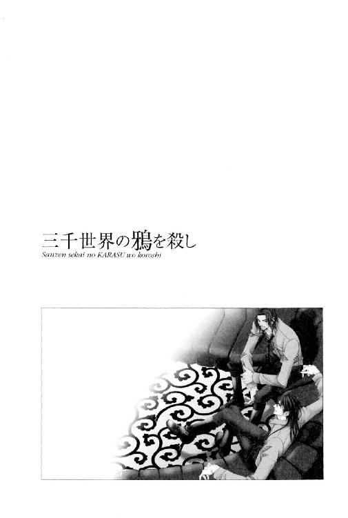

| 三千世界の鴉を殺し(12) (ウィングス・ノヴェル) | |
| 津守時生 | |
| 新書館 (2006) | |


１
惑星バーミリオンの二大大陸のひとつ、アイボリー大陸の風土病と言われてきたオグニ・ウイルスは、その致死性の高さから市民のパニックを恐れた市当局が、患者発生のたびに言論統制を行なうほど恐れられていた。
移民を目的とした惑星改造に着手する前、自然環境と生態系の調査が行なわれるが、潜在するウイルスまで完全に調査するのは不可能だった。
ある日、感染者が発見され、突然人間社会に出現する未知のウイルスをエマージング・ウイルスと呼ぶ。
移民が定着し、アイボリー大陸のエメラルド・フォレストと呼ばれる密林地帯周辺が観光リゾート地として開発されてから、その地域で感染者が出るようになった。
感染しても死なずにウイルスと共生できる自然宿主が発見できれば、ワクチンの研究も可能なのだが、なにから感染するのか、現在のところ判明していない。
感染すると発病から死亡にいたるまでの時間が短く、設備の整った大規模病院でも患者の生存率をわずかに上げるのが精一杯という現状だった。
人間同士の感染は体液による飛沫感染なので、医療関係者は全身を一体化した防護スーツを着用して治療に当たる。
今まで首都カーマインのあるエボニー大陸での発生は、アイボリー大陸からの旅行者もしくは旅行帰りの感染者によって持ち込まれるケースに限られていた。
感染が確認されると、二次感染が疑われる周囲の人間の隔離、および感染者の行動範囲の徹底した消毒が行なわれるが、そうした関係機関の迅速な行動が功を奏しているのか、現在までに三次感染例は一例も報告されていない。
「細菌兵器？ そいつはまた剣呑だが、一体なにを根拠に？」
憲兵科所属のマルチェロ・アリオーニ大尉は、店のオーナーが手ずから作った水割りのグラスを飲み干しつつ、眼前に座る超絶美形にたずねた。
「惑星軍のエメラルド基地の一部と地下通路でつながっている場所が、エメラルド・フォレストの地下にある。そこにある物が、イエロー・タウンの地下にある物と同じ物で、俺たちの敵はそいつをどうあっても隠し通したいわけだ」
「その地下にある物ってのはなんだ？」
「今は言えない」
オーナーの巨漢は、ワゴンに乗せて運んできた最後の酒肴をテーブルの上に並べ、大きな唇に愛想のいい笑みを浮かべる。
「私はこれで。ごゆっくりどうぞ......」
「待てよ、ジャグ。――オスカーシュタイン大尉。ジャグの身元は俺が保証する。彼の一族は、この惑星に到着した移民船第一号に乗っていた由緒正しい宇宙商人だ。流民街を牛耳っているマフィアどもとは、長年対立関係にある。連中には弟一家が殺されているんで、少なくとも確実に『敵の敵は味方』の法則が当てはまる男だぞ」
白い長衣に身を包んだ褐色の巨漢を引き止めた憲兵隊長は、特に彼の主義と合致するらしい最後の部分を強調した。
しかし、ルシファードは相手の別の言葉に昔の記憶を刺激され、改めてオーナーの顔を見返す。面影に重なるものはなかったが、共通する人種的特徴は見出せた。
教えられたものの一度も使わなかったために、あやふやな記憶となった単語を自信なげにつぶやく。
「......バガバッドギーター......？」
「おお！ その言葉を誰から？」
「どこの星系か忘れたが、俺とおふくろのふたりで最低なクソ野郎どもから、幼児ポルノ撮影目的で誘拐された女の子を救出した時、その子の祖父で、チャイタニヤって名乗った爺さんから教わった。十七、八年前のことだ」
「惑星マドナでございますね。私の曾祖母がチャイタニヤの一族の出です。わが同胞がその言葉をあなたにお教えしたのなら、あなたは私の恩人も同じこと。私から可能な限りの助力を期待していただいて結構です」
太い眉の下で大きな目をむき驚いた男は、感激を隠さずに大きな身振りで両手を広げ、きっぱりと宣言した。
そのやり取りだけで大まかなことは把握したマルチェロだったが、仕事柄、生じた疑問は放っておけない性分でもあり、それぞれに気になったことを問いただす。
「符牒に使ったバガなんとかって言葉は、どういう意味だ？」
「私たちの間で信仰されている神について記された聖典の名前です。神かけて、あなたの恩を忘れるまいという意味だと、受け取ってくだされば近いと思います」
狭義の宇宙商人という呼び名は、風に乗せて種子を遠くの土地に送り出し、落ちた場所で発芽して増えていく植物のように、大家族単位で銀河系の様々な惑星に移民し、協力し合って商いを営む地球人の商人たちを指す。彼らはほかの惑星に生きる血族も、身近なものと同様に重んじ、血の絆で結ばれた彼らの結束は固い。
汎銀河系複合企業体の血族版と言える。規模は極めて小さいかわりに、利益偏重の企業とは異なる信頼重視のネットワークは、個人にとって窮地に陥った時に国家よりも頼りになる後ろ盾だった。
次に憲兵隊長は、素晴らしい恩寵を授かったことが今一つ実感できていないらしい宇宙軍の英雄に質問した。
「十七、八年前というと、おまえは十歳程度のガキじゃねえのか？」
「ああ。おふくろとふたりで賞金稼ぎをしていた。ほかにも色々やったが、そこまでチビだった時は、囮役やおふくろの後方支援が主だったな」
「おまえは、銀河連邦宇宙軍中央本部のお偉いさんの息子じゃねえのかっ？ せっかく乗せてもらったエリート・コースから転げ落ちた」
「確かに親父はエリートだよな。だけど俺は六歳から十五で士官学校に入学するまで、おふくろとふたりで小型宇宙船に乗って銀河系をうろついていたんだぜ。宇宙警察の××野郎にゴミ扱いされたこともあったな。だから、軍に入隊してもエリート・コースなんぞに乗った覚えはねえよ。親父とまともに話すようになったのは最近だし、しかも仕事がらみだぞ」
憲兵隊長は不精ひげをはやした顎をなでてうなった。
「......どうりでメチャクチャな野郎なワケだ。身上調査データが不完全だぞ、宇宙軍っ！」
「他人の作ったデータに頼って、先入観で相手を判断する方が悪い」
「ンだとぉっ！」
「まあまあ。今は誤解も解けて仲良くお付き合いされていらっしゃるのですし、そのおかげで私も一族の恩人と巡り会うことができたのですから、神に感謝しております」
ジャグモナハン・アロラはいかつい外見に似合わない穏やかな口調で、小馬鹿にされていきりたつ旧知の大尉をなだめる。
「仲良くだぁ？ おい、経歴詐称野郎。俺たちはいつからダチになったんだ？」
「午後いちに、あんたが俺にベロチューした時からじゃねえ？」
「それを人前で言うんじゃねーって言っただろうがぁっ！ てめえの非常識な面のせいで、ホモダチだと思われるじゃねえかっっっ！ それならおまえのほうが先だろう！ 昨日の夜中、俺を壁に押しつけて太ももをなでやがったくせにっ」
顔色を変えて吠える女大好き男。
負けず嫌いな性格のため、人聞きの悪いことをさらに言いつのり、墓穴を掘っているのに気づかない。
彼より五歳年下の男は、おのれの低い声の魅力を充分承知したキザな言い方でからかった。
「おびえて俺を見上げる君の顔はキュートだったよ、マルチェロ」
「......ンの野郎――っっっ！ いますぐこの場でナットのメス型にしてくれるわっ！」
「勃たないほうに三千ダムド～」
怒り狂って立ち上がろうとする男を剛力で抑えながら、オーナーが苦笑しつつやんちゃな恩人をたしなめる。
「おふたりとも、そのあたりでおやめなさいませ。大切なお仕事の話し合いをするためにいらっしゃったのでしょう？」
「そうそう。なんか話がそれるんだよな、マルチと一緒だと」
「悪徳商法みたいな名前で呼ぶんじゃねえと言っているだろーがっ！」
「な？ それじゃ、いつか共同戦線を張る可能性があるということで、オーナーも話に加わってもらおう。座ってくれ」
「それでは、お邪魔いたします」
褐色の巨漢はルシファードの言葉に軽く謝意の会釈をして、マルチェロ側のソファ兼ベッドに座ろうとした。
「って、なんで俺のほうに座るんだよ、ジャグ！ 圧迫感があるじゃねえかっ」
「広さは充分だと思いますが？ 私も視界は心地よいほうがよろしゅうございますので」
「言ってくれるじゃねえか、黒タコ入道が」
「マルっち。話が際限なくそれ続けるから、いちいち嚙みつくのはやめてくれよ」
「ふん。俺だって野郎のツーショットなんぞ前にするのは、目に心地よくねえや」
五歳も年下の男にしみじみとため息をつかれ、内心反省した憲兵隊長はそれでも負け惜しみを言う。
ルシファードにさきほどの話の続きをうながす意味もあり、オーナーは自分の持つ情報を積極的に話し始める。
「移民が始まる以前から、流民街の地下になにかの遺跡らしきものがあったというウワサは、かねてより耳にしておりました。ただ、その入り口らしき場所が、流民街でも対立するマフィアたちの一番抗争の激しい場所にあり、我々は漏れてくる情報をひろい集めるだけにとどまっております。不思議でならないのが、抗争をくり返す連中が時に最新の軽火器を持っていることでして。我々のような正規の輸入ルートを持たないものたちが、どこからそれらを入手しているのか......。当初、軍の横流しを疑って調査をしたのですが、今のところ少なくとも宇宙軍ではありえないと確信するにいたっております」
「まったくだ。この基地からは拳銃一丁持ち出すのも難しい。ケチなブレッチャー司令官閣下万歳ってトコだな」
憲兵隊長は口の端をゆがめて笑う。
「ならば惑星軍かと思いましたが、宇宙軍以上に厳しい予算でやりくりしているあそこに、そんな余裕はありません。残るは宇宙軍に納入する武器を輸入する企業のルートかと考え、そちらにも探りを入れましたが......」
「余分に輸入できるはずはねーよな。いかな兵士のゴミ捨て場と言われるカーマイン基地でも、宇宙港から輸入される兵器のチェックはしっかりやっている。治安維持のための基地なんだからな。ジャグんとこのように、バラした部品をいろんな荷物に混ぜ、何度かに分けて輸入する小規模な密輸ならバレねえが、マフィアの連中は派手過ぎる」
憲兵隊長は法の番人である自分の職務に反し、民間の武器密輸を知りながら見逃すという驚くべき行為を口にした。
最初から遵法精神に乏しいルシファードも、その程度のことをいちいち聞きとがめる野暮はしない。
流民街で商売をするには、自衛手段として武器が必要だろう。いくら宇宙港がひとつしかなくとも、この規模の惑星で軽火器の完璧な禁輸など不可能だった。
だが――。
「ですが、我々とてこの状況下で最新型ＶＴＯＬの密輸などは絶対にできません。まさか遺跡に最新型ＶＴＯＬが埋まっていたはずもありませんし......」
「あんたたちが遺跡と呼ぶ場所にあったのは、物質転送装置だよ。エメラルド・フォレストの地下にあるのは同じ装置の予備。流民街の地下に埋まっている遺跡は、大昔の巨大な移民船を改造した宇宙船で、外宇宙から漂着したものだ。今はイヴルなんぞと自称する犯罪集団が占拠している。発見したのはこの惑星を改造した会社で、それを銀河連邦に報告せずに隠匿した。今は計画倒産したその会社を吸収合併した企業体が管理していると思われる。二大陸に作られた秘密の武器庫に最新兵器を送り込んでいるのはその連中だ。占拠している犯罪者の集団は、企業体に雇われた手先ということになる」
オーナーは無言で驚愕の表情を作る。
のどに刺さった魚の骨のように、今まで存在を不快に思っていた疑問が一気に氷解する答えだった。
憲兵隊長のほうは、すぐに次の疑問を口にする。
「物質転送装置......か。そんなものが使えるなら、移送システムが激変するな。それを最初に見つけた連中が陰で独占しようというのはわかるが、どうしてさっさと掘り出して持ち去らなかったんだ？」
「デカすぎたんだよ。おまけに稼働させるには相当なエネルギーを必要とする。見つけた連中もそれがなんだかわからず、建設したばかりの発電所からエネルギーの供給を受けて作動させ、初めてそれがなにかわかったというわけだ。その頃にはバーミリオン星もすっかり開発が進んで、自分たち企業の関係者以外の人間も大勢やってきていた。巨大な装置を秘密裡に運び出そうとしても、もう遅い」
「ふたつあるんだし、一個ばらしてレプリカでも作ればいいじゃねえか」
「いえ、アリオーニ大尉。その方法は存外リスクが大きいと思いますよ。解体調査と複製には、それのできる環境と技術者が必要です。貴重なひとつを失うリスクが冒せない状況だったとみるべきでしょう」
商売人は損得の計算が早い。
その解釈に一応納得したマルチェロは、聞いた話から新たに生じた懸念をスクリーン・グラスの男に言った。
「その装置を使って最新の武器をため込んでいるのは、いずれマフィアどもを兵隊に仕立て、この星を支配下に置こうと考えているのか？ いくら貧乏基地でも、首都防衛のために配備されている戦闘のプロだからな。多少装備の質と量でまさる程度のアマチュアの集団に負けるほど、貧弱なレベルじゃねえぞ？」
「それについては俺なりに仮説があるんだが......。それを裏付ける証拠が出てこないことには、その仮説で話を進められねえ。なにしろ現時点でこちらに具体的な証拠がない状況では、軍の情報部に調査を依頼することさえ無理だ。入手可能だった物的証拠の攻撃衛星とパワード・スーツの残骸は、連中が先手を打って自爆させちまった」
「ああ......そういうことか。この程度の状況証拠じゃ、中央本部に直接報告するほどの緊急性はねえ。報告書はセラドンあたりが握り潰しそうだな」
以前から行なってきた独自の調査で、カーマイン基地が所属するヴァンダイク方面軍指令本部に疑惑の目を向けているマルチェロは、おぼろげながら輪郭がつかめてきたらしい。
裏稼業にまで影響力はおよぶが、さすがに軍人ではないオーナーは、セラドンという名称がなにを指すのかわからず、戸惑った表情を見せた。
ルシファードは宇宙商人に説明するついでに、マルチェロの調査の話もする。
「惑星セラドンにはヴァンダイク方面軍指令本部がある。カーマイン基地はそこに所属し、この基地の司令官の任命権と予算配分はそこが握っているんだ。マルチの調べによると、本部出身の司令官が任命されるたび、基地の予算は大幅に削減されて規模が縮小しているそうだ」
「奇妙ですね。普通は逆でしょうに」
憲兵隊隊長は軽く鼻を鳴らし、彼の推論を述べる。
「つまり、基地を弱体化させるために司令官を天下りさせているってことだ。こんな辺境の基地に着任するからには、まず周囲は左遷人事だと思うし、予算削減も懲罰のひとつと考えるだろう。予算削減を口実にリストラを行なって基地の機能を低下させても、こんな辺境惑星で有事など起こるはずもないから、問題ないと判断される。――物質転送装置をネコババしようと考えている連中とセラドンは、グルだってことか！」
「今のところ、マルチの推測を疑う材料はねえな。銀河系にいくつかある巨大複合企業体は例外なく軍需産業を抱えているし、兵器会社が新規に配備する兵器の受注に関連して、軍の御偉方と接触する機会はいくらでもあるだろう。実際軍を退役して、そういう企業の顧問に就任する将軍は多い」
美貌の将校は端麗な面になんの感情も浮かべず、癒着の構造を淡々と語った。
中央本部の情報部部長であるＯ２に聞けば、どの将軍がどの企業体と関係が深いか、たちどころに教えてくれるだろう。よく似た話は、官民の区別なく権力と利権の交わる部署で、くり返し発生している。
マルチェロはけわしい表情でうめく。
「ネコババを見逃すにしても、物質転送装置はマズすぎるぞ。大量生産できるようになってから、複合企業体の研究所で発明した装置だと称し、特許を申請するつもりならまだマシなほうで、連中に膨大な金が入るにしても、最終的には経済活動の一環として組み込まれ、便利な世の中になったなーで話は終わる。だが、隠匿したまま軍事目的に使うとしたら――」
「そう。プロの軍隊に無尽蔵の補給が行なえるとしたら、兵隊の数次第では惑星政府転覆も可能になる」
ふたりの将校の会話を聞いていたジャグモナハン・アロラは、沈痛な面持ちでどちらにともなく進言した。
「お話をうかがっておりますと、この惑星で大変由々しき事態が進行中だとしか思えません。思い切って軍中央本部にご報告なさるのが、よろしいかと存じます。非常に僭越なことを申しますが、この件に関しては、オスカーシュタイン大尉のお父上のご助力を願うのも、ひとつの方法ではないでしょうか？」
「そりゃそうだ。せっかくコネがあるんだから使おうぜ」
「コネもなにも、それが親父の仕事だぞ。直接中央本部所属の宇宙軍を動かすから、さっさと動かぬ証拠をつかんで報告してこいと言われているよ」
なにをいまさらといった、ややあきれた調子で返したルシファードを見つめ、マルチェロが慎重にたずねる。
「俺の目にしたおまえのデータには、おまえの親父の所属まで記載されていなかったが、どこの兵科なんだ？」
「情報。んでもってトップ」
「情報......トップって......おまえ......っ！ まさかＯ２の息子なのかっ！」
顔色を変えた相手を見て、むやみに敵を作る父親の性格を思い出した息子は、自分の知らないところで父親が憲兵隊長のうらみを買っていないといいなーと内心思う。
「なんでＯ２って呼ばれているのか知らねーのか？ オリビエ・オスカーシュタインだから、略してＯ２なんだよ。親父とは仕事がらみで、最近よく話をするようになったって、さっきも言っただろ」
「信じられねえっ。あの伝説の男にこんな若いクソボケ息子がいるなんてっ！」
「悪かったな」
どうやらそこまで手広くうらみは買っていないらしい。
「もうボチボチ定年を迎える年だろう？ おまえも孫っつーならわかるが......」
「憎まれっ子世にはばかるとは言うが、息子の俺とそっくりの外見をした親父を見て、定年除隊しろなんぞと、だれも言わねーよ。銀髪なのはもともとなんだし」
「そうか......Ｏ２は地球系じゃなかったのか。あんな優秀な男が、今も現役なのはいいことだが......それにしてもすげえショックだ。入隊した時からあこがれていた男の息子がこんなクソボケで、しかもあろうことか父親似だなんて......っ！」
「似ているのは外見だけだぞ」
「当たり前だ、馬鹿野郎。かつてＯ２の部下だったという上官から聞かされていた超絶クールな彼の話と、×××女どもの書く妄想ホモ・ポルノ雑誌を読んで喜んでいるおまえとじゃ、全っ然っ、接点がねえっ！ おまえの存在は、もはやＯ２に対する冒瀆だ」
「親父は別に気にしてねーようだけど？」
一応宇宙軍の英雄と呼ばれている息子は、父親の見解を告げた。ちなみに、息子が宇宙軍の英雄の呼び名を頂戴するほど勲功を上げたことも、父親は全然気にしていないと思う。
外見に反比例して中身が変なのも、戦闘能力が高くて優秀なのも、自分たちの息子なのだから当然だと両親は考えるに違いない。
「まわりが気にするんだ。ちっとは親の世間体ってモンも考えてやれ！」
ひとりで熱く盛り上がっている男を見ながら、父親がパープル・ヘヴン最新号をデータに落として亜空間通信で送れと言ったことは、黙っていたほうが良さそうだなと、ルシファードは判断する。
Ｏ２のような性格の男が息子の評判を気にするとは到底思えないのだが、自分の話はＯ２のイメージを崩すと、本日もニコラルーンに嘆かれたばかりだった。
――親父の部下って、結局みんなマゾなんだろうか？ 仕事中は胃に穴が開きそうな思いをしているくせに、理想化した妙なＯ２幻想を抱くんだよな。
魅了の仕方こそ違うものの、ルシファードも多くの部下たちに父親と同等の影響力を持っているのだが、そこに思いいたらないあたり、確かにボケ息子ではある。
宇宙軍の英雄と呼ばれている相手をクソボケ呼ばわりした憲兵隊長は、言うだけ言って我に返った。
新しく作られた水割りを一口飲んで、その場を取りつくろい、また話をそらすと指摘されないうちに、本筋へ話を戻す。
「――それで、これから話をどうするんだ？」
「今日、俺が地下の宇宙船にハッキングして、連中の使っているコンピュータのデータを手当たり次第にコピーした。量が量なんで、その分析に相当時間がかかるだろう。幸い都市警察の電脳刑事たち三人が、プロジェクトのメンバーに入ったんで、能率は飛躍的に上がるだろう。そのデータの中にどれだけ価値のある情報があるか、だな。ほかにはガイ・コンドウ少将がこの時期に休暇を取って、セラドン星からバーミリオンに来た目的を知りたい。彼のセラドンにおける地位や周辺環境の調査は、親父に頼んである。――たぶん親父のことだから、セラドンについて色々調べさせ、頼んだ以上のことを教えてくれると思うが」
「そいつはマジに助かる話だぜ。バーミリオン星から動けない俺たちじゃ、セラドンの内情なんぞ調べようがないもんな」
「中央本部情報部から派遣されてきたマーベリック少佐には、コンドウ少将の友人でありバーミリオン星経済界の大物ミシェル・ロメール氏と面会し、彼と彼の家に滞在しているコンドウ少将ともども、探りを入れてもらう予定だ。少佐は今、司令官たちと一緒に不審な事故死を遂げた大統領補佐官の弔問に行っている。弔問を利用して、この惑星の裏で進行している事態についても銀河連邦宇宙軍と話し合いたいと、大統領自ら申し入れてきたそうだ」
「大統領補佐官が事故死だと！ また例のアレか？」
マルチェロ・アリオーニが愕然とする。
この惑星では、官僚と政治家の事故死や自殺が異常に多い。本日の昼間、その事実をルシファードに指摘したのは彼だった。
憲兵隊隊長の前に座る超絶美形は、軽く肩をすくめる。
「今のところ詳細は不明だ。が、大統領もなにかを感じたから、宇宙軍と話し合いたいと言ってきたんだろう」
「大統領補佐官は大物過ぎる。事故原因の調査や責任追及の厳しさは今までの比じゃないぞ。もし連中がそのリスクも覚悟の上で、補佐官にまで手を出したとしたら――」
「連中のチェック・メイトは近いってコトかな？」
悲壮な面持ちの相手が言いよどんだ先を、ルシファードが引き継いで言った。
マルチェロはうなり声を上げる。
「涼しい顔をして言うな、アホタレ。そうなったら、やべぇだろうがよっ！ このままじゃ、まずい。早くどうにかしないと惑星ごと乗っ取られるぞ」
「しよーがねーじゃん。あんたはすっかり忘れているかもしれんが、俺はここに転任してきて二ヵ月にならねえんだぜ？ 移民前から計画して準備を進めてきたやつら相手に、先手を打てるかっつーの」
焼き鳥の串をリズミカルに振りつつ悲観的な発言をするものの、セリフほどルシファードの口調は暗くない。
眼前に座る季節外れの転任者について、アリオーニ大尉は調査権の及ぶ範囲で調べたことをすべて覚えていたが、この話し合いの最中には格別意識していなかった。
そうだった。
この男はたった二ヵ月弱の間に、この基地に六年いた自分より多くの企みを暴き、真相に迫ろうとしている。
〝宇宙軍の英雄〟という大袈裟なあだ名は、絶世の美貌に添えるシャレや嫉妬混じりの皮肉などではなく、間違いなくその能力の高さを称賛するものだった。
その評価は、所属する兵科で必要とされる戦闘指揮能力、作戦立案と実行、自身の戦闘力によって得たものだったが、ルシファードは父親と同じ兵科に配属されたとしても、実力で完璧な後継者という称号を勝ち取っただろう。
――なのに性格は天然ボケっつーのは、どーゆーバランスだよ。
自分の非を素直に認めたくないマルチェロは、どれをとっても常識の枠内に納まらない男に対し、理不尽な怒りを感じる。
そんな憲兵の心中を見すかしたオーナーが、苦笑混じりに助言した。
「意地を張るのは男の美学だとおっしゃるのも、ほどほどになさいませ。せっかくできた楽しい同性のご友人を失いますよ」
「こいつが有能なのは認めるが、天然ボケなのもまごうかたなき事実だぞ。意地もなにも本当のことを言ってなにが悪い。なぁ、ルシ公！」
「好きに呼べ。もうすっかり言われ慣れちまった」
今まで見たことのないエスニック料理の酒肴ばかりが並ぶテーブルを前にして、現在ルシファードの関心は生春巻にある。
壮年の巨漢は小さく何度もうなずくと、なんとも言えない優しいまなざしで黒髪の男を見つめた。
極めて有能だがプライドも高く、個性的というより強烈なクセのある憲兵隊隊長が、連れの男の下について動くことを承知していると聞いた時、かなり意外に思った。
その思いも今の答えを聞いて氷解する。
同じリーダーでもさまざまなタイプがあり、この若者は父親と違うタイプのカリスマというわけだ。
親しくなって間もない年下の青年に自分が甘えていることを、マルチェロは死ぬまで気づかないだろう。
ジャグモナハン・アロラは多くの宇宙商人の例に漏れず、海千山千の男だった。
彼の座右の銘は共存共栄。自分が一人勝ちで儲けるだけでは意味がない。客も栄えてリピーターになり、より上客になってこその商売繁盛だった。
商売人の計算とは別に、公私にわたってさまざまな恩恵を受けた一族の絆を維持するため、一族の掟には従う。一族の幼い娘をおぞましい運命から救ってくれた恩人に対し、できる限りの便宜は図る心積もりでいる。
だが、掟云々とは関係なく、自身が本気で入れ込み始めていた。
自分の年齢の半分も生きていないようなこの男に賭けてみたい。きっと金に代えられない大きななにかが、配当として戻ってくる気がする。
大きな鳥や飛行艇やシャトル。空を見上げて、飛んでいくものに胸を高鳴らせた少年の日を思い出す。
アロラはおのれの生き方に誇りを持ち、得たものに充分満足している。と、同時に翼あるものを見上げた日のときめきも忘れていない。
――いわゆる男のロマンというやつだな。
六年前、挑戦的な目をした憲兵隊隊長が現われた時にも覚えた高揚感だった。
排他的な宇宙軍に猛烈な売り込みをかけ、基地内に店を構えることに成功したほど、商売上手でしたたかなオーナーたちは、マルチェロ・アリオーニ大尉の人となりを気に入った。
オーナーたちの協力を取り付け、基地内の大掃除をやり遂げて彼らを満足させたという輝かしい経歴を持つ憲兵隊隊長は、再びバーミリオン星の今後についての話に戻る。
「たとえ地下の宇宙船を不法占拠している連中が、最新の銃火器をしこたま持ち込んだとしても、カーマイン基地を抑え込んで惑星全体を乗っ取るためには、よく訓練されて統制の取れた兵隊が相当数必要だ。いくら抗争をくり返しているとはいえ、マフィアの構成員たちが優秀な兵隊になれるとは思わないんだが――......待てよ。エメラルド・フォレストの地下にも武器倉庫があるってことは――惑星軍もグルなのかっ！」
「じゃねえの？ 秘密を維持するには、秘密を知るものが少ないほうがいいから、惑星軍全部が一味とまでは言わねえ。兵士は上官の命令に従うもんだ」
着任二ヵ月弱では知らないことだろうと思い、オーナーがルシファードに興味深い情報を提供する。
「惑星軍に入隊して十年在籍すれば、無条件でカーマイン市の市民権を得られる制度があります。市当局の摘発を受けた際、家族内にひとりでも正式な市民権を持つ人間がいれば、ひとりもいない流民の家族とは扱いに格段の差が生じます。犯罪が多くて失業率も高い流民街で一生を送るより、薄給だろうと将来に希望の持てるほうがいいと、流民の若者たちの多くが惑星軍に入隊し、家族もそれを歓迎する場合が多いそうです」
「なるほど。入隊してから同郷の先輩たちに面倒を見られれば連帯感が生まれる上に、心理的にも逆らえなくなるか。マフィアのボスたちの命令で入隊するやつもいそうだし、薄給激務となれば下級兵士の大半が、流民の若者たちで構成されている可能性も高い。惑星軍上層部を調べて白黒灰色に分けておくと、有事の際に役立つな。ガーディアンをひとり、そっちに振り分けておくか」
冷静に分析する黒髪の大尉とは対照的に、栗色の髪の憲兵隊将校は固く拳をにぎり、ターコイズ・ブルーの目を熱い怒りにきらめかせた。
「×××！ 軍事クーデターをもくろんでいやがるのかっ。宇宙軍をナメやがって！ 物事がテメエらのたくらみ通り、うまくいくと思うんじゃねえぞっ」
「このままだと、いくんじゃねえ？」
だるそうなつぶやきを聞いたマルチェロは、血相を変えて立ち上がるや否やプロジェクト・リーダーを怒鳴りつける。
「ルシファード・オスカーシュタインッ！ てめえ、それでもあのＯ２の息子かっ！ 本腰入れる前から、ヘタレたことぬかすんじゃねえ、クソボケッ」
「うるせえなぁ。この至近距離で吠えるなよ、ワンコ。俺は地球人より耳がいいんだ。客観的事実を指摘しただけだろう。クールに動かなきゃならねえのに、今から熱くなってどうする」
「最初から負けを認めたようなことを言ったじゃねえか。ケンカは気合いでやるもんだ。俺は絶対勝つ気でやってやる！」
ラテンの情熱に溢れる憲兵隊隊長は、女性を愛するのと同じ比重でケンカも愛する熱血の正義漢だった。この世で一番きらいなものは、アンハッピー・エンドの恋愛映画とケンカに負けること。
見てくれ通りに暑苦しい男だなーとルシファードは思ったが、さらに吠え猛られると耳に支障が出そうなので、思ったことをなんでも口にしてはいけないという、もはや彼女の口癖になりつつある副官のいいつけを今回は忠実に守る。
ほかに言うべきことがあった。
彼は立ったまま熱弁をふるう男をスクリーン・グラス越しに見上げ、チームのチーフとして静かに告げる。
「このプロジェクトは任務だ。俺は与えられた任務の遂行に全力を尽くす。物理的に劣勢なのにヴァンダイク方面軍のバックアップが望めない以上、カーマイン基地に単独でこの事態を解決する力はない。俺は自分たちの能力を過大評価も過小評価もしていない。できる限り早く、この惑星に進行中の陰謀を告発できる証拠を集め、情報の分析結果とともに中央本部に報告するのが、このプロジェクトの目的だ」
「......ケンカはもののたとえだ。俺も正面切ってドンパチやろうと言っているわけじゃない。チェック・メイトしたつもりになっている連中の、鼻をあかしてやれれば充分だ。最後に宇宙軍側が勝ちゃあいいんだからな。おまえが、最初から本気で全力を出す気があるかどうかを確認したかっただけだ」
ソファ・ベッドではなく、純粋にソファ代わりに使っているベッドに腰をおろし、マルチェロも捜査官の顔になって冷静に応じた。
それでも意気をくじかれた物悲しさを全身で訴えるので、ルシファードは犬を厳しくしかり過ぎた飼い主のような心地になる。
マルチェロ・アリオーニを極めて犬的な人間だと認識したのが間違いのもとだった。
人間に非道な真似をしても平気なのに、口で文句を言えない動物をいじめると、どうにも落ち着かない。この居心地の悪さは、決して弱い者いじめをするなという、母親の厳しいしつけにルーツがあると思う。
なにしろ目の前で耳と尻尾を垂れている軍用犬が尊敬するＯ２は、弱い者いじめも大好きなのだから、幼かったルシファードに動物への虐待行為に対し、罪悪感を植えつけられる人間は母親しかいない。
昼間に頭の悪い犬をかばって失敗し、情けない思いをしたばかりだった。しかし今度は、別に悪さをしたわけでもないし――。
らしくもなく自分に言い訳をすることがバカらしくなる。スクリーン・グラスを乱暴にはずし、テーブルの上に手を突いて身を乗り出したルシファードは、反対側で言葉もなく哀愁を漂わせる男の双眸を正面からのぞき込んだ。
いきなり生きた至高の芸術品に息がかかるほどの距離まで迫られて、ホモっ気なしの憲兵も類稀な美貌の与える衝撃に硬直する。
「任務は任務として、俺が個人的にミンチにしてやると決めた野郎がイヴルにいる。奴は俺が絶対にブチ殺す。親父や宇宙軍に邪魔はさせねえし、そいつに関しては物質転送装置とか宇宙軍のメンツとか、そんなものも俺の知ったこっちゃねえ」
銀河連邦宇宙軍の将校にあるまじき暴言を吐く男の黒眸が、次第に中心から金色に変わっていく。
金環蝕のごとく、内に闇を孕んでもなお抑え切れず苛烈に燃え上がる恒星の輝き。
本気を伝える視線に捕らわれたマルチェロだけでなく、脇から眺めるオーナーも〝日蝕眼〟の禍々しく神秘的な輝きに魅了される。
「もし、マフィアどもや惑星軍が俺の邪魔をしやがったらブッ潰す。――どんな手を使ってでもな」
獰猛な笑みとともに最後のひとことを言ってのけた彼は、その一瞬だけ無意識のうちに殺気を放っていた。
背筋を走った戦慄と腕の鳥肌に耐えるふたりの気も知らず、ルシファードは言いたいことを言って満足し、ベッドに座り直す。
「以上、俺の本音だ。任務と私怨は分けるつもりだが、状況次第ではどうなるかわからねえ。だからあんたは、私怨がらみのゴタゴタに巻き込まれないようにしろよ。この基地よりランクが下の左遷先があるとしたら、宇宙軍刑務所の中だ」
話しながらテーブルから黒い眼鏡を取り上げ、再び目元をそれで覆い隠そうとする。
昨夜、憲兵科の大尉が目を隠して話す人間を信用しないと言い、ルシファードは一理あると認めたために本部ビル内の販売店で購入したばかりのスクリーン・グラスを外した。
「ま、待て......っ！」
マルチェロは思わず制止していた。
常人離れした美貌にはめ込まれた異形の双眸――。
もはや人外の美と呼ぶほかないそれは、性とは別種の魅力で憲兵隊隊長の心を強く揺さぶる。
この美しい男が殺気をまとった時、この美貌はある種の〝記号〟なのではないかと、脈絡もなく思った。
たとえて言うなら一瞬で多くの命を消滅させる威力のある兵器。ひとが遠く及ばない強大な力を持つ存在の非情な美しさ。
そして――男たちはその力に惹きつけられ、憧れを抱かずにはいられない。
「なんだ？」
「つまり......だな。野郎同士向き合って酒を飲むのはつまらねえから、せめて綺麗なその面で、俺とジャグの目を楽しませる程度の役に立て、ということだ」
「......それじゃ、向かい合って座る俺の目を楽しませてくれるのは、だれ？」
一応眼鏡を持つ手を途中で止めたルシファードが、暗い声でたずねる。
宇宙軍の英雄がいかに規格外の頭の持ち主でも、フェロモン・ヒゲと黒タコ入道を観賞し、目に心地いいと感じる感性はない。
マルチェロの提案に心から賛同するオーナーが、愛想良く言葉を添えた。
「私ではお慰めできない代わりに、本日おふたりのご飲食代は当店のサービスということでいかがでしょう？」
「だって経費だし。喜ぶのはブレッチャー司令官であって、俺じゃねえんだが」
「腹を割った話し合いなんだから、たまにゃ相手に目を見せて話せよ」
「ああ、そういうことなら......」
ほとんど素顔を隠すことが習い性になっている超絶美形は、憲兵隊隊長がでっち上げた男らしい口実を疑いもせず了解する。
スクリーン・グラスをたたんで、つるをワイシャツの胸ポケットに差し込む。
生きた芸術品の美術鑑賞が続けられると知って、喜んだオーナーが最高級の酒のボトルを追加注文した。
ルシファードの虹彩はもとの黒に戻っていたが、マルチェロはグラスを傾けつつ、先程の凄味のある笑みとたんかを思い出す。
住民を盾にしたテロリスト制圧を目的として、スペース・コロニーを一基使用不能にした男は、見事にひとりの犠牲者も出さず任務を完遂したにもかかわらず、直後に自身が所属する宇宙軍に逮捕拘束され査問委員会にかけられ、中佐から大尉に二階級も降格という屈辱的な扱いを受けた。
それを――。
〝この基地に左遷されてよかった。毎日結構楽しい〟
子供のような満面の笑顔で言った。
彼は任務に臨んで最良と思える手段を選択し、決断し、全力を尽くし、責任を取った。なんの後悔もないのだろう。
連邦宇宙軍の戦略コンピュータＭＭシリーズも、彼の作戦行動を完璧と評価した。
人間と異なり公平な戦略コンピュータすべてから無謬という結論を下されたのに、彼は降格処分を受け銀河系の端の惑星に左遷された。その裏には、コロニー関係者に向けての高度に政治的な判断という名の作為があり――おそらく嫉妬や悪意の存在もある。
〝もし、マフィアどもや惑星軍が俺の邪魔をしやがったらブッ潰す。――どんな手を使ってでもな〟
殺気をはらむ黄金の双眸は、一片の作為もなく彼の本気を伝えていた。スペース・コロニーを壊して後悔しない男なら、決意した瞬間に躊躇せず言葉を実行に移す。
自分をエリートではないと言った彼にとって、軍服の左胸に並ぶ略綬は単なる行動の結果と記録であり、他者に誇る成果ではない。
昨夜から現在まで、一緒にいた時間はトータルで半日にも満たないのに、型破りという月並みな言葉では表現しきれないほど、予想外の言動の連続だった。
〝他人の作ったデータに頼って、先入観で相手を判断する方が悪い〟
――まったくだぜ、ちくしょう。退屈しのぎに落ちこぼれのエリート・ジュニアをいたぶろうとした俺が、すごくカッコ悪いじゃねえか。
いたぶるどころか強烈な反撃をされ、しかもそのジュニアの父親は、情報戦にかかわる軍人ならだれもが一度は耳にする伝説の情報科将校Ｏ２だという。
こうやって並べていくと、自分がいかに無謀な戦いを挑んだ間抜けかが如実にわかって情けない。
認めるのは業腹だが――。
五歳も年下の漢に惚れてしまった。
連邦宇宙軍中央本部に所属し、Ｏ２のようにクールな上官の下で、命がけの任務をこなすクールな自分を夢見ていた。
現実は銀河系の端っこのクソッタレな貧乏基地に左遷され、天然ボケの年下野郎の下で、かなりおくれを取っている敵に情報戦を挑むはめになったカッコ悪い自分がいる。
中身は全然違うのに外見だけは父親のＯ２にそっくりだという期間限定の上司は、私怨で敵をミンチにすると宣言をしてのけ、惑星軍やイエロー・タウン・マフィアに戦争を仕掛けるのも辞さない覚悟だった。
どんな方法で戦うのかはさておき、私怨がらみのトラブルに巻き込まれるなと言われても、無理な相談だと思う。
友人が殴り合いを始めたら、即座に駆けつけて参戦するのが男の流儀というものだ。
憲兵隊はそんな理由で酔った下級兵士の集団と殴り合い、ぶちのめして営倉に叩き込むのも仕事のひとつにしてきた。憲兵隊隊長がケンカの現場から逃げ出しては、部下たちに示しがつかない。
それに――。
負け戦確実だろうが、軍規違反だろうが、カッコ悪かろうが、この男と一緒に戦うのはものすごく面白そうだ。
「おい、クソボケ」
「ん？」
練り物を平たく潰して揚げたものをかじった男が、予想を越える辛さに顔をしかめながら短く返事をする。
「宇宙軍の英雄がクソボケ呼ばわりされて、なんの抵抗もなく返事をするな。それにさっきあれだけ夕飯を喰っておきながら、まだ喰うのかよ。どういう胃袋をしてやがるんだ、おまえは。――じゃなくて！ オグニ・ウイルスをどうして細菌兵器だと考えたんだ？」
「なぁ、ジャグ。この揚げたの、味蕾を破壊しそうなほど辛いんだけど、作る時にトウガラシの分量を間違えたんじゃねえの？」
もはやすっかりタメ口の恩人に、オーナーは激辛が特徴のエスニック料理なのだと教える。
だんだん黒髪の異端児とのつき合い方がわかってきた憲兵隊隊長は、相手が興味を持つ順番が回ってくるまで辛抱強く待つ。
辛さに耐えかねて酒で口直しをしたものの、こっちの味までわからないとこぼした男は、やっとマルチェロの質問に答えた。
「今日、どこかの企業体が客船を使って生物兵器の実験をしたのではないかと、強く疑われる話を聞いたんだ。その連想だが、バーミリオン星の物質転送装置を隠匿しようともくろむ企業体なら、その程度のことはしそうだからな」
「ああ、それか。脳を破壊して血と膿の塊にするオグニ・ウイルスもすげーイヤだが、グリーン・ボムのほうオグニ・ウイルスより、百万倍感染したくねーよな。生きながら身体の中を虫に喰われるってのが、猛烈に気色悪くてたまらん」
言いながらその光景を想像した憲兵隊隊長は、自分の言葉に身震いする。
今度はルシファードが驚く番だった。
「なんで？」
「簡単な連想だろ。おまえは今日、需品科のドミニク・バンカー少佐に会った。彼女の特徴はなんといっても、あのハードなアイパッチで、男なら美女がそんなものをつけている理由を知りたいと思うのは当たり前だ。彼女と亭主が左遷された理由はワルトハイム号救難事件で、よく調べればグリーン・ボム発生から関係者の処分にいたるまで、胡散臭いことこの上ないってことくらいわかる」
虹彩と瞳孔の狭間に黄金の環をはめ込んだ黒い目が、考え深そうに不精ひげの男を見返す。
「あんたは、グリーン・ボムをワルトハイム号に送り込んだとおぼしき汎銀河系複合企業体の名前まで調べたか？」
「船主は至極真っ当な定期宇宙船の運航会社で、業界じゃ中の下程度の規模なんだが、その親会社を突き止めるのに手間がかかったなぁ。あいだに実態のないダミー会社やら投機ファンドを装った持株会社やらが入って、本当に突き止めたかどうか俺も自信がないんだが......」
「あんたの推測でいい。聞かせてくれ」
「ＦＲＣって地球系メインの複合企業体......らしいとしか言えねえな。汎銀河系複合企業体というだけあって、やつら節操なく提携したり買収したりしやがって、途中からほかの企業体が混ざっていたりしやがる。調べるほどワケがわからなくなって、始まりが他人の女房への好奇心だったし、アホ臭くなってしまいにゃ調べるのに飽きた」
不本意ながら自信なげに言った憲兵は、肩をすくめて話にオチをつけた。
連邦宇宙軍の一将校では、おのずから捜査能力に限界がある。アリオーニ大尉はそれを言い訳にしなかった。
話を聞いていた素顔の超絶美形は、優しく微笑んでつぶやく。
「いいな......」
「あん？ なにが」
「あんたがだよ。こんな辺境惑星で遊ばせておくのはもったいねえ。このプロジェクトが終了したら、親父にあんたを部下として引き抜けと言っておくよ。親父は外道で鬼畜な仕事中毒だが、自分がずば抜けて有能なだけに嫉妬とは無縁で、有能な部下は正当に評価するありがたい上司だ。適材適所で、ちゃんと出世できるように考えてくれるし、仕事のやりがいはすげーあるぞ。......ちびっと、ありすぎるかもしれんケド」
歯に衣着せぬ息子は、色々不穏なことを混ぜて言う。
肉親としての気安さだけではなく、父親のひととなりを他人より知る人間として、彼なりに真実を語る義務を感じての発言だった。
Ｏ２に憧れていると告白した憲兵隊隊長は、当惑の表情でターコイズ・ブルーの目をしばたたかせる。夢のような話なのだが、まだ実感がわかない。と、いうより――。
複雑な感情を整理できないまま、相手の好意に応える必要から口を開く。
「ありがたい申し出だが、俺は別におまえに自分を売り込んだつもりはないぞ」
「もちろん。マジでもったいないからさ」
「そういう話は、この騒動が片付いたらな。そもそも、この惑星で軍事クーデターが起きたら、真っ先に攻撃されるのはこの基地じゃねえのか？」
「そうだね♡」
「そうだねじゃねえだろっ！ 今こうしている時にも、惑星軍から攻撃されるかもしれないんだぞ。......ちくしょう。具体的な証拠をつかんでいないせいで、なんの防衛策もとれないなんて......っ！」
前髪を片手でかき上げ、くやしそうに歯がみするマルチェロに対し、この惑星にひそむ陰謀を暴きかけている男はのんびりと反論する。
「逆だろ。いつでもカーマイン基地を壊滅できると思っているから、完全に準備が整うまで放置しているんだ。下手に防衛策なんぞを取ると、この基地にもぐりこんでいる連中の手先に密告されて、計画を前倒しにされるぞ。アイボリー大陸から不意打ちで大陸弾道ミサイルをブチ込まれたら、こっちはなすすべもなく全滅だな」
「待て待て。対空防衛システムなら宇宙港にあるぞ。輸送科の管轄だ。さすがに惑星軍から大陸弾道ミサイルを発射されるなんて想定はしていないだろうが、制空権の死守は首都防衛の要だからな。そいつで基地と政治経済の中枢があるパープル・タウンはカバーできる」
六年間この基地にいて、若干愛着を抱いているらしい憲兵科の将校は、少し得意そうな口調で着任して間もない大尉に教える。
「俺が惑星軍の指揮官なら、シャトルや飛行機の発着時刻に合わせ、通信衛星を利用して熱源迷彩装置のオン・オフを切り替えながらミサイルを発射させるぜ」
「エゲツねえ野郎だな。迎撃ミサイルのほうだって、識別コードで敵味方の区別くらいつけるだろうよ」
「ところがねぇ、マルっち。惑星軍だって、その識別コードを知っているワケなのよ。大陸弾道ミサイルにその識別コードを発信させたら、目のない迎撃ミサイルは味方と誤認しちゃうでしょ。ステルス・ミサイルだとレーザーにも映らないし」
「それじゃ対空防衛システムなんぞ無用の長物じゃねえか！ いや、現在の識別コードを惑星軍に通告せず変更すりゃ......ダメか。飛行機まで手が回らない上に関係者が多すぎて、秘密裡に実行できるとは思えねえ」
長い年月をかけて敵は準備してきた。オセロ・ゲームのように、一気に黒い部分を白一色にひっくり返せる。
その意味と脅威を改めて実感したアリオーニ大尉の表情がけわしくなり、状況の深刻さに顔から血の気が引く。
敵がその気になれば、今すぐカーマイン基地を消滅させられるのだとしたら、自分たちに勝ち目はないかもしれない。
「......連中は、少なくともおまえが秘密を嗅ぎつけたことを知っているんだろう？」
「だが、どれだけ調べたのかまでは知らねえ。おまけに自分たちは圧倒的に有利だと確信している。そこに油断がある」
「相手の油断につけ込もうにも、俺たちになにができるって言うんだ？ 基地内に内通者がいやがるから、大がかりなことはできない。頼みの綱というなら連邦宇宙軍中央本部だが、それだって提出する証拠のデータをそろえる前に基地を攻撃されたらおしまいだ。――こら、なにがおかしい」
自暴自棄になりかけた暗い口調から一転して、にやつく相手の表情に希望を見出した男は、ことさら渋面を作って笑いの意味を問いただす。
「とりあえずなんでも突っ掛かってみる主義のマルっちが、やる前から弱音を吐くなんて、きっとすげー珍しい光景を俺は見ているんだろうなー、あとでからかうネタができたかなーと思ってさ」
「うー。色々あって、どこから怒っていいのかわからねえな。――ともかく、ひとの真剣な苦悩を面白がるんじゃねえぞ、ノーテンキ野郎！ 自分からゴチャゴチャ悲観材料を並べたくせして、てめえはなにを考えていやがる。さっさと白状しやがれ」
「古典的だが『敵をあざむくには、まず味方から』作戦だな。明日、ブレッチャー司令官の前でこのプロジェクト関係者全員を集めて、この惑星で進行中の陰謀の全容を説明することになっているが、その席でこの作戦を説明する。大陸弾道ミサイルを封じられれば、基地の機能は維持できるだろう。流民街の地下からミサイル発射はできねえし」
民間人のオーナーへの信頼性から話せないというより、何度も説明するのが面倒だというニュアンスが伝わってくる。
その気持ちはわかるので、重ねて要求はしない。
ジャグモナハン・アロラは、ふたりの優秀な大尉のやり取りを興味深そうに聞いていたが、ずっと気にかかっていたことを遠慮がちにたずねた。
「あの......流民街には私の一族のものがまだ商売を営んでいるのですが、店をたたんで避難させたほうがよろしいでしょうか？」
「事態が進行したら、マフィアどもがどう動くのか俺には予測できねえ。とばっちりがいやなら早めに逃げたほうがいいな。複合企業体にしても、ここまで仕込んで手に入らないのなら、爆破して跡形もなく破壊しようと考えるだろう。全部の証拠を消す気なら、流民街全部が吹き飛ぶか、陥没した地下に街が崩落する」
ルシファードが平然と挙げた範囲の広大さに、テーブルの向かい側に座ったふたりの男が息を飲む。
「おいっ！ 地下に埋まっているのは移民船を改造した宇宙船だって話だろ？ そんなにデカイものなのか？ それとも乗組員は俺たちヒューマノイド型人類と違って、巨大な知的生命体だったのか？」
「お待ちください、アリオーニ大尉。大昔は地球人の移民船も全員の冷凍睡眠装置を乗せていたので、スペース・コロニー並みに巨大なものだったと聞いております」
子孫に語り継がれている宇宙商人一族の歴史は、地球人の宇宙移民史そのものだった。
「そんな非効率な」
「ワープ・エンジンを搭載していない宇宙船で移民するなら、冷凍睡眠装置を使用するほかありません」
「そんな原始的恒星間移動時代の話は、別の機会に話を聞くとして――。そんなデカブツが惑星の重力下で離着陸できるワケねえぞ！ 常識的に考えて、宇宙空間で移民船を建造してシャトルで乗降するよな？ 惑星の重力に捕らわれて墜落したなら、大気との摩擦熱で燃え尽きないまでも大破していたはずだ」
「また話がズレているぞ、マルっち。ジャグの親類を流民街から避難させるべきか否かって、話じゃなかったっけ？」
「そーゆーことは気になるんだよ！」
謎の答えを追究してやまない猟犬の性を持つ男は、興味の対象が広範囲にわたったので、テーマを決めて研究する学者には向かなかった。
ルシファードも好奇心は強いので、気持ちはわからないでもない。
「バーミリオン星漂着時の記録なんぞあるワケねえから、俺の仮説も交えて話すけど――。物質転送装置の予備がアイボリー大陸にあることを考えると、先に投下した物質転送装置を利用して、宇宙船の着陸を試みたとしか思えねえ」
「すげえな。そんな巨大なものを転送できるほどの機械なのか」
「転送の基準は大きさではなく質量なのかもしれない。宇宙船は外側こそデカイが、中身はほとんど空に近い状態だったからな」
「なんで？」
「その話は明日するから」
片手を振って話を切り上げようとした黒髪の大尉に、今度はオーナーが食い下がる。
「ならばどうして別々の大陸に存在するのですか。せめてそれだけでもお聞かせください。のちほどアリオーニ大尉から詳細をうかがう機会はあるでしょうが、この点だけは今うかがわないと、気になって仕事が手につきません」
「俺もだ！ もったいぶらずに話しやがれ」
「自分たちで考えろ。俺だって本当のことは知らねえよ」
「だから、おまえの仮説ってやつを話せっつーんだ。俺たちはおまえから全部の情報はもらってねえんだぞ」
まったくですと、本来は控え目なオーナーも好奇心には勝てないようすで相槌を打つ。
目を輝かせて説明を待つふたりを前にして、抵抗をあきらめたルシファードは、のどを湿らせる酒のグラスに手を伸ばした。
２
ライラ・キムは上官とその友人たち、途中乱入の憲兵隊隊長を加えたメンバーと食事をすませてから、一度独身士官用宿舎の自室に戻った。
本日から深夜勤務に入った彼女は都市迷彩の戦闘服に着替え、宿舎前からリニア・カーに乗って宇宙港に向かう。
シャトルの発着がないばかりか、完全に閉鎖されている深夜の宇宙港に人間はいない。それでも不審者が侵入する可能性がある限り、兵士たちが交代で無人の宇宙港を警備し巡回するのは、バーミリオン星にたったひとつ存在する、宇宙との接点だからだった。
惑星に暮らす人々の中には、一生惑星外に出ないで終わるものも多く、彼らは宇宙船という閉鎖空間の中で生活したがる人々の気持ちが理解できない。
万一の場合は窒息死の危険がある場所で、どうして安心して生活できるのかと思う。
戦艦の乗船勤務が長かった兵士たちの中には、地上勤務が長くなると精神的にダメージを受けるものがいた。
彼らにとって惑星は重力の牢獄であり、地平線まで見渡せる惑星にいるほうが閉塞感がある。物理的な空間の広がりより、精神的な解放感のほうが重要だった。
――自由じゃねえって感じ。
士官学校在学当時、ルシファードは惑星での生活をそう言った。
これだけ好き勝手していて、どこが自由ではないのかと心の底からあきれたものだったが、今はライラもあの時、彼が見せた苛立ちと餓えが少し理解できる。
宇宙船という翼は必要だが、上下左右前後に関係なく、どこにでも向かって進めるという解放感は大きい。
惑星にいると平行移動のくり返しになる。重力に拘束されている感覚があった。
人工重力下の戦艦内でも移動は同じはずだが、その感覚の違いはもはや理屈ではない。
だが、同時にライラは太陽の光や空の色の変化を眺め、地表を吹き抜ける風を肌に感じることが好きだった。ひんやりとして、自然と背筋が伸びる夜の空気の中で働くのも気分が変わって楽しい。
星空や月明かりの下、昼間の喧騒が遠い幻のような静寂に身を浸しつつ無人のターミナルを歩くと、そこはもう別世界――。
携帯端末の呼出し音が鳴り響く。
リニア・カーを自動運転にして、助手席でしばし静かな夜のドライブを楽しんでいたライラは、哀しさとあきらめの入り混じったため息をひとつつき、迷彩服の胸ポケットから携帯端末を取り出す。
あのロマンチックのかけらもない無駄に顔だけは綺麗な男がそばにいない時くらい、世界の美しさに酔いたいものだが、もはやあの男は彼女の付属品なので、こうしてもめごとが追いかけてくる。
――今度はなにをしたの、なにをっ！
手早くイヤフォンを引っ張り、耳にかけて呼出しに応答した。
「はい、キム中尉です」
『こちらはアレックス・マオ中佐。君はまだ宇宙港に向かっている途中かな？』
聞こえてきたのは、予想もしなかった人物の穏やかな声だった。
「イエス・サー！ 敷地内には入りましたので、あと十分ほどで到着すると思います」
『オスカーシュタイン大尉が君と別の任務についたことは、マーベリック少佐から聞いて知っている。それなのにこんなことを聞いてすまないのだが、彼に今すぐ連絡を取る方法がないだろうか？ どうも携帯端末になにかしたらしくて、応答しないばかりか、位置探知システムにも反応がない』
「申しわけありません、サー。そうなりますと私にも――......あ！ 最後に憲兵隊のマルチェロ・アリオーニ大尉殿とご一緒でした。アリオーニ大尉殿が直接つかまらなくても、憲兵隊でしたら緊急の連絡手段があるかと存じます」
ルシファードはともかく、アリオーニ大尉は憲兵隊の最高指揮官だった。重大事件が出来した時にトップが不在だと憲兵隊は大変困るだろう。まして、不在の理由が職務中の色事となれば、発覚して大問題になる。
すみやかに居場所を突き止め、緊急の呼び出しをかけられるように、必ずなんらかの手段を講じているはずだった。
型破りな上官を持ったおかげで危機管理能力が高くなったライラの推測を聞き、通話装置の向こう側にいる男が小さく笑う。
『わかった。ありがとう。実は君にも警告を発する必要があって連絡したんだ』
「警告、ですか？」
『君が宇宙港に到着して監督官室に入ると、ブライアン・バンカー中佐が君を待っている。さすがに君に向かって突然発砲するほど、おろかだとは思わないが、一応弾丸避けとして筋骨たくましい部下を二、三人先に入室させるといいかもしれない』
――優しい声でとんでもないことを言っていないか、この男。
ブライアン・バンカー中佐というと第四連隊の連隊長で、ライラが白ゴリラと命名した剛直な人柄の典型的マッチョ型軍人だった。
金髪を地肌が見えるほど短く刈り込んでいるため、色彩的特徴は彼の肌の色しかない。そうなると白というよりピンクなのだが、ピンク・ゴリラでは別方向のニュアンスが加わるため、便宜上白ゴリラと呼ぶ。
同タイプの過去の例に漏れず、長髪スクリーン・グラス着用のルシファードの天敵で、マオ中佐ではなく彼が直属の上官だったら、黒髪の超絶美形は丸刈り頭にするよう厳命されていただろう。
だが、現在問題になっているのは、彼が需品科に所属するドミニク・バンカー少佐の夫という事実だった。
「今日の昼下がりの話ですのに、バレるにしても早過ぎますね」
『君のほうこそ素晴らしい情報収集能力だ。いくらブライアンが血迷っていても、自分の恥を吹聴して回ったりはしないから、需品科の女性たちが出所かな？』
この言葉で、第六連隊長も事態の真相を把握済みと判断して間違いない。
ただ、バンカー中佐が同じ連隊長のよしみでマオ中佐に相談を持ちかけるほど、ふたりは親しいとも思えなかった。
「おほめいただいて恐縮ですが、本人から直接聞きました。上官が制服の追加発注のために需品科に行って、服をボロボロにして帰ってきたら、一応副官としてはなにがあったのか知っておく必要があると思いましたので」
『ほう、彼の服がボロボロ？ それは素晴らしい。ドミニクはたっぷり楽しんだことだろう』
――......なにを？
『私も当事者から聞いたクチだ。残業の書類仕事を終えて帰ろうとしていたところにブライアンが乗り込んできて、色々外聞がよろしくないことををわめいてね。自分だって部下の下半身の監督責任なんぞあると思っていないだろうに、八つ当たりで怒鳴り込まれたこちらは、実にいい迷惑だ。だけど頭に血が上っているから、言うことがメチャメチャで実に面白くてねえ。時間をかけて全部聞き出してしまったよ。おかげで帰宅がすっかり遅くなってしまった』
声だけ聴いていると、本当に楽しそうだった。
一見学者肌で隠れ武闘派のマオ中佐は、銀河連邦軍中央本部情報科にも籍がある二重軍籍の情報工作員であり、その点でライラの先輩に当たる。
落ち着いた穏やかな声が的確な誘導尋問をくり返し、手もなく踊らされる白ゴリラという光景が目に見える気がした。自分のことでなければ、間抜けな男が美人の女房を若い男に寝取られた話は確かに面白いだろう。
それにしても――。
ニコラルーン・マーベリックといい、Ｏ２の部下はみんな性格に独特のひねりが入っているような気がする。Ｏ２に鍛えられるとこうなるのか、はたまた伝説のカリスマである上官の影響なのか。
念のために聞いておくにしくはない。
「バンカー中佐殿より早く行方を突き止めて、私の上官に忠告していただけると思ってよろしいのでしょうか？」
『私が彼を探しているのは、まったくの別件だ。本来部下のプライベートな問題にかかわりたくないのだが、今回は特別に話しておこう。どうせついでだ』
別件ありがとう。
やはり人当たりがいいからといって、海千山千の先輩たちはあなどれない。自分の任務に関係ない場合、面白いほうに事態が転がるなら、ためらわず傍観しそうな気がする。
いくらルシファードに治癒能力があろうと、出会い頭に毎秒三十六発連続発射のサブ・マシンガンで撃たれでもしたら、周囲が見たくないものを見ることになる。それも彼が頭を撃たれなかったら、という前提条件つきの話だった。
彼が撃たれる可能性を考えると、猛烈に腹が立ってきた。ボロボロの服を見ても、彼がどういう目に遭った末の出来事か、想像するのはたやすい。
ライラは極力感情を廃した声音で上官に礼を述べる。
「ありがとうございます、サー。ついでにせよ、私への警告も感謝いたします」
『いや、君への忠告は赤心からだ。当事者ではない女性に、災いが及ぶことがあってはならない。オスカーシュタイン大尉もそれをもっとも望まないだろう。――ということで、彼には連絡しておく。もしもブライアンが暴れ出して手がつけられないようなら、部下たちに命じて拘束したまえ。宇宙港警備は第六連隊の管轄だ。監督責任者の私が許可する』
「ありがとうございます、マオ中佐殿」
今度の謝意は心からのものだった。
情報部の先輩たちに愉快犯的気質だけでなく、フェミニスト精神が受け継がれているのなら素直にうれしい。
そして、厄介なことにライラの上級者であるバンカー中佐への対処方法も伝授してくれた。
管理責任者の許可があれば、安心して怒り狂った白ゴリラの捕獲ができる。いかに理性を失ったけだものと化そうと、宇宙港拘置所で一晩明かせば頭も冷えるだろう。
彼女が安堵した気配を察し、アレックス・マオは笑いを含んだ声でそれでは――と、短く言って通話を切った。
携帯端末をポケットに戻しつつ、ライラはさきほど感じた怒りを甦らせる。
ルシファードは毎度ながらトラブルを呼び寄せる男だが、今度ばかりは彼に原因があるとは言いかねる。迫られた関係に同意しなかったとしても、あの服の有様では結果に変わりはなかっただろう。
それなのに需品科が男たちの恐怖の的となる原因を作った亭主が現われて、ルシファードを糾弾しようとするのは、大変間違った権利意識だと言わざるを得ない。
バンカー中佐と対面したら、最低限これだけは言ってやりたいということをあれこれ考えているうちに、リニア・カーは宇宙港の旅客ターミナルの右翼側に到着した。
空港と宇宙港警備の兵士たちの宿舎には、時間になると輸送科の兵士が運転する移動用大型輸送車が迎えに来る。
士官はリニア・カーで個々に向かう。
ライラが車から降りた時には、深夜勤務の兵士たちが駐車場の一角に集合整列し、分隊単位で点呼を受けているところだった。点呼の結果は各小隊長に報告され、小隊長はその報告と非番や欠勤届が提出されているものたちのリストとを照合する。
規律を重んじる軍隊において、遅刻や無断欠勤など論外の行為であり、もしも該当者が出た場合は理由次第で営倉に入れられた。
本日付けで特別任務を命じられたオスカーシュタイン中隊長に代わって、副官のライラがこれから第四中隊を指揮監督する。
今まで彼女が行なっていた副官の仕事のうち可能なものは、三人の小隊長の中で階級が高く軍歴の長いボナム少尉が代行することになっていた。
彼女が非番の時はボナム少尉が中隊長の仕事を担当し、最年少のノリス少尉が副官の仕事を担当する。一番軍歴が長い小隊長はメイジャ・アダンだったが、残念ながら彼は下士官の曹長であり、小隊長の中では最下位の指揮官だった。
軍隊の階級至上主義は、組織の歯車のひとつに問題が生じても、次に階級の高いものが自動的に引き継ぎ、活動に支障をきたさないためのものだった。
階級が同じなら、入隊した日付が一日でも早い人間が上級者と見なされる。ただし、日常的に戦闘訓練を行なわない軍医たち医療技官には指揮権がない。
そのように指揮権の引き継ぎに作為の入り込む余地のないことが、重要なポイントだった。
戦場において指揮官は狙われやすく、死亡率は下級兵士のそれより高い。最前線での戦闘中に指揮官が斃れた時、だれが指揮をとるかでもめようものなら、そのあいだに部隊が全滅する。
こうして日常業務でも、だれがだれの上位になるかの確認作業を行なっておく。
組織は大きくなるほど維持管理にエネルギーが費やされる。極限状態の戦場で無駄なエネルギーの消費を許されない軍隊は、階級至上主義をとることにより、いかなる単位でも効率的に管理運用するシステムを構築していた。
カーマイン基地では三ヵ月に一度、ふたつの連隊に空港と宇宙港の警備業務が回ってくる。各連隊がそれぞれ交互に受け持ち、中隊単位で各部所を担当する。
準夜勤務の指揮官から業務を引き継ぎ、申し送り事項の報告を受けるのが、ライラの本日最初の仕事だった。
最小限の照明が残された薄暗いターミナル内に入る。
監督室のドアの両脇に立つ歩哨が彼女に敬礼し、ライラも答礼して通った。
入室した彼女を三人の将校が迎える。
同じ担当地区の準夜勤務だった第三中隊中隊長ロザリンド・バーガー大尉とその副官、そしてライラが中隊長代理を務めているあいだ、彼女の副官になるボナム少尉だった。
「詳細は知らないけれど、マオ連隊長殿から聞いたわよ。特別製の上官を持つと苦労も特別だねぇ」
互いに敬礼すると、やや男っぽい言葉遣いのロザリンドが気さくに話しかけてきた。
ベリー・ショート・ヘアの彼女とは同性ということもあり、食堂で出会うと隣の席に座って言葉をかわす機会も多い。通信科のメリッサ・ラングレー大尉ほどではないものの、気安い間柄だった。
「慣れておりますので」
極秘の特別プロジェクトをどう説明したものかと頭を悩ませていたライラは、マオ中佐の配慮に感謝する。
おそらくニコラルーンが話し、そのあたりの処置を頼んだのだろう。性格に多少ゆがみが生じていてもＯ２の部下だけあって、彼らは頼りになる有能な協力者だった。
ところで、その連隊長から連絡された問題の白い類人猿は、どこにいるのだろうと思っていると、ロザリンドが目顔で控室を示す。
「さっきからミスター某が、ずっとあの部屋であなたを待っているんだけど、面倒なことになりそうなら力を貸すよ？」
「ありがとうございます。ぜひ、お願いいたします」
「よっしゃ」
小声で助力を申し出たロザリンドは、一歩対応を間違えると上官侮辱罪で告発される可能性もあるというのに、不敵な笑みを浮かべた。
自分の副官に振り返り、いたってぞんざいに命じる。
「サム。引き継ぎの業務連絡だけどさ、君たちのあいだでやっといて」
「アイ・マム」
彼もアバウトな上官の対応に慣れたもので、無表情にうなずく。
副官代理を命じられた以外、なにも聞いていないボナム少尉のほうが戸惑い、不明な点を質問したそうな顔をしてライラを見た。
しかし、ゴシップ以外のなにものでもない経緯を漏らすわけにはいかない。あっという間に基地内に広まってしまう。
ルシファードとドミニクは互いに確信犯だからいいとしても、マッチョ教の連隊長にその手の恥をかかせると、後々面倒なことになる。
マオ中佐の言った〝弾丸避け〟という単語をちらりと思い出したが、身長は高くても横幅が人並み以下なボナム少尉では、有事の役に立ちそうにもない。腕力もあまりなさそうだ。
ライラは宇宙港警備の通常装備である拳銃とコンバット・ナイフは携帯している。あちらの出方次第では受けて立つ覚悟だった。
「こちらを長くお待たせしているので、あとはよろしく」
「......アイ・マム」
結局部屋にだれがいるのかもわからない少尉は、ライラの駄目押しに詮索をあきらめてうなずいた。
「ライラ・キム少尉、入ります」
いつもは書類仕事に使う小部屋に入る。
椅子ではなく執務用の机に腰をおろし、腕組みをしていた軍服姿の男が、横柄な表情で入ってきた彼女を見返す。
突き出た広い額の下に陰を作る深い眼窩があり、栗色の目の眼光は鋭かった。彫りは深いが鼻梁は太く鷲鼻気味で、お世辞にも端整な顔立ちとは言えず、大きくえらの張った顔に武骨な男臭さが漂う。
筋肉の盛り上がった厚い胸板と背筋が、ほとんど逆円錐形に近い上半身を構成し、腕も首も固い筋肉に鎧われて太かった。視覚的に窮屈そうな上着は、とてもオーダーメードに見えない。
バンカー中佐は軍隊に多い典型的マッチョ・マンで、放っておくとトレーニング・ルームでベンチプレスを延々とくり返していそうなストイック・タイプだった。ルシファードが言うところの、肉体を極限までいじめ抜くことに快感を覚える体育会系マゾヒスト。
ライラも体育会系ではあるが、男尊女卑でやたら声が大きくて顎の先が割れている筋肉ダルマは嫌いな男のタイプ、ナンバー・ワンだった。加えて、造形美の極致である親友の顔をほぼ毎日眺めてきたせいで、彼女はバランスの悪い顔を前にすると強い違和感を感じる。
軽く曲げるだけで力こぶのできる腕を組んだまま、ブライアン・バンカー中佐は極めて威圧的な口調で詰問した。
「ルシファード・オスカーシュタインは今どこにいるっ！ 下手に隠し立てすると貴様のためにならんぞっ」
「存じ上げません、サー。私が大尉殿とお別れしたのは、娯楽エリアの夕食をご一緒したレストランです。そのあと大尉殿がどこに行かれるご予定なのか、私はうかがっておりません」
「××××っ！ あのクソ野郎は携帯端末をオフにしているばかりか、位置探査システムにも察知させないように小細工をしていやがるっ。いいか！ 士官が緊急招集に応じられない状況に自分を意図的に置くのは、重大な軍規違反だぞっ」
「イエス・サー。私もそのように認識しております」
至近距離で命令に慣れた胴間声を張り上げられると耳が痛い。上級者相手に顔をしかめるわけにはいかず、直立不動のライラは無表情に応対する。
まだ安心できないが、少なくとも中佐はこの部屋に銃を持ち込むほど理性は失っていなかった。こちらが熱く感情的になると、逆にあおる結果につながる。
などというライラの冷静な計算を激しい罵声が吹き飛ばす。
「うるさい、このクサレ穴が！ 俺が聞いたことだけに答えりゃいいんだっ。これだから女ってやつは始末に悪い。軍隊でおしゃべりしたけりゃ総務科の広報担当に転属願いを出せ、馬鹿野郎！ 機動歩兵科に女なんぞ、いるだけで給料泥棒だ」
背後でロザリンドが身じろぎした。
女性や軍隊内での少数種族への差別もまた軍規に違反する。それでも日常的に女性兵士が男性兵士から侮蔑的に扱われるのは珍しくない。
しかし、さすがに連隊を率いる男の発言となれば別だった。指揮をとる女性士官の尊厳を損なう侮辱は部下たちへの影響も大きく、一般兵士の命令不服従を誘因するので問題視される。
ルシファードの行方不明は個人レベルの軍規違反で、バンカー中佐のそれは組織に影響を与えるものだった。しかも、どちらがより罪が重く悪質か、正常に判断できないほど常態化していると思われる。
ロザリンドに同席してもらって正解だった。彼女もこれを予測していたのだろう。
プライベートな問題から発展したバンカー連隊長とルシファードの争いが、査問委員会にかけられることがあった場合、上官と個人的に関係があるライラの証言は、客観的公平性が疑われるという理由で採用されないが、ロザリンドの証言があれば、バンカー中佐が指揮官として適性を欠くという認識を周囲に与えられる。
ライラとしては、親友のためにもう少し点数を稼いでおきたいところだった。この類の男は、こちらがともかく下手に出てナメさせておくと、さらに増長する。
「申しわけありません、サー」
「そもそも、おまえがしっかり自分の男の××××を××××いないから、あのチャラチャラした長髪野郎がふざけた真似をしでかすんだ！ 親父が中央本部の御偉方だろうが、このゴミ溜め基地に叩き込まれた段階で、みんな同じ××なんだ。それをあの××がいつまでも調子コキやがって。あんな××には、おまえみたいな××が一番似合いだ。いいか。自分の男には分をわきまえるよう、キッチリしつけておけ！ わかったなっ」
まくしたてる白ゴリラの口から、地球人女性を侮辱する最大級の罵倒語が飛び出した。
これは日常的に罵倒語があいさつ替わりの軍隊内でも、聞き流されることはありえない極めて悪質な侮辱だった。自分の妻や恋人、娘にこの単語が浴びせられた男は、相手に決闘を申し込んでも当然だと周囲からみなされる。
ライラは一気に体温が上昇したような錯覚を覚えつつ、拳を固くにぎって目もくらむような怒りを耐えた。
ここまで露骨な悪意をもって侮辱されると、この場にいないルシファードを挑発する意図が逆にすけて見える。一連の経緯でルシファードが先に手を出すと、いくら自分の親しい女性が侮辱されたと言っても、心証は彼のほうが悪い。
背後では、ロザリンドが同性の受けた言語道断な侮辱に色をなす気配があった。ライラに対し、同輩の副官という以上の好意を示してくれた彼女だから、この侮辱も我が事のように受け止めているだろう。
それでもライラが無言で屈辱に耐える理由を理解し、その意志を尊重する。
目の前の女性士官が派手に取り乱し、この由々しき侮辱を上官に訴えると騒ぐことを期待していたバンカー中佐は、相手から無表情に黙殺された失望を隠さなかった。いまいましげに舌打ちし、強情な女性士官を今度は本気で短くののしる。
ここにいても黒髪の大尉を捕まえるのは無理だと判断し、寄りかかっていた机から離れた彼は、帰ろうとしてドアに向かいかけたが、今度は無駄に費やした時間に向かっ腹が立ったらしく、足を止めて捨てゼリフを吐く。
「あの増長したクソ××野郎は、草の根を分けてでも探し出す。山ほど腹に銃弾をブチ込んでやらんと気がすまん。どんなに逃げ隠れしても絶対に見つけてブチ殺すから、覚悟しておけとあの臆病者に伝――」
女房に愛想を尽かされた自分を棚に上げ、若く美しい間男を逆怨みした白ゴリラは、月並みで滑稽なセリフを全部言うことが出来なかった。
体重の乗った女性士官の拳が、いかつい顔の左頰に炸裂する。
ウエイトの違いから一撃で倒れる無様はさらさなかったものの、マッチョな身体が大きくよろめく。
ガードされていない軍服の腹に、スピードのある回し蹴りが送り込まれた。
女性とはいえ、肉体を鍛錬し格闘訓練を積んだライラの蹴りは相当な破壊力があった。
バランスを崩したところに受けた一撃は、さしもの筋肉自慢男を吹き飛ばす。
床に転がったその身体に馬乗りになると、ライラは両手で男の上着の襟をつかみ、後頭部を床に叩きつけた。
室内に鳴り響く鈍い音を耳にしたロザリンドが、痛そうな顔をして身をすくめる。
「調子こくなとはこっちのセリフだぞ、白ゴリラがぁ......っ！ 臆病者の貴様が女房から逃げ回ったツケを基地中の男が支払ってきたことを、よもや知らないとは言わないだろうなっ！」
矢継ぎ早の攻撃で第四連隊長を痛めつけた女性士官は、男の首を絞め上げながら獰猛な声でうなった。
彼女の精神状態は、愛する男をかばおうとする女のそれではなく、身を挺してでも子供を守り通すと決意した母親に近い。
まさか自分より下位の、しかも女性に叩きのめされると予想だにしていなかった男は、ショックで呆然としている。
「そこまで女を追い詰めて知らん顔しておきながら、ほかの男が彼女を解放したのが気に入らないとは、ふざけるにもほどがあるだろろう、この×××××ゴリラっ！ ずっと男たちの犠牲に目をつぶって逃げ続けてきた卑怯者が、今度はルシファードを殺すだと？ どこまでも腑甲斐ないおのれから逃げる気かっ。最低な臆病者は貴様だろうがぁっ！」
黒豹は牙をむいて咆哮した。
彼女はメンツにこだわる男同士の争いを決して軽視していない。
階級や能力の差、容姿や年齢の差――。
一目瞭然の差違を持つふたりの男のあいだで、女の取り合いが発生した時、メンツを保てない上級者のストレスは殺意につながるほど高まる。
おのれの敗北を看過したら、自分自身が男社会の中で居場所を失う。存在意義にかかわる分だけ、女を失うこと自体より男には過酷な試練だった。
ブライアン・バンカーとて、夫の地位がすでに形骸化しているのを知らないはずがない。それなのに彼は、妻が離婚成立前にほかの男と関係を結んだというその一点で、メンツを潰されたと怒り、相手を間男として抹殺すると言った。
ライラの怒りが一気に沸点に達したのは、この男が妻と正面から対峙しないための逃げ口実として、ルシファードと争うつもりだと悟った瞬間だった。
「......お、臆病者だと......っ？」
されるがままだったバンカー中佐だが、マッチョ主義者として聞き捨てならない単語に反応する。それでも多少プライドに傷がついた程度では、馬乗りになって糾弾する女性士官の烈しい気迫を跳ね返す気力にはならない。
「女房を自由にしてやる勇気も、やり直すために謝る勇気もないろくでなし野郎は、だれに聞いたって臆病者と呼ばれるんだ！ 違うかっ！ ええ？」
怒鳴りつけるライラは、できるものなら抗弁してみろと軍服の胸倉をつかんで揺さぶった。
彼女が直感的に感じ取っていた真実は、まさに相手の急所をついたらしく、いかつい顔が青ざめてこわばる。
その件について一切何も言うまいと決めたらしく、厚い唇を引き結んで視線を脇へ流した。
「この......っ！」
「待った、ライラ！ これ以上はダメだよ」
もう一発殴りつけようと固めた拳をロザリンドに止められる。
背後から彼女の手首をつかんだ女性中隊長は、立ち上がるようにうながす。
「実に勇敢でカッコよかったよ！ おかげで色々わかったこともある。――バンカー連隊長殿。この暴行を告発なさるなら、ご自由にどうぞ。その代わり、一部始終を見ていた私はキム中尉側の証人になりますので」
ロザリンドはライラを明るく称賛した直後、別の連隊を指揮する男に対し、冷たく慇懃無礼な調子で言い渡す。
所属が違うとはいえ、かりにも士官が上級者に殴る蹴るの暴行を加えるなど、規律を重んじる軍隊であってはならない事態だった。通常なら軍法会議もので、営倉どころか軍刑務所に放り込まれる。
だが、ロザリンドがほのめかすように、情状酌量の余地は充分あった。
業務につこうとしている女性士官の職場にプライベートな用事で押しかけ、なんの落ち度もない彼女をひどく侮辱した末、彼女の親しい男性を殺すと脅迫するような男が、上官としての敬意と待遇を受けるにふさわしい人物なのだろうか。
ひとつひとつは微罪にすぎなくても、ブライアン・バンカーの行ないは軍規に違反している。彼自身の行為が暴行を誘発したのは確かだった。
軍法会議にかけられたら、ライラは間違いなく有罪になる。が、連隊長は告発することで永久に部下たちの軽蔑と憎悪をかう。
軍法会議がどう裁こうと関係ない。集団内の彼らの感覚では、禁断の罵倒語で侮辱されたライラが相手を殴り、蹴り倒すのはいたって当然の行為だった。
それどころか女性の身で、筋肉自慢の連隊長にツケを払わせたライラは英雄視され、称賛と尊敬を集めるだろう。
六人いる連隊長の地位は正副の司令官の次、基地内ではナンバー３だった。それを自分の足元にはいつくばらせるなど、英雄と呼ばずしてなんと呼ぶ。
どちらが本人にとって致命的か、明白だった。
ルシファード・オスカーシュタインを自分の前に立たせるのが目的だったバンカー中佐は、大幅に目論見が狂って、怒りと困惑が半々といった表情で立ち上がる。
肉体的なことより、精神に加えられた攻撃が彼を打ちのめしていた。
正視できず逃げ続けてきた内心の葛藤を白日のもとにさらされ、こともあろうにほかの女から卑怯だと糾弾されるなど、男として一番避けたい屈辱だった。
ライラにはブライアン・バンカーの個人的葛藤など、まったくささいな問題だった。いつもの通り〝男って本当に弱虫〟の一言で片付けて終わる。
彼女が激怒し、許しがたいと思ったのは――。
「ルシファードを殺すと言ったんですよ......っ！ 卑怯でくだらない男の沽券にかかわるという、そんな理由で彼を......っ！」
あの類稀な男の命が、そんな低レベルな男の理屈で危険にさらされるなど、女のライラには我慢できないことだった。
多少天然ボケでも、あれほどの男がほかにいるだろうか。
バンカー中佐は彼女の言葉を別の意味に受け取り、鼻を鳴らして小馬鹿にする。
「そんなに大事な男なら、しっかり貞操帯でも装着させて、後生大事に鍵を握っていろ」
「そういうゲスの勘ぐりしかできないから、こういう恥をかくんだろうがっ！ アルヴ・ストレナーゼ第一等勲章を三個ももらった男のカリスマを甘くみるなよ。......ああ、いいことを思いついた。あなたのような最低の卑怯者でも、銃を撃てるというだけでルシファードを殺せる可能性があるなら、私があなたを殺すことだってできる」
怒りにぎらつく目で連隊長を見据え、物騒なことを言い出したライラの壮絶な笑顔は、制止するロザリンドを身震いさせた。
「ライラ。殺人はかばってやれないよ！」
「決闘です、大尉殿。女房を寝取られた亭主と〝情夫〟を寝取られた女なら、お互いの監督不行き届きということで、名目も立つというものでしょう？」
「ゲスの勘ぐりを逆手に取るにしたって――」
「ブライアン・バンカー！ 私ことライラ・キムは、銀河連邦宇宙軍士官の誇りをかけて、あなたに決闘を申し込むっ。よもや、いやだなどとは言うまいな？ あなたが日頃から見下す女ごときの決闘にすら応じられず逃げ出すなら、この基地でもっとも臆病な卑劣漢だとふれ回ってやるぞ！」
褐色の肌をした精悍な女性士官は、指を突き付けて堂々と宣言した。
バンカー中佐のいかつい顔が怒りで醜悪に歪み、耳まで真っ赤になる。
女ごときの見え透いた挑発に乗るのは業腹だという思いと、基地でもっとも臆病な卑劣漢だなどと、現時点で仮定の言葉でも言われるのは許しがたいという思い。
屈辱的な決闘の申し込みに対し、それでも即座に諾と言えないのは、ヒステリーを起こした女などの言うことをまともに相手にできるかという、あきれるほど筋金入りの男尊女卑思考のせいだった。
なりゆきで立合い人のような立場にたたされたロザリンド・バーガー大尉は、連隊長の逡巡するようすに眉をけわしく寄せる。
目下のものにこんな侮辱的申し込みをされたら、本来激怒して即答するタイプのはずが、うなるばかりで答えるようすがない。
その理由に思い当たり、今度は彼女が激怒した。それでもライラほど我を忘れたりはせず、上級者に対して一応丁寧な口調を心がける。
「バンカー中佐殿。あなたは今の態度で半分とまでいかないまでも、三分の一は確実に部下を失いましたよ。ライラがあなたに決闘を申し込んだのは、あなたが邪推しているような恋愛感情からではありません。上官に心酔している副官が、自分の命を賭けて上官の身を守ろうとしたのです。兵士としてもっとも美しいこの犠牲的行為を、性別が女だというだけで認められないなら、私たち女性兵士もあなたに対し、忠誠も尊敬も信頼も捧げません。――あんたみたいに忠誠に値しない最低なクソ野郎の命令で死ぬくらいなら、あたしゃその場で脱走するね！ 脱走兵として射殺されたほうが、自分の誇りを貫いただけ百倍マシってもんだ」
言ううちに怒りを抑えかねた彼女は、うわべだけだった上官への礼儀もかなぐり捨てて、最後に本音を吐露する。
ブライアン・バンカーはたくましい体を小刻みに振るわせた。
屈辱や怒りやみじめさや無力感に悲しさ、寂しさなど、今までの積み重ねで整理のつかない自分の気持ちと、小賢しい女どものうっとうしさにすべてを投げ出したくなる。
「やかましいっ！ おまえら女なんかに俺の気持ちがわかるかぁっ！」
「わかるわけないじゃない」
ふたりの女性士官が異口同音に言い返す。
金髪碧眼に白い肌のロザリンドと黒髪黒眸に浅黒い肌のライラ。
容姿も性格も違う彼女たちの目に、そっくり同じ冷ややかな侮蔑があった。
「そういう自分だって、女の気持ちがわかるかっての！ 勝手なことぬかすな。このクソ甘ったれが。そーゆー泣き言はママに言いな。同じ甘ちゃんでも本物の子供のほうが、なりが小さいだけ、まだ可愛げがあるってもんだ」
「女の人権を認めない最低男の、クソの詰まった頭の中なんて、だーれが理解したいもんですか、汚らわしい」
営倉だろうが査問委員会だろうが、どこへなりと行ってやらぁと腹をくくった女ふたりの攻撃は苛烈を極める。
その時、思い切り腰の引けた気弱な声が、二対一の争いの中に割って入った。
「あの～......お取込み中、大変恐縮ですが～......」
「そろそろこのあたりで～......私たちに和平案を提案させて頂きたいのですが～......」
ロザリンド・バーカー大尉の副官サミュエル・ロス中尉と、中隊長代理を務めるライラの臨時の副官になったボナム少尉が、いつのまにか開いていた出入り口の両側から、室内に半身を乗り出すようにして室内をうかがっている。
これだけ怒鳴ったり叫んだりすれば、確かに隣室にいた彼らの耳に届くだろう。自分たちの上官が、とんでもなく物騒な方向に突っ走っていると知って、あわてるのも当然だった。
ロザリンドは自分の副官を横目でじろりとにらむ。
「失せろ」
「ノー・マムッ！ いやいやいやいや、ちょっとお待ちください、大尉殿っ。ここで自暴自棄になっちゃあいけませんっ。こうなりゃ、行き着くトコまで行ってやらぁとか、考えちゃってますでしょ？」
「だからなにさ？」
「やーめーてーくーだーさーい。俺がついていながら、どうしてお止めできなかったって、中隊の強面のオッちゃんたちにボコられますって」
「私の知ったことじゃない」
「そりゃそーなんですけど。ってゆーかダメなんですってば！ お願いですから話を聞いてくださいよぅ。絶対に損はさ・せ・ま・せ・んっ、お約束しますっ」
「今までの人生、損得を考えて動いた覚えはないね」
「もちろんそうでしょーともっ。あなたほど、すっきりキッパリはっきりドッキリ生きている上官にお目にかかったことはありませんよ、俺だってっ。だから苦労するんですが、それは脇におーいーとーいーて～」
ライラはぶっきらぼうな女性士官と、通販番組のセールス・トークみたいな早口の副官とのやり取りを半分感心して聞いていた。
本人たちはいたって真剣なのがわかるだけに、これはもはや相性なのだと思う。
いい悪いではなく、このひとが相手だと、なぜか自分はこういう態度になってしまうという意味での相性。
「とっとと話せ！ 前置きが長いっ」
「提案者どうぞっ」
司会者ロス中尉に華々しく紹介されたボナム少尉は、自分の提案が今までの一同の不満を一気に解決するどんなに素晴らしい商品かを――もとい、提案かをさわやかな笑顔で力説する。
「ご安心ください。おふたりが懸念なさっているオスカーシュタイン大尉殿が射殺などという事態に絶対発展せぬよう、我々基地の男性士官一同は総力を挙げて、バンカー中佐殿の銃弾や鉄拳から大尉殿の身をお守りいたす所存です！ 大尉殿は我々の救世主であり、総務科の暴威に単身で立ち向かわれた勇敢なる英雄！ この身を盾にしても、お守りいたします」
まぁ、素敵！ そういう提案を待っていたのよ。これで安心だわ。今までの悩みもすっきり解決。うそみたい。この提案にとっても満足しています。ライラ、あなたもどう？ この提案の採用をぜひすすめるわ♡――などと、ウキウキとした口調で言うロザリンドではなかった。
ええ、ロザリー。今まで悩んできたことを考えると夢のよう。素晴らしいわ。どうしてもっと早く、この提案を思いつかなかったのかしら。今になってみると、くやしいくらい。みんなが安心できて満足できる、本当に理想の提案です♡――などと晴れやかな笑顔で言うライラでもなかった。
ふたりはボナム少尉を半眼で見つめ、同時に言った。
「胡散臭っ」
「お待ちください、おふたりともっ。それだけではありませんっ。信用できないというおふたりのもっともなご不安を解消していただくため、こちらも別方面へのご提案があります」
愛想笑いでまくしたてるロス中尉は、上官との相性云々ではなく、軍人として適性に問題があるのではないかと、ライラが思い始めた時、彼は別人のように表情を引き締めて同性の連隊長に話しかけた。
「バンカー中佐殿。大変僭越ではありますが、そろそろ決着をつける時だと我々も思います。ここで決心なさらないと、今まで耐えてきた基地の男性士官たち全員から総スカンを喰らうこと必至です。オスカーシュタイン大尉殿に八つ当たりするお気持ちはわかりますが、消極的解決にしかなりませんし、だれにとっても好ましい結果にはなりません」
「同じ男として、中佐殿のお気持ちはわかります。ですが、もう先延ばしする限界です。オスカーシュタイン大尉殿がきっかけを作ってくださったのだと思って、ここは男らしく決断してください」
ボナム少尉も切々と訴える。
たかが女房と離婚の話し合いをするのが、どうしてそれほど恐ろしいのだろうと、ライラとロザリンドは思った。
ブライアンは頭をかかえ、泣きそうな顔をしてうめく。
「......だが......っ。俺は......俺はっ、どうしてもドミニクを失いたくないっ！」
「はあぁ？ なにそれぇ？」
女性士官ふたりの口から同時にあきれた声が上がる。
さようならを聞きたくなくて逃げ回っていたというわけらしい。
ロザリンドが不可解な男に問いかけた。
「愛しているなら、そう言えばいいじゃないか？ どうして話し合わないの」
「俺に......こんな基地に左遷された俺に、そばにいてくれだなんて......っ、そんなことを言う資格があるかっ！」
副官の男たちは同情を隠さず、血を吐くような連隊長の告白にうんうんとうなずく。
再び女声のユニゾン。
「ばっかじゃないの？」
「一緒にいたくなかったら、わざわざこの基地に一緒に左遷されたりしないじゃん。ここに来る前に離婚しているって」
「あー、わかった！ 彼、自分で言いたくないんですよ。女のほうからあなたと離れたくないって、そう言って欲しいんです」
ライラの鋭い指摘に男の側からの反論はない。
三度女声のユニゾン。
「サイテーッ！」
「まったく最低のヘタレ男だね！ バンカー少佐殿はこんなヘタレ亭主なんぞとさっさと別れて、もっといい男を見つけるべきだったんだ！ とばっちり喰らって同情しているあんたらもバカ！ 救いようのないバカ！」
「いくら男同士だって、かばっていいことと悪いことがあるでしょうがっ！ それでルシファードがどんな目に遭ったと思っているのよっ！ 英雄扱いして、ごまかすんじゃないわよっ！」
女声二人の罵倒の嵐に声もなく耐える男三人。
彼らは口喧嘩で女性にかなわない。黙らせるためには殴るしかないのだが、軍人の女を殴ったら即座に殺し合いに突入だった。
そして、こんな猛々しい女たちには、繊細で傷つきやすいからこそ、必死に虚勢を張って生きている男心がわからないのだという諦念が、彼らの口をよけい重くする。
いかつい外見のゴリラは、心優しくデリケートな動物だった。肉食動物の女たちは知らないのだろう。
「あー、時間のムダだった！ 私は帰る。ライラもえらい災難だったねぇ」
「まったくですよ。こんなことになりましたが、お付き合いありがとうございました。――行くわよ、ボナム少尉。みんなを待たせたままなんだから仕事仕事」
女性士官ふたりは双方ともに短髪の頭にベレー帽をかぶりながら相手をねぎらい、執務用の部屋を足早に出ていく。
「ア、アイ・マム！」
上官に答えてから振り返ったボナム少尉に、ロス中尉があとは俺が引き受けるから仕事へ行けと、目顔と身振りで告げて送り出す。
嵐が去った静寂の中、執務室に入ったサミュエル・ロス中尉は備え付けのキャビネットから、救急キットを引っ張り出してきた。
「中佐殿。治療しますのでイスにお座りください」
「ああ......」
別の連隊の中佐と中隊副官では、顔見知りというわけでもない。
それでもロス中尉はスプレーを取り出し、女性士官に殴られたとは思えないほど腫れ始めた目の下に消炎剤をかけていく。
「部屋に帰ったら腫れが戻らないうちに、また消炎スプレーで手当てしてください。お気の毒ですけど、皮下出血で色が変わっちゃった部分、治るまでしばらくかかりますよ」
「ああ......。手間をかけた」
「しつこく言って誠に申しわけないんですが、中佐殿はケンカを売った相手が悪すぎました」
「わかっている。ヒステリー女は凶暴で話にならん。まさか不意打ちするとは思わなかった」
ブライアン・バンカーはライラに殴られ蹴り倒された屈辱を改めて思い出し、膝の上で拳をにぎりしめた。
「全然わかっていないじゃないですか。そりゃ、男と女は心も身体も色々違っていて二種類に大別されますが、グレー・ゾーンもあれば、個人差で逆転している部分もあります」
「そんなことはわかっている......っ！」
「キム中尉の行為をヒステリーと呼ばれること自体、話になりませんって。あんな副官がいてこそ、宇宙軍の英雄といわれる働きができたんでしょうねぇ。そしてオスカーシュタイン大尉殿は、彼女ほどの副官が命がけで守る価値があると考える男なんですよ。......入隊した時には、俺もそんな男になりたいと思っていたんだけどなぁ」
最後はため息混じりの独白に変わる。
「女のスカートの後ろに隠れる男のどこが英雄だ！」
「中佐殿の価値観には白と黒しかないんですね。俺は今日、金色の輝きを身近で拝めて、ラッキーだったなーと思っています。――こんな調子のいい俺ですが、尊敬しているひとがいるんですよ。理不尽なことが許せない正義漢で、どういう経緯でこの基地に流されたのか、なんとなくわかっちゃうような、頑固で不器用なひとなんです。俺みたいに口八丁で適当に生きてきた人間には、なにがあっても一本筋を通そうというそのひとの姿勢が、すげえカッコよく見えるんです。......上官のロザリンド・バーガー大尉殿なんですけどね。男とか女とか関係なく、彼女がカッコよく生き抜くための助けになりたいんです」
「女はいつか裏切る。おまえもその時がきたら思い知るぞ」
この基地に来るまで、軽佻浮薄を絵に描いたように生きてきたという自覚のあるロス中尉は、今の自分の生活にとても満足を覚えていた。
最初、バンカー連隊長の言葉は妻の浮気を指すのかと思ったが、暗い口調はもっと重い過去を感じさせる。過度の女性蔑視の原因はそこにあるのだろう。
「俺がそうしたいから信じたんです。その結果の責任は俺にあります。裏切るっていうなら、俺もいっぱいひとを裏切ってきましたよ。でも一応男なんですけど？」
サミュエル・ロスは黙り込んでしまった男のかたくなさに、肩をすくめて対話を放棄した。
自分の偏見に固執する相手は、それを危うくする言葉を聞かされるたびに耳をふさいで排除する。
彼の人生は彼のものだと割り切って、ロスはスプレーを救急キットに戻した。
一時はどうなることかと思ったが、ロザリンドやライラを守り通せて満足だった。
追加の酒を乗せた盆の上に、メッセージの書かれた紙片も乗っていた。
入り口まで運んできた従業員から盆を受け取り、オーナーのジャグモナハン・アロラが戻ってくる。
「あー。今度はなんだ？」
しばしば娯楽エリアで行方をくらます憲兵隊隊長は、うんざりした表情で紙片に手を伸ばす。
隊長を捜す憲兵隊の連絡を受けたなじみの店が、アリオーニ大尉宛てのメッセージを同じくなじみの店全部に向けて発信する。そのうちのどこか一軒が〝大当たり〟になるという、いたって原始的なやり方だった。
多くの人間の手をわずらわせるくらいなら、せめて位置探査機能までオフにしなければいいのだが、いつ部下が踏み込んでくるかわからない状況で情事が楽しめるかという彼の主張は、男たちの圧倒的共感を呼んで今日がある。
しかし、今日はいつもと違っていた。
「おい、ルシ公。アレックス・マオ中佐殿がおまえと至急に連絡が取りたいとおっしゃっているそうだ。――俺と一緒だと知っているということは......おまえの副官経由かな？」
憲兵隊隊長が推理している間にルシファードは上着を引き寄せ、取り出した携帯端末の通信を復活させる。
マオ連隊長を呼び出す。
「オスカーシュタインです。......なんでしょう？ ......は？ 親父の暗殺未遂？ いいえ、存じません。......今ですか？ 少々お待ちください」
憲兵隊隊長は憧れのＯ２が暗殺されそうになったと聞いて、酔いが一気に吹き飛んだ面持ちになる。
その彼を顧みて、まったくようすの変わらないルシファードがたずねた。
「マオ中佐殿が俺と内密に話がしたいとおっしゃっているんだが、この店にいることをお教えしてもいいか？」
「俺が同席してもいいならな。つーか、俺は絶対に同席するぞっ」
「と、アリオーニ大尉が今......アイ・サー。――ジャグ。すまないがここの所在地を教えて欲しい」
オーナーが言う住所をルシファードが復唱する。
通信はそれで終わるかに思えたが、先方がついでに教えたことが宇宙軍の英雄を驚かせた。
「は？ どうして、そちらに？ ......ああ、それは大変ご迷惑をおかけいたしました、サー。......ええ、まぁ......なるほど。私もバンカー中佐殿とは個人的に話がしたいと思っておりましたので、異存はありませんが......ライラのところに？ それはちょっと......ノー・サー。そういう心配ではありません。......すぐ、こちらから連絡を入れます。......色々とありがとうございました」
ルシファードがマオ連隊長との通信を切ったことを確認して、マルチェロが口を開く。
「亭主が間男を探して、上官のところまで怒鳴り込んだってのか？ んでもって、おまえがいないから副官のところまで行った、と」
「その通りだよ、名探偵くん」
「でもバレるにしたって早すぎるんじゃねえ？ 需品科のクサレ女どものネットワークは女性オンリーだからな。需品科の野郎どもが恩人を売るようなマネをするとも思えないし。おまえが全男性士官に向けて発信したカンパの呼びかけメールだってシロだ。おまえが言うワケねえし......つーことは、アレだ。残るもう一方の当事者か」
「だろうな。この忙しい時にまた厄介事が増えたぜ。......今日もまたハードな一日だ」
さすがにルシファードも遠い目になる。
マルチェロはオーナーが封を切った極上酒の香りにうっとりと目を細めながら、ことさらさりげない風を装って聞いた。
「ところで、本当にあのアイパッチ少佐と寝たのか？」
「まぁな」
「手込めにされたんじゃなく？」
「合意の上だ」
超女好きの憲兵隊隊長は、両手をのばして向かい側に座る年下の男の手をがっちりとにぎる。
「英雄......っ！ おまえを色気のない男だと思っていた俺の目がフシ穴だった。おまえへの称賛の言葉を惜しまないと誓うぞ。キング・オブ・×××と呼んでやってもいい！」
「そんないやんな称号、即座に返上します。絶対に呼ばないでください。今度言ったらブン殴るからな」
「おまえ、マジですごいぞ！ 俺は、あんなこわい女相手に絶対勃たねえ！ で、味はどうだった？」
黒髪の男の美しい顔が不快そうにしかめられた。
ここまで整っていると、不機嫌な顔さえ見るものの胸を妖しく騒がせる――と、オーナーは最高級の酒の代価である芸術鑑賞に余念がない。
「そういう話は女性に失礼だろう。俺はその手の質問に答える気はねえから、二度と聞くな」
「なんだよ。間男の分際でスカしやがって」
「なんとでも言え」
急に雰囲気が険悪になり、オーナーがにらみ合ったふたりの間に割って入るタイミングをみはからう。
その役目を横取りして、テーブルの上に置かれたルシファードの携帯端末が鳴った。
マオ中佐はさきほど嫉妬に狂った彼の同輩が、ルシファードの消息を求めて副官のところへ押しかけていったと教えてくれた。
ライラかもしれないと思い、黒髪の大尉は急いで応答する。
「はい、オスカーシュタイン大尉。......なんだ、ロザリーか。......ああ？ そうか、そいつはすまなかった。......なんだとぉ？ あんたたちね、本人がいないところでナニをしているんですか、ナニを。......決闘だあぁ？ 信じられねぇ......。......違う。ライラはな、俺と違ってイケイケ武闘派の暴れん坊なの。決して世話好き女房タイプが本領じゃねえの。......つまりな、俺はやったモン勝ちで、ライラはキレたモン勝ちってコト。先にやられちまったほうが、やったほうの尻ぬぐいをするハメになるんだよ」
「ヤな関係......」
そばで会話を漏れ聞くマルチェロがつぶやく。
「......ああ、そう......わかった。あとでライラとボナム少尉には連絡する。あんたにも面倒をかけたな。あんたの副官にも、俺が礼を言っていたと伝えてくれ......おやすみ」
「ほー。ブライアン・バンカー中佐とおまえの副官が決闘したのか？」
「未遂だ。その場に居合わせたロザリンド・バーガーを巻き込んで一時は査問委員会覚悟のエライ騒ぎに」
憲兵隊隊長は口笛を吹く。
「ぜひ、その場に居合わせたかったぜ」
「面白がるのは構わねえが、職務としてならごめんだぞ。双方の副官がうまく仲裁に入って、ウヤムヤにしてくれたらしい」
「キレた二匹の牝狼相手によくぞがんばった。そいつらを褒めてやれ。あやうく勘違いの暴走白ゴリラ野郎は八つ裂きにされるところだったな」
マルチェロは今まで修羅場をたくさん見てきた経験から、その状況が大体予測できる。
「狼というよりライラは黒豹だし、ロザリーは山猫って感じかな」
「で、ゴリラの女房のアイパッチ狼には連絡をとらないのか？ 諸悪の根源だろ」
「諸悪の根源と言うなら、俺はブライアン・バンカー中佐だと思うんだが」
「バカか！ あのゴリラはせいぜい、女房を野放しにして巣穴にもぐり込み、世間の被害にバックレていた程度の罪だ。おまえな、女に甘いにもホドっつーもんがあるだろ。そーゆー甘ちゃんなことを言うと、狡猾な牝狼に骨までしゃぶられるからな」
「本人にも、そう言われたよ」
自分に迷惑がかかるのは構わないのだが、さすがに個人的問題でライラに飛び火するのは勘弁されたい。
今度はドミニク・バンカー少佐を携帯端末で呼び出す。
まさかこんなに早く、再び彼女と話をする機会が巡ってくるとは思っていなかった。
「......ルシファード・オスカーシュタインです。......いいえ、まだです。実は俺、現在大事な仕事の最中で、そーゆーモメ事にお付き合いしている暇はまったくないのですが。......はぁ。あなたが俺を利用なさるのは別にかまわないんですが、俺の副官まで巻き込むのは勘弁してください。......ええ。俺がつかまらなかったとかで......はい。その結果、あなたの旦那に決闘を申し込んだそうです。......その言葉は直接言ってやってください。あなたとは一度酒をご一緒したいと言っていましたから。......これからひとと会う約束がありまして......アイ・マム。了解いたしました。ご連絡いたします。......いいんですよ、Ｄ。あなたの素敵なガーター・ベルトに目がくらんだ俺の自業自得だと思っていますから。それじゃ」
通信を終えた男を見つめ、不精ひげの憲兵隊隊長はつぶやく。
「ガーター・ベルト？」
「そう。ガーター・ベルト」
「ガーター・ベルト！」
感動に震えながらその単語を嚙み締める男に向けて、ルシファードがささやく。
「しかも、アイパッチやマニキュアとおそろいのシルクのワイン・レッド」
「うひょーっ。最高だっ！ イカすぞ、そいつはっ。俺は今、心からおまえに共感したぞ、ルシファード・オスカーシュタイン！ 男なら死して悔いなしっ。乾杯だ、乾杯っ」
オーナーはやんちゃなふたりのようすを微笑んで見守っていた。
過酷な現実にたじろがず立ち向かうには、このくらい元気なほうが好ましい。
なにより彼らの遊び仲間に入れてもらった気がして、彼もまた心躍るものがあった。
３
三度目にして、ようやくライラが携帯端末の呼び出しに応じた。
珍しくもスクリーン・グラスを外したままのルシファード・オスカーシュタインは、自分と副官のやり取りに余計な茶々は入れてくれるなよと、向かい側の席に座る男ふたりに目顔で釘を刺す。
憲兵隊隊長とラブ・ホテルのオーナーは好奇心に目を輝かせ、相手のわずかな反応も見逃すまいと息を詰めて見守っている。いくら聞き耳を立てても通話相手の声は聞こえないため、ルシファードの言葉と反応を観察することで、全体を推測するつもりらしい。
一連のやり取りはさすがに通信科を通さずに交わされていたので、携帯端末の表示で呼び出し相手がルシファードだとわかったライラは、あえて無視していたことになる。
仕事が忙しかったのか、また面倒を起こしたルシファードに腹が立って話をしたくない気分だったのか――単にうっとうしかったのか。
――ライラの場合、三番目のうっとーしいに三千点。
ワイヤー・イヤホンからライラの不機嫌な声が聞こえてくる。
『引き継ぎの忙しい時にチョコチョコ連絡してこないでよね、うっとーしい！』
大当たり～。三千点ゲット。
「すまん。迷惑をかけたようだから、わびておこうと思って」
『ハッ！ トラブルの連鎖はいつものことでしょう。いいわよ、気にしていないから』
「頼むから、こーゆー無茶はせんでくれ。テメエのことなら自業自得ですむが、おまえになにかあったら大事になる」
親友の哀願を受けて、ライラの語調が優しく変わる。
『おバカさんね。私のところで止めるつもりだったから、決闘騒ぎにしたんじゃないの。ボナム少尉たちに寄ってたかってウヤムヤにされちゃったけど、あなたになにかする前にあの白ゴリラを撃ち殺す気満々だったのよ』
ルシファードは平然と返す副官の応えにうなった。
「うーん。おまえにそれが可能であると、俺は露ほども疑わねえんだが、それはそれで一大事になるんだって。下手をすると軍法会議モンだろー？ 有罪になったおまえをさらって逃げるにしても、この惑星の有様は俺抜きだとちょっとキツイし、個人的な事情っつーアレが即座に動けるかどうか......」
とんでもない犯罪行為を耳にして、なにぃ～とわめきかけた憲兵隊隊長の口をオーナーの大きな手が即座にふさぐ。
『そこまでしなくても大丈夫だと思うわ。だってあの人、私に対して〝おまえみたいな××〟って言ったのよ。決闘の理由には充分でしょ？ バーガー大尉殿という証人もちゃんといることだし、情状酌量される余地は多分にあるから』
「ほーう、あのクソ白ゴリラが〝おまえみたいな××〟と？ ......上等じゃねえか」
虚空を見つめてつぶやく男の声が低くなり、唇の両端が笑いに似た形につり上がった。
自分に向けられた笑みではないとわかっていても、マルチェロと巨漢のオーナーは背筋に走った悪寒に身を震わせる。
長いつき合いでもあり、彼の表情が容易に想像できた戦友はため息混じりに言う。
『私が多少頑張ったところで、結局あなたとブライアン・バンカー中佐の直接対決になっちゃうワケね』
「望むところだ。こうなったら、あの×××野郎を一撃でブチ殺してたまるか。総務科の女たちにもてあそばれた男性士官一同のうらみと、おまえへの侮辱、キッチリ倍返ししてやるぜ」
そこで部下のマコト・ミツガシラ少尉が妙な話の流れで言ったことを思い出し、くすっと小さな笑いを漏らす。
「四分の三殺し......つまりが半殺しより、ちょい上ってヤツ？」
大きななりをして悪童めいた悪戯っぽい笑みがまた魅力的で、素顔のルシファードから目が離せない向かい側の男たちだった。
『上官をシメるなら決闘に持ち込んだほうがよくない？ 奨励されないまでも一応認められている行為なんだし』
「目の前に憲兵隊長がいるから、聞いてみるよ」
『目の前って......ちょっと、あなた――』
「なぁ、マルチ――」
「悪徳商法みたいに呼ぶんじゃねえ！ ンでもって、軍法会議中に脱走なんぞしやがったら、〝生死不問〟だからな！ 発見次第その場で銃殺されても文句言えないと覚えとけっ」
「そんなコト当たり前だろうが。聞きたいのは、あの白ゴリラ連隊長をタイマンの決闘で病院送りにした場合」
「ああ、そっちか......。ったく、非常識は顔だけにしやがれ」
自分の立場を問われかねない言語道断な話ではないと知り、マルチェロ・アリオーニ大尉はやや安堵する。
しばし考えたのち、真面目に答えた。
「別の意味でも、おまえから決闘を申し込むのはやめるべきだな。たとえ決闘であろうと、間男が亭主殺しちまったら殺人罪に問われかねない。ブチのめす程度なら、目撃者がいても見て見ぬフリをするだろうし、事態がここに至った元凶の女房が訴えるワケもねえわな。本人が部下たちに軽蔑される覚悟で、おまえを上官暴行罪で告発するつもりなら、俺は全力でやめるように説得する」
「そっか。――ライラぁ。オールＯＫだわ。野郎とこじれても、マルっちが丸めこんでくれるってよー」
「待てコラッ。言うに事欠いてなんつーコト言いやがるか！」
焦って立ち上がりかけた憲兵の肩を剛力で押さえ込み、オーナーのジャグモハン・アロラがしきりと感心する。
「要約するとまさしく、そーゆーコトですな。実に簡潔だ」
「違うぞっ。なに納得してやがるっ」
『いいお友達で良かったわね。そういえばマオ中佐殿が別件であなたに用があるという話だったけれど、どうしたの？』
「ああ、中佐殿はこれからここにきて、俺と話をすることになっている。親父がらみのことらしい。俺も中佐殿に聞きたいことがあったから丁度よかった」
くわしい話を聞かないうちに暗殺未遂の話をしても、無駄にＯ２ファンの副官を動揺させるだけだと思い、ルシファードは適当に主題をぼかす。
『あなたからも中佐殿にはお礼を言ってね。今回の件では前もって警告していただいて、心構えという意味でも助かったわ。それから歓迎はしないけれど、なにかまた面倒が起きたら連絡を頂戴。......それじゃ仕事に戻るわ』
「ん。じゃ、また」
通話を終え、イヤホンのワイヤーを巻き戻す黒髪の超絶美形に不精ヒゲの憲兵が嚙みつく。
「おい！ 今、おまえはずいぶんと聞き捨てならないことをぬかしやがったな。軍法についてどーゆー考えを持っているのか、じっくり聞かせてもらおうじゃねえか」
「起きてもいないことを前提に話し合うのは時間のムダだ。逆に今夜は、あんたから娯楽エリアの裏方について話を聞くつもりだったんだが――」
「だが？ バンカー夫妻のほうを先に片づけることにしたってコトか。亭主が副官に暴言を吐いたから？ さっきから聞いていると、大層副官思いだが......ずっと一緒に転任しているあたり、なんかワケありっぽいじゃないか？ ええ？」
事務的にあしらわれたマルチェロは、飲みかけだった酒のグラスに手を伸ばしながら、皮肉めいた口調で探りを入れる。
憲兵という仕事柄、嫌味な尋問口調に聞こえるが、遊び足りない子供が友達に拗ねてからんでいるだけだと、こちらもそれなりにつき合いの長いアロラは見抜いた。
こんなふうに誤解を招く態度も、同性の友人が今まで出来なかった一因かもしれない。
ルシファードの反応によっては少し言い添えようと思っていると、黒髪の大尉は相変わらず素っ気なく応じた。
「ライラのことはそのうち話す。それより夜のうちにあんたの引っ越しを済ませたほうが、明日から効率良く仕事ができると思ってな。くそゴリラは簡単に片づけるからいいとして、マオ中佐殿との話が長くなる場合、下手をすると俺たちロクに寝る時間がなくなるぞ」
「......別に全部荷物を移す必要はないだろ。最低限必要な着替えと、日頃使っているコンピュータ関係の品があれば用は足りる」
「それに武器と防弾チョッキ」
オーナーは無言で片眉を上げ、憲兵隊隊長は肩をすくめた。
「了解。どっちにしろスーツケース一個で充分だ。憲兵隊宿舎に戻って荷造りして、あとは車で機動歩兵科の独身者用宿舎へ行く。せいぜいが移動時間......って、結構かかるじゃねえか」
「だろ？ この基地、必要以上に広い気がするぜ。地上勤務と戦艦勤務との違いは、平行移動の時間が長いことだな。スペースの無駄を居住環境の豊かさと言い替えるのはいいとして、移動時間の無駄がなー」
「寝てりゃいいんだ、寝てりゃ。その分睡眠不足を補えるだろう」
「狙う側に立って考えれば自動運転のリニア・カーは狙撃しやすいぜ」
ルシファードはあまり高くない危険を可能性のひとつとして口にする。
いくら軍隊でも、個人が持つ支給品の拳銃をのぞく銃の管理は厳しく、練兵場や射撃訓練場以外の場所で狙撃銃を持ち歩くと、周囲から不審がられるのは間違いない。
だが、外部から持ち込んだ銃によって、人目につかない夜に狙撃される可能性も、ゼロとは言えなかった。
敵の立場で考えると、左遷されてきた宇宙軍の英雄は早急に消去したい存在の筆頭だろう。
仕掛けやすい外で仕留め損なった標的は、滅多に基地を出てこない上に警戒している。ならば多少無理してでも今度は基地内で、と普通は考える。
敵にほとんど王手をかけられているに近い状況で、今まで通り、のんびり構えているのは危険だった。
もっとも彼は、車内だろうと考えるべきことや携帯端末で指示を出すことが多く、移動時間に眠るなどという贅沢は許されない。
――長期戦になるほど、しんどくなってくるな。
体力には自信があるつもりだが、昨日今日の二日間でいささか心もとない気がしてきた。体力というより、人間関係の荒波に何度も襲われるせいで、気力を持続させることが難しい。
一方、アリオーニ大尉はターコイズ・ブルーの目で黒髪の美形をにらみつける。
「俺が平和ボケしていると言いたいのか？」
「いや。俺は目立つから用心しないとまずいんだよ。あんたが一緒だと、巻き添えを喰わせかねないし。それだけの話だ」
「......六年前、俺におまえくらいの警戒心があったら、裁判所を吹っ飛ばされることもなかったんだろうな」
マルチェロは目を伏せると、半ばひとりごちた。
六年前に着任した憲兵隊隊長は、娯楽エリアに多発する犯罪行為と著しい風紀の乱れを一掃したという。それを語る彼に成果を誇る調子がなかったのは、それなりの犠牲を払ったのだろうとルシファードは考えた。
はからずもそれが裏付けられる結果となったが、未遂に終わった今回の件で、ライラが軍法会議で有罪になったとしたら、連れて逃げるために裁判所を破壊する程度の真似は、自分も軽くしそうなので、話を標的の問題にすり替えてみる。
「ずいぶんまた大胆な犯行だが、狙いはあんただったのか？」
「俺を含む憲兵隊と法務科上層部だろうな。不幸中の幸いで、破壊力の割に死んだのは爆弾を持ち込んだ男だけだ。重傷の怪我人は......数名出たが」
わずかに言いよどんだ時、不精ヒゲの士官は面に苦痛の色を浮かべた。
その事件の記憶は、六年の歳月を経ても彼の心にまだ痛みを与えている。
ドクター・アラムートに問い合わせれば、当時の事件で重傷を負った人間の記録が残っているだろう。
互いの立場が逆だったら、マルチェロ・アリオーニは医師に頼んで当時の記録を調べる。
なんでも調べ、データとして保持するのが、Ｏ２の部下に向いていると見なされる彼の性格だった。
ルシファード・オスカーシュタインはその必要を認めない。
マルチェロの心の傷は彼のものだった。ルシファードは相手がだれであれ、任務以外で過去を詮索するほど人間に興味を持っていない。
控え目なチャイムが鳴り、大柄な外見に似合わずオーナーが素早い動きで立ち上がる。
店のものが小声で店主に何事かを伝えた。
「お待ちの方が到着なされたそうです。こちらにお通し致しますか？ それとも店の応接室をご用意致しましょうか？」
「ここでいいよ」
「おいっ！ 連隊長殿だぞっ」
あわてる憲兵隊隊長に頰杖をついたルシファードがのんびりと言う。
「いいんじゃねえ？ マオ中佐殿なら面白がると思うけど」
「それでは......」
アロラは予想通りの答えに口元をゆるませ、従業員に指示を出した。
オーナーの一族の恩人は外見の通り、規律をともかく重要視する軍隊にあってすら、常識の枠にはまらない。
反対に無精ヒゲをのばして無頼を気取るマルチェロは、それを必要とされる状況では、厳然と公私のけじめをつけた。
相手のひととなりがどうであれ、上官に対して礼儀正しく振る舞う。――もっともそれは階級や親密度に関係なく、いつ相手を逮捕拘束する事態に発展するかわからない、憲兵隊という特殊な兵科に所属しているせいもあるのだが。
「マオ中佐殿とは親しいのか？」
「うーん......キスした仲？」
「なんだとっ！」
嫌悪の表情でのけぞる男に対し、食べかけの焼き鳥の肉を串から皿の上へと外しながら、ルシファードがたずねた。
「今日の昼間、マルっち俺にナニしたっけ？」
「あれは――男同士の勝負だぞっ。おまえ、連隊長相手に男の勝負を挑んだってのか！」
「しねえよ、そんな頭悪いコト」
「なんだとっっっ！」
娯楽エリアの顔役達が一目置く辣腕の憲兵隊隊長が、五歳年下の男にいいように翻弄されているさまは、そばで見ているとかなりおかしい。オーナーは頰の筋肉を緊張させ、笑いを抑え込む試練に耐える。
「ここに来る前に話しただろう？『同性とのキスの許容範囲が顔の美醜に左右されるか』という命題で、中佐殿自らデータ・サンプルを買って出られたんだって」
「ああ......。そう言えば聞いたような気もするな。気色悪くもくだらない実験だが、結論としてどうなんだ？」
「んー......マルっちが微妙なんだよなぁ。どっちに分類すべきだろう」
「なんだ、その嫌そうな顔は！ この男前で抜群にセクシーな俺さまのどこに不満があるっ！」
オーナーは右大腿部に爪を立てて笑いをこらえた。
同性相手にセクシーさを誇っても無意味だろうに、この男はどうしてこうも負けず嫌いなのか。しかも男同士の勝負も実験も、やっていることに違いはない。
「ヒゲが刺さって痛い分、好感度ガタ落ち～」
「俺にヒゲを剃れって言うのか、野郎とのキスの好感度を上げるためにっ！ ――なにがおかしい、ジャグ！」
「失礼。オスカーシュタイン大尉はそこまでおっしゃっていませんよ。身だしなみを整えることは、お仕事柄悪くないとは思いますが」
マルチェロが言い返そうとした時、再び控え目なチャイムが鳴る。
ルシファードが立ち上がりながら素早く身繕いをすると、やや遅れてマルチェロもそれにならう。
オーナーは席を立って、来客を出迎える。
「ようこそ、おいで下さいました。私がこの店の主人でジャグモハン・アロラと申します」
「押しかけてきて申しわけない。......面白い光景だな」
アレックス・マオは穏やかな微笑みを浮かべて言う。笑いを含む低い声に嫌味な響きはなかった。
今月の第六連隊は宇宙港警備を担当しているが、総指揮をとる連隊長は現場に出ることなくデスクワークにつくため、彼はいつもと変わらない制服姿だった。
敬礼するふたりに軽くうなずいて答礼に代える。
「これは仕事での訪問ではないのだから、ふたりとも楽にしてくれ」
「私はこれにて失礼いたします。新しく食べるものを運ばせましょうか？」
「いや、私はオスカーシュタインとの話が終わったらすぐに帰るので、なにもかまわないで欲しい」
「すまないが、新しいグラスをひとつ持ってきてくれないか、ジャグ」
「かしこまりました」
ルシファードの頼みにオーナーは快く応じて去っていった。
予想外の場所で上官の訪問を受けることになった大尉は、自分と同様に二重軍籍の上官に対し事情を話して、まず必要な許可を求める。
「中佐殿。差し支えなければ今回の話にアリオーニ大尉を同席させたいのですが、よろしいでしょうか？ 私に一任されたこの惑星の問題で、彼に協力してもらうことになりました。話してみると大変優秀な男なので、この問題が片付いたあと、Ｏ２に部下としてスカウトするように進言するつもりです」
「了解した。君が認めるほどの男ならＯ２も否やはないだろう。......が、可哀想な気もしないでもないな」
「は？ それはどういう......？」
マルチェロが中佐の言葉の真意をはかりかねて思わずたずね返すと、少しくせのある栗色の髪を肩より長く伸ばした男は、同情を込めた優しいまなざしを向けて言った。
「いや、単なる私の主観だ。君の幸不幸を決めるのは君だしね」
「中佐殿。彼は父に憧れているのです。お気持ちはわかりますが、動揺させるような言い方はご遠慮下さい」
「憧れねぇ。近くで見ると憧れだけではすまないよ。極端な話、私は真剣に心から彼を呪ったこともあるくらいだ。もちろん私ごときの呪いでどうこうなる彼ではないし、部下に憎まれることなど日常茶飯事で、彼にとっては猫に殴られたほどの衝撃も感じなかっただろうがね。あっはっは......」
いたってほがらかに笑う中佐と、なんとも言い難い表情で立ち尽くす憲兵隊大尉を横で眺めつつ、Ｏ２の下で働いた結果、現在ワンコなマルチェロがこんなふうに性格が悪くなったら悲しいなーと、動物好きのルシファードは思わないでもなかった。
もっともルシファードなら〝屁でもない〟と言ってのけるところを、他愛ないもののたとえとして猫パンチを持ち出すとは、さすがにアレックス・マオは上品だと思う。
部下に呪われることが日常茶飯事の父親には、逆に猫パンチのほうが驚きだろう。取るに足らない小さなけものに暴力を振るわれるなど、非日常の極みで実に新鮮な出来事に違いない。
そして、俺たちの心からの憎しみは猫パンチにさえ劣るのかと、部下一同は落ち込むのだ。
「中佐殿。私の父への辛口な愛を語るのはあとにして、とりあえずお座りになりませんか？」
「それはいいんだが、私はこの変わった形の椅子のどちら側に座ればいいのかな？」
この基地の組織図で副司令官の次に位置するマオ連隊長は、ふたりの大尉を交互に見て質問する。
「どちらでもお好きなほうに。私はアリオーニ大尉の隣に座りますので」
「わかった。――ところで大尉、面白い髪型にしたものだな」
「あ......ええ、少々事情がありまして」
いつもスクリーン・グラスをしている男は、上官に素顔をさらしていることに気づき、今からかけるかどうかを迷ったが、本来の目的を思い出してやめた。
彼の素顔に見惚れた相手が金縛り状態になり、普通の会話にも事欠く状態を嫌ってスクリーン・グラスをしているのであって、支障なく会話できる相手には必要ない。
三人が席に着いたところで、マオ中佐は自分の正面に座った黒髪の部下の顔を見つめ、少し意外そうな表情になる。
「君はとても父親似だと思っていたが、スクリーン・グラスを外すとかなり印象が変わるな。同じ黒い目なのにかえって違いが際立つ」
「父は結構スクリーン・グラスを外しているのですか？」
「いや。たまたま私が目にする機会があっただけだ。彼は肉眼でものを見ていないが、視線が動かないと周囲の人間が気になるようなので、スクリーン・グラスをしていると言っていた」
「肉眼で見ていない？ 超Ａ級の精神感応者だという話は聞きましたが、それで視力を補っているんですか？」
Ｏ２の本名さえ知らなかったマルチェロは、憧れのひとのことならなんでも知りたいという態度で身を乗り出す。直接口にしなくても、マオ中佐がＯ２の部下だったらしいことは、先程の話で判っている。
隣に座るＯ２の息子から、あとで詳しく聞き出そうとは思わないらしい。ふたりで話しているとすぐ話が脱線するので、憲兵隊隊長の判断は正しいと言えた。
「もともと見えていなかったわけではないと聞いたが、詳しい事情はそこに座っている彼の息子に聞きたまえ。――今は、片方の眼球も失ったそうだ」
「暗殺未遂とうかがいましたが、未然に防がれたのではなく、実行されたんですか？」
「そうだ。ほぼ一ヵ月前のことで、片目と片足を失ったと聞いた。今日届いたディスク・メールで友人が教えてくれたんだ。息子の君に連絡が来ていないとは、どうしたことだろう」
「連絡もなにも、昨夜父と亜空間通信で話をしましたが、普通とまったく変わらないようすで、こちらも全然気がつきませんでした」
最初にマオからその話を聞かされた時には動じなかったルシファードだが、被害があったと知って純粋に驚く。
仕事のせいか人柄のせいか――はたまた両方のせいか、情報部部長のオリビエ・オスカーシュタイン少将を疎んじ、抹殺したいと考える人間が山ほど存在するのは想像に難くない。
そんな男がここまで長年無事にその職にとどまっていられたのは、超Ａ級の精神感応者の裏をかくのが不可能に近いせいだった。
――俺が親父を暗殺するとしたら......。
などと真剣に考える親不孝な息子。
「時限爆弾ですか？」
「そう。並行して走ってきた無人のリニア・カーに仕掛けられたらしい。一緒にいた部下も重傷だそうだ」
「それで、犯人は逮捕されたのですかっ！」
義憤に燃えてたずねるアリオーニ大尉は、もし捕まっていないようなら自分が捜査に加わって逮捕したいとさえ思う。
「まだだ。犯人の見当はついているが。証拠がつかめないという話だった」
「――無能者」
低い声でゆっくりとルシファードがつぶやく。
マオ中佐が凍りついた。
ルシファードの声に含まれた深いさげすみと非人間的な冷たい響きに、マルチェロも血の気が引いて強張った顔で隣の男を見遣る。
「――って、今頃部下たちをいじめているんだろーなー、親父」
「オスカーシュタイン大尉。心臓に悪いから、私の前で二度とそのセリフを言わないでくれ。命令だ」
左胸を押さえて、アレックス・マオはうめいた。
海千山千に見えるマオさえ動揺させた言葉の威力に半分あきれつつ、その点で非常に図太く出来ているＯ２の息子は快諾した。
「アイ・サー」
「それ......なんだ？ もしかしてＯ２の口真似とか？」
「うん。ニコルが教えてくれたんだが、親父の口癖らしい。部下がすげーヘマをしたり、非能率で見捨てたくなるほどダメな時に、スパッと一言言い捨てるんだと。もともとガミガミ説教したり、怒鳴りつける性格じゃねえしな。まだ、まったりした口調で胃が痛くなるような嫌味を言われているうちが花ってコトだな」
「......俺、なんか......自信が......」
負けず嫌いのマルチェロですら打ちのめされて、気力も萎え果てている。
すでに本物を何度か体験済みのマオは少し立ち直り、恨めしげに言った。
「君がいくら父親似でも、そんなセリフまで、そっくりに言わなくてよろしい」
「はあ、申しわけありません。でも、きっと言われていますよね？」
「情報部の直属の連中だろう？ その点は賭けてもいい。私は今、おのれがその場にいない幸せを神に感謝している」
「相手の心当たりがあるなら、自分ひとりで片づけることも可能なのに、あえて部下に任せているというなら、情報部のメンツを考えてのことでしょう。それが一ヵ月経過しても目立った成果が上がらないなら、ボチボチ言われてもしようがないと思いますが」
「手厳しいな。君はＯ２が毎日どれほどの仕事をこなしているか知らないだろう。Ｏ２が病院で治療を受けていた期間、彼の仕事を代行して処理しなくてはならない部下たちの苦境も考えてやってくれ」
「Ｏ２の仕事ぶりは知っています。ひとりの人間がＯ２の代行をするのは不可能ですから、大勢で分担して処理しなければならない状況も理解できます。ですが、そのために他の仕事が出来ないというのでは、情報部部長として部下たちの仕事ぶりに一言言いたくなるのは当然でしょう。今回のようにＯ２が長い時間職務から離れる可能性は、これからも皆無とは言えないわけで、Ｏ２なしでは情報部が機能しないというウワサがたつだけでも、軍上層部の情報部に対する信頼が大きく揺らぎかねません」
ルシファードは超能力者を研究する人体実験のために捕らわれ、抵抗する意思を奪うために薬漬けにされたつらい過去がある。
救出されたあと、深刻な薬の後遺症から早く立ち直るために、精神感応者のＯ２によって互いの精神の一部を一時的に結合させ、Ｏ２の側からコントロールするという極めて荒っぽい治療を受けた。
大半は忘れてしまったが、父親の有する全方位の広大な視野や力を利用した超人的な仕事ぶりはいくらか記憶に残っていた。例の口癖もニコラルーンから教えてもらった時、実際に父親が言った場面を思い出したので、こうして正確に再現できる。
精神感応がどんなものか感覚的にわからない普通の人間にそれを話しても理解出来ないことなので、Ｏ２の日常の仕事ぶりを知った経緯は話さない。
マオ中佐やアリオーニ大尉は親子なのだからそういうこともあるだろうと考え、なんの疑問も抱かずに聞いた。
同僚たちを擁護していたアレックス・マオは、Ｏ２の息子の正論に肩をすくめて降参の意を示す。
「しかり。そこはＯ２自身の協力も仰いで考えなければならない今後の課題だな。――君ならもっとくわしい話を聞いているかと思ったんだが......。この惑星で大きな問題をかかえている君に、余計な心配をかけたくなかったのだろうか」
「必要ないからでしょう。亜空間通信で話した限りでは、なにも異常は感じませんでした。脳が正常に活動できる限り、Ｏ２自身さほど不自由は感じないと思います」
「この野郎......っ！ 自分の父親が殺されかけたっていうのに、他人事のような顔をして言うな！ 薄情者がっ」
愛情溢れる大家族の中で育ったとおぼしきマルチェロは、軽い調子で非情な話をする男に憤然と抗議した。
「自分が敵におくれを取った話を、あえて息子にするような親父じゃねえよ。ひとよりずっとクールだが、プライドはすげえ高いんだ。暗殺未遂事件の解決に部下たちが役に立たないと見切ったら、さっさと自分で始末をつけに行くさ。たぶん今は情報部のメンツのために任せているだけだ。その気になれば自力でケリつけられるのに、俺に話すだけ時間の無駄だと考えたんだろう」
「そうじゃなくて、親子の情というものがねーのか、おまえたち親子にはっ！」
「ケガしたからって、俺にアレコレ心配されるのは親父としても煩わしいだろうし、俺もまともに動いて話す親父を心配するのは無意味だと思うけど？」
「似たもの親子ってコトか。俺なら、爆弾を仕掛けた野郎を撃ち殺してやりたいぜ」
「これで殺されたって言うなら、俺だって敵討ちに行くさ。最低でも倍返しはオスカーシュタイン家の家訓だ」
「家訓？」
ふたりの大尉のやり取りを微笑みながら聞いていたマオ連隊長が、意外な単語に注意を引かれ口をはさむ。
妙に楽しそうな響きが声音に加わったのは、倍返しという考えを興がってのことだろう。Ｏ２の性格を知る部下には大変納得できる思想と行動だが、家訓などと称して息子に踏襲させているのだとしたら、それはそれで同輩たちにするＯ２話のいいネタになる。
「幼稚園に通っていた時、同じ幼稚園の子にいじめられる理由がわからず、当惑していた私に父が言った言葉です。翌日から実行したら、いじめられなくなりました」
「どうせボーっとしていたんだろう」と、いじめっ子だったマルチェロ。
「アリオーニ大尉。君のようなタイプの男の子は、可愛い女の子を相当いじめただろうね。幼い男の子が好きな子に意地悪するのは、はるか昔からよく聞く話だ。そして、オスカーシュタイン大尉。君はそれはもう可愛い子だったんだろう。君が意地悪されたのは、女の子だと間違われたせいじゃないかな？」
子供がまだ幼いマオ中佐は、息子との会話でしばしば同様な話を聞かされる。眼前に座るかつての坊やふたりの当時を想像しながら、推測して言った。
「ああ......。そう言えば、ほかの園児の親たちも、ほとんどが俺の性別を間違えていました。母親からは女の子に優しくしなさいと厳しくしつけられたので、ほかのガキ......もとい少年たちのように女の子をいじめませんでしたし」
「おまえが女ぁ？ 気色悪い。単に髪の長さで間違えたんじゃねーのかぁ？」
「いてて。ひとの髪を引っ張るなよ。あんただって、幼稚園児の頃から無精ヒゲをはやしていたワケじゃねーだろう」
ルシファードのセリフに禁断の想像をした連隊長がプッと吹き出す。
長い後ろ髪をにぎっていたマルチェロの手が、本人の意志とは関係なく、不思議な力で内側から強引に開かれる。驚き見下ろすターコイズ・ブルーの目が、ゆっくりと掌の上をすべって束縛から逃れ去る黒絹の髪の動きをとらえた。
しばし手のひらを見つめ茫然としていた彼は、グラスを運んできた店員の鳴らすチャイムで我に返る。
急いで立ち上がり、新しいグラスと氷を受け取って戻ってきた。
それを機にルシファードが話題を変える。
「ところで、中隊長殿。私も個人的におたずねしたいことがあったのですが......」
「答えられるものなら」
「その質問の前に、別の質問をさせてください。私がこの惑星で大きな問題をかかえていると先程おっしゃいましたが、中佐殿はどのような問題だと思っていらっしゃるのですか？」
上官のために水割りを作っていたマルチェロは、一瞬その場の空気が緊迫したのを感じた。
かつてのＯ２の部下とＯ２の息子という関係から、両者は親しいのだろうと見当をつけていたが、それだけではないらしい。自分の頭の中に入っているふたりの軍歴に接点はないので、ルシファードがこの惑星に着任してから知り合ったのだろう。
中隊長以上を集めて行なう、宇宙港警備引き継ぎの会議に出席していなかった憲兵隊隊長は、ふたりの関係をそう推測する。それは正しかったが、ふたりが公式には決して認められていない二重軍籍の情報将校だとまでは、さすがに見抜けるはずもない。
ルシファードはＯ２と仕事がらみで話すことが多くなったと言った。普通はそれを他人が聞いても、親子としての会話が発展した結果だろうと思う。
マルチェロは作業台にしたワゴンから顔を上げ、作った水割りのグラスをトレイに乗せて上官に渡す。
部下から明らかになにか別の意味を含んでいる問いを投げかけられたマオ中佐は、緊迫した空気などマルチェロの気のせいだったかのように穏やかな笑みを浮かべたままだった。
「ありがとう、アリオーニ大尉。押しかけてきたのは私のほうなのに、手間を取らせてすまない。――どのような問題？ 所属不明のパワード・スーツや最新型ＶＴＯＬ、傭兵部隊に攻撃衛星といったものを所持している謎の組織を調査するよう、司令官殿からプロジェクトを命じられたのだろう？ 今朝、君がそのために宇宙港警備から外れる許可を、ラクロワ副司令官殿から求められたばかりだが。私の知らない、なにかほかの問題があるのかね？」
水割りを一口飲んでコースターに戻した連隊長はいつもと同じ調子で語り、最後に意味深長な質問をぶつけ返す。
「ノー・サー。私よりこの基地の勤務が長い中佐殿なら、何かお気づきになられたことがあるかと思っただけです」
「ああ、そういう意味か。申しわけないが、君のプロジェクトの役に立つようなことをとっさに思いつかないな。あとからなにか思い出したらすぐに教えよう」
「ありがとうございます、サー」
おのれの職業柄、腹のさぐり合いには慣れている憲兵は、友好的に平然とウソをつき合うふたりの男に内心呆れながら席に戻った。あとでルシファードを締め上げ、裏にどういう意味があったやり取りだったのか、聞き出そうと決意する。
「それで、個人的質問とは何かな？」
「ご存じの範囲で結構ですが、私の母の消息をご存じでしょうか？ 最後にどのあたりで見かけたという話でも結構ですから」
「現在、彼女がどこにいるのか私はまったく知らない。私は何度か任務や左遷で長期間ほかの惑星にいたが、最後に本部から離れたのは三年前だ。その時点で十五、六年消息不明だという話を耳にした。最後に確認されたのは、君が士官学校に入学したあたりじゃないかな？ ニコラルーンも七課の課長になって仕事に忙殺されていたから、彼を探索に送り出すのは、さすがにＯ２も出来なかっただろう」
マルチェロはターコイズ・ブルーの目をしばたたいた。
すごく妙な話を聞いている気がする。
ルシファードの母親というのなら、おそらくＯ２の妻で、息子が幼い時から一緒に小型宇宙船で放浪しながら賞金稼ぎをしていたという剛の者だろう。息子を士官学校にたたき込んで、十五年以上行方不明というのはともかく、中央本部の情報部に所属している部下を使って、Ｏ２が探索させていたというのは、考えたくないことだが恐ろしい公私混同ではなかろうか。
それとも、彼女はとんでもない要注意人物だとか――。
今の会話で若干衝撃を受けたのはマルチェロだけではなかった。
ルシファードは彼らしくない深刻な表情で考え込んでしまう。
「......十九年......十九年......ひょっとして、これはすげえヤバイ気が......畜生......この三年のあいだに連絡を取っていてくれよ、おふくろ......！」
「そんなに心配しなくてもいいんじゃないか？ 彼女はタフな女性だし、まったく情報網にかからないというのなら、逆に無事な証拠だと思うが」
「母親の心配ではありません。彼女はその気になれば死ぬまで情報部の監視から逃れられる人間です」
「普通に動いて話せるＯ２に心配など無用だろう？ 先程君がそう言ったばかりだ」
暗い声音のつぶやきを聞きとがめた上官が、怪訝そうに指摘する。
しかし、情報部部長の息子は黒い前髪の中に両手を差し入れてかき回し、珍しく煩悶するようすを見せた。
「×××っ。......悪い予感がするぞ。しかも、俺のそーゆー予感はやたら当たりやがるからな......っ！」
「なにがなんだか全然わからねーぞ、ルシ公。俺にもわかるように説明しろ」
「言えねえ」
「ああ？ なんだそりゃ。Ｏ２の危機なんだろう？」
「そうとも言えるし、そうでないとも言える」
「おい。なぞなぞ遊びをやっている場合か！」
詰問する憲兵隊隊長に同感の連隊長もうなずく。
この男がこれほど深刻に受け止めるからには、相当重大な結果を招く事態が懸念されるのだろう。ここまできて煙に巻くようなことを言われても納得出来ない。
それに触発されたわけではないが、アレックス・マオは自分が命じられた任務について、初めて疑念と一抹の不安を抱く。
Ｏ２はなにを知って、部下の自分を息子より先にバーミリオン星へ送り込んだのか。
事前に渡された惑星バーミリオンの資料には、現在ルシファードが選任を命じられたプロジェクトに関係がありそうな事項は一切なかった。
今回の長期任務で、情報部部長が自分にすべての手札を見せていないのは知っている。情報不足は、バーミリオン星を調べて報告書を書いた調査員の能力が低いせいだが、必要と判断すれば部下に偽の情報を与えることもためらわない上官だった。
それは今に始まった話ではないし、その程度のことで危機に陥るほど未熟でもない。
中央本部情報部第三課の課長だったマオは、Ｏ２が課長の任を解いてまで自分をこの任務に投入した事実で、今回の任務がどれほど重要かを悟った。いかなる事態が発生しようと、おのれの判断で臨機応変に行動できる部下の中でも、安心して任せられる人間としてＯ２は自分を選んだのだ。
彼の下で働くものとして、これ以上の名誉があるだろうか。その一点で、傍目にはとんでもない左遷人事にしか見えない任務を快く受けた。
果たして宇宙軍の英雄とまでたたえられたルシファードが着任し、続いて元第七課課長のニコラルーン・マーベリックまで派遣されてきた時、これは惑星規模か、それ以上に及ぶ任務になるだろうと予想したのだが――。
超Ａ級テレパシストであるＯ２の考えが予想できないのとは別の意味で、彼の息子もまた思考の過程をたどれない男だった。
いわゆる女房に逃げられた立場のＯ２が、フリーダム・ゼロと息子の行方を部下に追跡させることに、ひどい公私混同だと憤慨したものはいた。直接だれも非難する勇気がないのを幸いにして、追跡は断続的に九年間続けられた。
公私混同かどうかはともかく、超Ａ級の念動力を持つ息子は、確かに行方を常時確認しておく必要がある。加えて入隊後、短期間に素晴らしい軍功を上げる傑物に育った。
その結果、正面切ってＯ２を非難しなくて良かったと多くのものが思い、事ほど左様に我が情報部部長は深謀遠慮のひとであると、認識を新たにしたものもいただろう。
だが、今のルシファードの言葉で、Ｏ２が追跡させていたのは超能力者の息子ではなくフリーダム・ゼロ船長であり、彼女がどこにいるのか把握しておくことは、Ｏ２にとって重大事だったと判明した。
しかし、なぜ――。
気がつくと、上官に面差しのよく似た美貌の男が正面から見つめていた。
最初黒い目だと思った双眸に、不思議な金色の光が宿っている。瞳孔と虹彩の境から黄金の輪が生じ、虹彩の半ばまでを埋めていた。
神秘的な美しさをたたえた異形の目だった。
なにかを思う間もなく、吸い寄せられるように見入ってしまう。
「Ｏ２から命じられた任務の内容を話して下さい」
耳に心地よい低い声は依頼の形の命令だった。
無意識のうちに答えてしまいそうになる。が、訓練によって身につけた感覚がおのれに向けて強い警告を発し、アレックス・マオは我に返った。
催眠暗示や薬物を使った尋問、精神感応による読心に対する対抗策として考案された訓練だった。
――まさか催眠暗示？ それとも精神感応......？
いつもはスクリーン・グラスをしているので、本人が意識的に行なったのかどうかも不明だが、優秀な情報工作員としてのマオは眼前の若い男に強い警戒心を持つ。
「君に話せることではないな。君もＯ２についての予感を話す気はないだろう？」
「大惨事が......」
「ん？」
会話から飛躍した単語に戸惑った。
目を伏せたルシファードは軽く眉を寄せ、やや苦しげな表情を見せる。
それが鳥肌が立つほど悩ましくて、連隊長はあわてて視線を脇にそらした。本人より心臓のほうが先に仰天して、急に動悸が激しくなっている。
催眠暗示の次は色仕掛け――というつもりなど、本人には全然ないだろう。
スクリーン・グラスをかけて欲しい。切実にそう思っても、それを口に出すと理由を言わなければならない。同性にすら君の美貌は目の毒だなどと、恥ずかしいセリフを言うのはさすがにいやだった。
「Ｏ２の思惑が関係した大惨事が起こるかもしれないとしたら？」
「......それはまた......。基本的に情報部の任務はそれを防ぐことだと思うがね。具体的に何が起こると？ 根拠は？」
続く言葉もまた予想を超える内容で、マオは本心から驚いてたずねる。
「孤独」
「わっかんねーことをグダグダ並べるんじゃねーっ！ いい加減にしろ、この野郎っっっ。予感だろうが憶測だろうが、さっさと全部この場でゲロしやがれっ」
謎かけ遊びのようなやり取りにしびれを切らしたマルチェロがわめいた。
マオ中佐は悲しげな表情で無精ヒゲの憲兵隊隊長を見遣る。
同席の許可を後悔していることが如実にわかる眼差しに、思わず叫んでいた本来部外者の男は身を縮め、別人のようなしおらしさでおずおずとわびた。
「申しわけありません、サー。好奇心、もとい危機感で先走ってしまいました。以後、おふたりの会話に口をはさまないよう、極力気をつけます」
「そうしてくれると私もうれしいよ、アリオーニ大尉」
「連隊長殿。本音を言うとは限りませんが、この問題に関しては近日中に私がＯ２に聞いてみます。ただ、彼がこの惑星の秘密を知らなかったのは本当のようなので、私の杞憂で終わって欲しいと切実に思います。――そうでなければ、彼が計画している大惨事に絶対私が関係するはずなので」
ルシファードの言葉でも最後のくだりは特に真剣で、しかもかなりトーンが暗い。
それでもアレックス・マオは、自分が知るＯ２と息子の危惧するＯ２の差に納得できず、再び疑問を口にしてしまう。
「言わずもがなのことだが、このたびの君の処分を決めた査問委員会のメンバーは、意図的にオスカーシュタイン少将と個人的な交流のない人物が選ばれていた。たとえ超Ａ級テレパシストの彼が、その能力でカーマイン基地での地上勤務決定に関与できたとしても、コロニー・ガラテアでの君の行動を左右できる場所にはいなかった。そして、私がこの惑星に着任したのは三年前だ。何を計画したにせよ、順番が逆ではないかな？」
「論理的に考えれば連隊長殿のおっしゃる通りでしょう。辻褄が合わないのは百も承知です。根拠というなら......息子の私しか知らない父の個人としての顔です」
「それがフリーダム・ゼロというひとりの女性に深く関係するのか」
「イエス・サー」
遠回しな言い方で進められる優雅なふたりの会話の進行速度にいらだったマルチェロが、口をはさまないと言った舌の根も乾かぬうちに切り込む。
「つまりアレか？ 惚れた女房に逃げられた亭主が自暴自棄になり、周囲を巻き添えにして手榴弾自殺するようなモンか？」
あまりにＯ２の人物像とかけ離れた解釈にマオ中佐が笑い出した。
息子は一笑に付すことなく、今の発言を真面目に検討する。
「うーん。不思議だな。いくつかの点で恐ろしくデカい事実誤認があるけど、話の流れとしてはおおむね合っている推理かも。結構、マルっちは野性の勘派？」
「同じ人類のやることだ。人間の問題はそう変わらねーよ。ほとんどが色と欲と名誉と恨みの四つに大別されるな」
「ステキ、マルっち！ 名憲兵さんね！ でも、親父の場合は全然違うケド」
一見ふざけているようで、これが普通の反応であるルシファードの言葉に、慣れない連隊長が吹き出す。
上官に笑われたこともあり、名憲兵は隣に座る男をにらみつけ低い声で恫喝した。
「ほう、だったらおまえの優秀な親父殿が、その他の人類とどう違うのか言ってみろ」
「巨大な事実誤認はふたつある。まずひとつ目。親父はおふくろに恋愛感情はまったく持っていねえ。おふくろもまたしかり。ふたつ目は、手榴弾自殺。爆発させるのは時限爆弾であって、自殺なんぞしねえ」
「だったら、動機は？ さっき孤独とかつぶやいていたが、女房に逃げられてひとりで寂しかったとか、甘ったれたクソガキみたいな理由じゃないだろうな？」
なかなかどうして、ルシファードに翻弄されながらも手がかりを元に真相に迫っていくマルチェロは名憲兵だった。
「親父の場合、孤独だと寂しいんじゃなくて、退屈するというニュアンスが強いんだよな」
「退屈しのぎに時限爆弾を爆発させるっていうのかっ！」
「そう。しかもその爆弾の威力は、惑星一個壊せるくらいの――......」
世間話のように軽い調子で質問に答えていた男は、自分の言葉に含まれる重大なキーワードに気づいて絶句する。
惑星一個を壊せるくらいの時限爆弾。
――仕掛けた爆弾はひょっとして俺かよ、親父......！
冗談ではない。情けないことに父親のＯ２を愛しているし、他人よりはずっと彼の内面を理解しているつもりだが、それと大量殺人の片棒を担ぐのは全然別の話だった。
さすがに人でなしな父親のやり方に寛大なルシファードも戦慄したが、幸か不幸かポーカーフェイスの彼は内心の動揺が顔に出ない。
従って、自分たちと一緒に酒を飲んでいる美貌の男がＯ２の仕掛けた生体爆弾だと、マオ中佐とアリオーニ大尉は知るすべもなかった。
「しかし、大尉。Ｏ２が退屈しのぎにそんなことをしたという話を、私は聞いたことがない。発覚しなかったからこそ、今もあの地位にとどまっていられるのだと言われると、その通りではあるが。君の思い過ごしではないのか？」
「いえ、前例があります。私の母がＯ２を殴って実行寸前にやめさせました。申しわけありませんが計画の内容については、未遂であってもまだ時効ではないので言えません」
「ああ......それで、さっき言えないとほざきやがったのか」
ルシファードの日蝕眼が、ひとりで得心する憲兵を一瞥する。
この男は敵に回ると厄介だった。抜群の記憶力で、会話の中から真相に迫る言葉を見つけ出す。高い知性と鋭い嗅覚を持つ警察犬にうかつなことを言ったが最後、逃げ場のないところまで追いつめられて、喉笛に嚙みつかれそうだった。
アレックス・マオもルシファードの話だけで納得するような人間ではない。
「しかし、それ一度だけなのだろう？」
「以前はマリリアード王子がいて、今は私の母がいましたから、Ｏ２は退屈せずにすみました。母の不在が長引いているので、そろそろまずいと思ったんです」
「そのふたり以外の人間ではダメなのか？」
「残念ながら。Ｏ２が人間として間違った行為をした時、彼を殴ってやめさせることの出来る人間がほかにいません。Ｏ２がそれを許す――つまり彼がその力量を認め、自分の妨害をしても許せるレベルの相手という意味です。マオ中佐殿は、Ｏ２を殴って怒鳴りつけることが出来る人間に心当たりがありますか？」
Ｏ２の部下は束の間シミュレーションし、やや青ざめた顔でかぶりを振る。
「皆、報復が恐ろしくて死んでも出来ないだろう。殺されるならまだしも、発狂に追い込まれる目に遭わされるのは私も御免だ」
「おまえはよ？ 親の犯罪を体を張ってでも止めるのは、息子の義務と愛情っつーもんだろ。おまえならＯ２だって許すんだろう？」
法の番人にふさわしく、人間として大変正常な憲兵隊隊長の質問に、大変異常な男は失笑しかけた。
マルチェロは、人間の犯罪は『色と欲と名誉と恨み』の四つに大別されると言ったが、所詮それは地球人のアイデンティティーの範疇の分類であって、必ずしも他種族で通用するとは限らない基準だった。
環境が違えば倫理観も異なる。まして地球人と全然違う能力や寿命を有する種族では、禁忌とされるものも変わってくる。
滅亡した先ラフェール人という種族が、どういう精神の持ち主たちだったか知らないが、比較的地球人に近い倫理観を持つと思われるマリリアードですら、壊れているとしか表現できない面があった。
地球人たちに囲まれて生まれ育ったはずのＯ２や自分がこうなのは、巨大すぎる超能力に起因すると思う。
マルチェロは、Ｏ２が毎日視力のない眼でどんな世界を〝視て〟いるのか知らない。生まれてからずっと惑星規模の視野を当然のものとして生きてきたＯ２が、地球人と同じ感覚でものを考えるはずがない。
カジャ・ニザリよりよほどオリビエ・オスカーシュタインのほうが、能力的にも精神的にも白氏族のエリートたちに近い。だからこそ、白氏の長老スクトラバ元帥はＯ２を自分の後継者として育てようとしたのだろう。
「俺は抑止力にならねえよ、マルっち。あんたがさっき言ったように俺たち似たもの親子だもん。親父がどういう気持ちでなにを考えているか、わかっちまったらもうダメだな。まず止める気にはならねえし、ヘタをすると企画立案は親父で、実行部隊が俺という話にもなる」
「おまえ......っ！」
「どうして他人を殺して悪いのか答えは色々あるし、その大半はもっともだと思う答えだろう。だが、親父や俺のような人間には、それを理解できても感情レベルで納得できないと、本当の抑止力にはならねえんだよ。人を殺してもなにも感じないから快楽殺人者にならず、必要とされる時にためらわず大量に殺せるから、俺は宇宙軍の英雄なワケだ」
「......だが、Ｏ２は退屈しのぎで大量殺人をやらかそうとしたんだろ？」
ルシファードの話を聞くうちに体の芯が冷たく凍り付いていくのを感じながら、マルチェロは自分の中に起きた、拒絶反応に近い嫌悪感を抑え込んで尋ねる。
「殺人が目的じゃない。広範囲に及ぶ人的物的資源の破壊だ。創造には時間がかかるし、周囲はその過程で慣れて反応がなくなる。だが、突然の大惨事に対して、社会は大きな衝撃を受ける。その影響は当事者だけにとどまらない」
「退屈しのぎで、そんなことをしようって言うのか......！」
「するかもしれないという仮定の話だ。宇宙軍は困るだろうが、俺としてはＯ２が情報部部長の職を投げ捨てて、おふくろを探しつつ放浪の旅に出てくれたほうが安心していられるな」
マルチェロに話の主導権を渡した方が効率的だと考えたマオは、そこで悩ましげなため息を吐いた。
「今、Ｏ２に軍を辞められると困る中央本部の連中は、どんな手を使ってでも引き留めようとするだろう。ヘタをすると、君の言う大惨事を黙認するかもしれない」
「大いにあり得ますし、Ｏ２はそこまで読んでいると思いますよ」
「おいっ！ おまえら親子はひとの命をなんだと思っているんだっ！」
法の番人は上官の不吉な予想にうなずいた男の肩に手をかけ、強引に自分のほうを向かせ詰問する。
各人の好みを超えて完璧に整った美しい顔が唇をほころばせた。
「なんとも思っていねえよ。自分の手でひとを殺すことも含めて」
低い声、まなざし、微笑みすべてが、ひとの感情を麻痺させるほど強烈な魅力を放つ。
この男は見るものの魂を奪うほどに美しい。
至高の美貌はもはや人外に通じていた。天使や悪魔の類ならば、平然と非情なことを言ってのけるのも当然かもしれない。
マルチェロは衝動的に相手の胸ぐらをつかんでいた。
「......この野郎。憲兵隊長の俺様に向かって、ヌケヌケと言いやがったな。外道親父はともかく俺の見ている前で退屈しのぎの人殺しを絶対にさせるか。いざとなったら撃ち殺してでも阻止するぞ」
「んー？ マルっちが使命感に燃えるのは立派だけど、俺、退屈しのぎに爆弾仕掛けたり人殺ししたりなんぞしねえよ。親父と一緒にするなって。そもそも俺はコンピュータ・ソフトのプログラムを書いていれば退屈しねーもん。それに騒ぎを起こすと『また私の見てないところで悪さして！』って、ライラにグーで殴られるしよ」
パソコン・オタク万歳。
壮絶な決意が空振りして絶句する憲兵隊隊長に同情の視線を投げたマオ中佐は、悲しげにつぶやいた。
「つまりＯ２は無趣味な上に、グーで殴って怒る女性も不在だから問題なんだ、ということなのかな？」
「イエス・サー。Ｏ２を仕事人間にした責任は、銀河連邦宇宙軍にあります。――そんな彼を英雄視してあがめている人間たちには、Ｏ２を批判することも止めることも出来ませんね」
「......手厳しいな」
「単なる事実を言ったまでです。好き勝手に生きている以上、俺はだれも非難しませんよ。Ｏ２も含めて」
「待て、コラ。親父が悪さしそうな時は、一人前の息子として制止しろよ」
マルチェロは食い下がった。犯罪を未然に防ぐのも法の番人の務めである。
しかし、現時点でＯ２に対し唯一有効な抑止力と思われる存在は、軽く肩をすくめて憲兵隊隊長の発言を一蹴した。
「無理。退屈してキレた親父を止めたければ、親父を退屈させないようにしないと。俺、親父のそばにずっといてやれるほどヒマじゃねーもん。それに――」
「それに？」
「親父が三千世界の鴉を殺しても、そばにいて欲しい人間は俺じゃねえから」
「三千世界ってなんだ？ またワケのわかんねーコトを言いやがって。本っ当ーに、疲れるぜ、お前と話すのはっっっ！」
「......三千世界の鴉を殺し......ぬしと朝寝がしてみたい......」
奇跡のように整った顔の美しい男が目を伏せて、ささやきに近い声で短い詩を詠じる。
柔らかな風が頰に触れ、さまざまな素材の薄い布が優雅に揺らめく白い部屋の中、瞬時に空気が変わった。
本当の美女は漂わせる雰囲気からして普通の女と違う――というのが、基地の二大女たらしであるマルチェロ・アリオーニの持論だったが、絶世の美男はおのれの雰囲気で、周囲の空間さえ一変させるということを今知った。
ここまで常人離れされると、たとえ同性でもいっそ居直ってこの非現実的な美貌を堪能してやれという気になってくる。
ロマンチックで官能的とさえ言える不思議な空気を堪能したマオ中佐が、にっこりと笑って感想を述べた。
「たいそう悩ましく切ない詩だね。私は君にその詩を教えた人物が気になるな」
人当たりのいいこの笑顔がくせ者で、アレックス・マオ連隊長が油断できない上官だと学べたことは、憲兵隊隊長にとって今回の収穫のひとつだった。
「とても美しいひとです。そのひとは、恋人から教えられたそうです」
「おや、だれなのか私にも教えてくれないんだ？」
「そんな恐ろしいことはできません、サー」
「さりげなく恋人の話で予防線を張ったところが逆に怪しいねぇ。美しい女性にそんな情熱的な恋の詩を教えられて、私が君ならその場で恋に堕ちてしまうところだ」
どこまで本気かわからないことを、うっとりと眼を細めて言う。
「はーい。質問があります、サー。妻子持ちがそーゆーふしだらなことを部下の前で言っちゃっていいんですかー？」
「バカだねぇ、坊や。不倫をするなら、思い切りふしだらで淫らでないと、する意味がないだろう？」
「わお。大変大人の発言ですね。ドミニク・バンカー少佐殿も同じことを言われました」
「つまり君は、人妻に思い切り淫らにもてあそばれてしまったわけだ」
「いえ、ほどほどで勘弁してもらいました。それもこれもワイン・レッドのガーターベルトに目がくらんだばかりの自業自得です」
「それは素敵な話だ。君は間違っていないよ、大尉。反対に目もくれないようでは、男として問題があると思う。私も今度の結婚記念日前日に妻へガーターベルトを贈ろう」
「ご馳走様でーす。って、不倫プレイですか、それ？」
隣にライラがいたら即座にひじ鉄砲発射確実の質問がルシファードの口から飛び出す。
「こらこら。そんなことを言ったら、自分になにか不満があるのかと妻に勘ぐられるだろう。優雅に着飾って、高級レストランでのディナーを一緒にどうかと誘うんだよ」
今度は無精ヒゲの憲兵が、副官から人格調整すると脅迫されかねない暴言を吐く。
「そいつはキザなスケコマシの手ですね。たとえて言うなら、いかにもワルター・シュミットあたりが使いそうな感じ」
「いいじゃん、それでー。どピンクの部屋に連れ込むより、よっぽど知性と優しさを感じるぜ」
ワルターのほうが男として上等だと言われるのが、どうにも面白くないマルチェロは、本日のアンラッキー・カラーがピンクになっている美貌の男に言い返す。
「ベッドん中で知性も教養もあるか。男は情熱と体力とテクニックだ！」
「サンバ・カーニバルのお話なんか聞きたくありません。フェロモン垂れ流しの下品なエロ親父と一緒にするのは、マオ中佐殿に対して大変失礼です」
「やかましいわ、ヘタレ間男の分際で。男なら特別製の綺麗なツラだけでなく、欲求不満の人妻を充分満足させられるだけの甲斐性を持て！ ――それより、俺の質問に答えろよ。三千世界ってなんだ？ どうして鴉を殺さなきゃ、起き抜けの一発ができないんだ？」
マルチェロの間違った解釈にふたりの男はしばし活人画と化し、やや間を置いて同時に深いため息をついた。
ルシファードが憐れみの視線を向ける。
「ある意味マルチらしいっちゃー、らしい解釈だよな。でもね、マルチェロくん。ベッドの外じゃ、知性も教養も必要だよ。品性は今さら求めないけど」
「恋の詩なんぞ暗唱するキザ野郎には死んでもなりたかないね。フェロモン垂れ流しの下品なエロ親父のほうが、はるかに男らしい生き方だろ」
同席許可を再度後悔していた連隊長が、ルシファードに代わって答える。
「私としては、若干男らしさに欠けてもいいから、その中間あたりにおのれの生き方を求めたいね。若い女性にエロ親父と言われたら、まず三日は立ち直れない」
「イエス・サー。そのくらいのデリカシーは持つべきです」
エロ親父の呼称とは一生無縁そうだが、デリカシー自体はあまり持っていない黒髪の男が至極真面目に同意する。
おそらくアレックス・マオは、将来エロ親父と呼ばれないだろう。その代わりにタヌキ親父と呼ばれる可能性は大きい。もちろんタヌキ親父と呼ばれても、なんの痛痒も感じない性格だからこその呼称だった。
「三千世界は固有名詞なのかもしれないが――三千という数はたくさんの、もしくは全部という意味で使われている気がするな。鴉は鳥だ。一部の夜行性の鳥をのぞくと大半の鳥は早朝から鳴きながらエサを探しに飛んでいく。群れを作るような鳥ならなおのこと、朝はかしましいだろうね。目覚まし代わりに鳥が鳴けばもう朝で、一夜を過ごした恋人と別れなければならない。だから別れの朝を知らせるものがいないように、世界の鳥全部殺してしまって、愛しいひとと同じベッドでいつまでもまどろんでいたい。......そういう意味の詩だと私は思った。恋人と別れないですむなら世界中の鳥を殺すという情熱と、そうまでしないと別れなくてはいけない切なさ、一夜を共に過ごしたベッドという官能の余韻を感じさせて、短いながら優れた恋の詩だと思う」
上官から講義を受けているあいだ、無精ヒゲの憲兵は神妙に聞いていた。
そんな恋を謳う詩を美しいひとから教えられたら、その場で恋に堕ちてしまう――。
タヌキ親父候補だが、マオ中佐もまた大半の男の例に漏れずロマンチストだった。切ない恋をした経験もあるのだろう。でなければ、そんな言葉を自然に口に出来るものではない。
恋に堕ちる瞬間ではなくても、それに少し似ている思いはした。胸の中で、なにか正体のわからない狂おしく切ない思いが高まっていく。――そんな時。
長くつややかな黒い髪。不思議な力が手のひらを開いて、ひんやりとした髪の房が肌を愛撫するようにすべって逃れ去った。あれが女のものだったら、自分は胸を衝いた切なさに追い立てられて追っただろう。
追って、捕らえて、それに口づけた。
同性だったせいで稀有な美貌も無にひとしいと残念に思ったが、あの時はルシファードが同性だったことを感謝した。
月を欲しがる子供のような恋はしたくない。
「なるほど、確かに色っぽい詩ですね。ご説明ありがとうございました、サー。――つまりＯ２は鳥の代わりに人間を殺すんだな？ だけど女房で、おまえの母親はすでに逃げたあとなんだろう？ 辻褄が合わねーじゃねーか」
「そうまでして引き留めたい相手は俺じゃねーから、俺がそばにいてもダメなんだという話だよ。それでも一応息子だから、多少他人よりマシかもしれんが、中央本部のデスクワークなんて俺はしたくねーな。俺を本来の適性と違う仕事に就けて飼い殺しにできるほど、親父も無能で感傷的な男じゃねえし。この惑星の件が無事に片づいたら、除隊してＯ２の代わりにおふくろを探しに行くのもいいかもな」
マルチェロは顔をしかめる。除隊という言葉に、無視できない程度のショックを受けた自分が不愉快だった。
マオ連隊長は憲兵隊隊長の強張った表情に気づいたが、自分には関係ないと判断する。
「それではここで、私は帰ることにするよ。Ｏ２の暗殺未遂事件の詳細は聞けなかったが、色々ほかに興味深い話を聞けて面白かった。邪魔をして悪かった」
「こちらこそ、気になっていながら後回しにしていたことをおたずねできて、大変助かりました。――マルっち。俺達もそろそろ店を出よう。俺がバンカー連隊長殿と決着をつけているあいだに、宿舎から荷物を持って移動してくれ」
「俺が立ち会ったほうがよくないか？ 頭に血が昇った白ゴ......おっとと、ブライアン・バンカー中佐殿がいきなり銃をブッ放したら困るだろう」
いかにそのものズバリなあだ名でも、同じ連隊長の前で使うのは不敬だと思ったマルチェロは、言いかけた途中でなんとかごまかす。
その程度のことを聞きとがめる上官でもない。
ソファから立ち上がって上着を手に取ったルシファードは、肩越しに顧みて悪童そのものの笑顔で言った。
「素直にケンカを見物したいって言えよ、マルっち」
「この野郎、ひとが心配して言ってやったのも本当だぞ！ ――見物したいけどよ」
「んじゃ、くれば？ 今まで被害に遭った男性士官たちの恨み、俺の拳で晴らしてやるぜ。マオ中佐殿はどうなさいますか？」
「とてもそそられるお誘いだが、遠慮しておこう。同輩の私まで立ち会うとなれば、ブライアンのメンツを潰す。ほどほどに......するつもりはないようだね、その顔では」
「もちろんですとも。メシも喰ったし酒も飲んだし、エネルギー充塡百二十パーセントって感じですね」
ケンカをする前に飲食するのは体の動きが鈍くなる上、殴られて嘔吐する危険があるので避けるものだが、あらゆることに常識外れの男はケンカの基本などおかまいなしで、やる気満々だった。
戦闘モードの第一段階に入った彼の双眸に、離れてもそれとわかる程度に金色の輪がくっきりと現れる。
辣腕の父親とよく似た外見でありながら、ルシファードは対照的にエネルギーを外に向けて放射するタイプだった。そこに性格の違いだけでなく、向こう見ずと紙一重の若さを感じる。
それを微笑ましく思ってしまうところが、もう若くない証拠だった。マオは半分自分に向けて苦笑しながら、長身の部下に言う。
「君は本当にやんちゃだねぇ。手元に置いたら、Ｏ２も苦労しそうだ」
「結構面白がると思いますけど、説教もすごいでしょう。俺より周囲のほうが胃に穴が開いたりして」
けろりと言ってのけるからには、おそらく実際にＯ２の厳しい叱責にも耐えるだけのタフさを持っているのだろう。
マルチェロはＯ２の息子ほど図太くない自分の将来に、不安を感じないでもなかった。
連れ立って布が揺らめく部屋をあとにしながら、ルシファードはブライアン・バンカーを病院送りにすると本日二回目になることに気づき、蓬萊人の外科医の顔を思い浮かべる。
――ちょびっとやばいかなー。でも昼間ヒマだったんだから、いい......ワケねーかー。ま、あとで謝っておけばいいか。
三千世界の恋の歌を教えてくれた青緑色の髪の麗しきひと――。
「あ、しまった......っ！」
「なんだ？ 忘れものか？」
「いや、なんでもない。失敗を思い出しただけだ」
夕方、外科主任室で話をした。
三味線を弾いてもらう好機だったのに思い出しもしなかった。
真珠色の光沢を持つ白い肌。長くて優美な外科医の指が弦を押さえ、象牙の撥を操る。彼が恋人から受け継いだという哀切で気だるい旋律の恋歌。
サラディンはどんな時、彼女と恋に堕ちたのだろう。
あの曲をもう一度聴いてみたい。
４
ルシファードが待ち合わせ場所に指定したのは、本部ビル裏の搬入用駐車場だった。
等間隔に配置された照明灯によって行動になんの不自由もないが、駐車した車もない閑散とした光景と日付が変わってから二時間という夜の寒さが、体感気温以上に気分を寒々としたものにしている。
待たされるあいだに周辺を歩き回り、不審者がいないか確認して戻った憲兵隊隊長は、無精ヒゲの口元を歪ませてつぶやいた。
「足元から冷えてきやがるな。......あの白ゴリラ、どこをうろついてやがるんだ」
「少なくとも家にはいなかったな」
携帯端末でメールを読んでいるルシファードが答える。
いまさら驚くまでもないことだが、絶世の美貌と同じくらい頭の中も非常識なこの男には、これから上官と決闘まがいの争いをするという緊張感が全然ない。
マルチェロは半ばあきらめ顔で尋ねた。
「アイパッチの女房もくるんだろう？」
「ああ。これで夫婦の問題の決着をつけるんだから、当事者がこないと」
「いっそ、当事者同士で殴り合えばいいものを」
「そりゃ無理だな。純粋に腕力勝負じゃ亭主が負けるに決まってる。いかに力自慢の筋肉ゴリラでも所詮は地球人だ。体質的に六芒人の遺伝子が勝っている女房のほうが強い」
六芒人と聞いて、憲兵隊隊長は思わずうめき声を漏らす。
「地球系の混合種だとは知っていたが、あの迫力に六芒人の腕力かよ。よくぞ、そんな女と結婚する気になったもんだぜ。恐れ知らずにも程がある」
「腕力を気にせず結婚したのは、中佐が夫婦喧嘩をしても女房を殴るような男じゃねえってことだろ。女房を殴って奴隷にすることが、男らしさだと勘違いする×××野郎もいる中、少なくともバンカー連隊長は女房に対して、まともな男だったってワケだ」
「そもそも女は殴るもんじゃねえ。可愛がるもんだ」
ワルター・シュミットとともに基地内二大プレイボーイと呼ばれるマルチェロ・アリオーニは、胸を張ってきっぱりと言い切った。
もちろんその言葉に対し、筋金入りのフェミニストであるルシファードも異論はなかったが、軽く肩をすくめて付け加える。
「向こうもそう思ってくれれば男の受難も多少は減るんだが」
「ああ、まったくだ。あいつらは俺たち男を撃ったり刺したりしても、自分は無罪になると確信している時があるよな」
印象的なターコイズ・ブルーの目が遠い眼差しになるのは、女性との関わりが多いだけに過去の具体例がいくつか浮かんでしまったのだろう。
「俺なんか面と向かってライラに言われたコトあるぞ。今、ここで俺を撃ち殺しても無罪になると確信しているって」
「......いや。おまえの場合は、たぶん性別と関係のないところで発生している問題が原因じゃねーのかな？」
今日一日のつき合いで、ルシファード・オスカーシュタインという人間がわかってきたマルチェロは、力なくつぶやいて疲れた微笑を浮かべた。
本部ビル正面の方向から響いてきた靴音に、ふたりは思わず顔を見合わせる。
やや高めで硬質な音は、ヒールの細い女性の靴が発するものだった。
こんな深夜に女性が偶然通りかかるはずもない。果たして待つほどもなく照明の明かりが届く範囲に入ってきたのは、ラベンダー色の毛皮のロング・コートを着た隻眼の女少佐だった。
「まぁ、ふたりともこの時間に制服姿だなんて。寒くないの？」
毛足の長い毛皮の上につややかな金髪を散らした長身の美女は、赤に近い茶色の目を見張る。忌まわしい肉食の虫に奪われた左目を隠す眼帯は、毛皮に合わせて薄紫の絹。
ただし、私服のスラックスをはいた彼女が、眼帯と同じ色のガーターベルトを装着しているかどうかは、今のところ想像するしかない。
ふたりの男は同時に姿勢を正して敬礼をしながら、心の中で感嘆の口笛を吹く。
彼女の存在感とあでやかさは、寒々とした無彩色の風景にそこだけ原色の華やかな色を置いたような錯覚すら起こさせる。
ドミニク・バンカー少佐は苦笑し、軽く手を払う仕草をした。
「やめて頂戴。この状況で敬礼だなんて嫌味以外のなにものでもなくてよ」
「戦闘服と違って、軍服の素材には温度調節機能が付いていますから、この程度の気温なら問題はありません、マム」と、ルシファード。
「あら。私服で外出したほうが寒かったなんて失敗したわ」
「我々にとっては、とても幸運な失敗でしたね。そのお陰で、普通ならお目にかかることのない少佐殿の麗しいコート姿を、こうして拝見できるのですから」
憲兵隊隊長の発した本音百パーセントの言葉に対し、にっこり笑ったドミニクは手袋をはめた手でコートの襟元を撫でた。
「ありがとう、アリオーニ大尉。お気に入りなのよ。着るだけで女っぷりが三割増しだわ」
「ノー・マム。俺はそうは思いません。どれほど豪華な毛皮のコートでも、所詮は脇役。あなたの美しさの本質を際立たせる小道具に過ぎませんよ。あなた自身がゴージャスな存在だからこそ、毛皮はあなたを一層美しく見せるのです。これを着るのが普通の女性では、おそらくコートしか印象に残らないでしょう」
自他共に認める女好き憲兵は、たとえ恐ろしい牝狼だなどと陰口を叩いていても、いざ相手を目の前にすると、その迫力に見合った美貌を賛美せずにはいられないらしい。
「誉められて怒る女はいないと知っていて、よく回る舌だこと。及第点というところね、おヒゲの坊や」
ドミニクは小さく笑って言った。
その低い声のセクシーさにぞくりとくるものを覚えながら、マルチェロは手もなくあしらわれたことに軽く敗北感を感じる。貫禄負けというか、本気を出しても歯が立たないだろう。
この女性相手にどうこうなってしまったルシファードの恐れ知らずに改めて感心する。もっとも、牝狼の意のままに喰われてしまった可能性は否定できないが。
無謀にして英雄的な男は、全然別な意味で感心していた。
「まさかこんな銀河系の端っこの惑星で、ラシュガナークに続いて紫種のレサントにお目にかかるとは......。やっぱりこの基地って面白えなぁ」
「ラシュガナークのコートですって！ だれが持っているの、そんな幻の最高級品っ」
「軍病院の外科主任ドクター・アラムートです」
「......くやしいけれど負けたわ。確かに彼ならラシュガナークの毛皮に負けないでしょうね。中身はどうであれ、あの美貌と気品ならよく似合うと思うし。彼がコートを着ているその場にいなくて良かった。たかが毛皮のコート一枚なのに、持ち主を撃ち殺しても欲しいだなんて、みっともないことを思いたくないもの」
誇り高い女は潔い。
「どれほど美しくて高価でも、ちゃんとたかが毛皮のコート一枚だとわかっているあなたなら大丈夫ですよ。ドクターは命を救った富豪の患者から、あのコートをもらったそうですが、どれほど価値のあるものなのか、全然知らずに着ていました。あなたもレサントをお気に入りだとおっしゃったでしょう？ たかが毛皮のコート一枚を命より大事な宝物と言うような人間に、ラシュガナークやレサントのコートは着こなせませんよ。――それにしても、一般的な褐色種のレサントの毛皮ですら、一軍人の給料で手に入れられる代物じゃないはずですが？」
「金持ちの男に貢がせたに決まっているじゃないの、お馬鹿さん」
いやー、男ってさぁ、時々そーゆー空しいコトをしちゃう生きものなんだよね――と、同時に思った若い男ふたりの視線が宙を泳ぐ。
彼らの心中などお見通しの女少佐は、補足ついでに自分の疑問を口にする。
「一応断っておくけれど、これは独身時代の戦利品よ。ブライアンは模造と本物の区別もつかないの。もし値段を教えたら、家のクローゼットではなく警備会社の金庫に入れろと騒いだでしょうね。好きな時に着られないから、そんなことはごめんだけど。――ところで、ルシファード。本人さえ知らなかったラシュガナークや、このムラサキ・レサントの毛皮を一目でそれと見抜いたあなたって何者なのかしら？」
「そうそう。勘当された大金持ちの息子という白々しいウソは通用しないからな」
自分が感じた疑問はとりあえず追いかける主義の警察犬も、その点を不審に思ったらしい。
「いや、単に本当の持ち主に会ったことがあるだけ」
「本当の持ち主......ひょっとして、生きたラシュガナーク？」
「イエス・マム。野生のラシュガナークとレサントを目にしたら、正反対の意味で毛皮を奪う気になれなくなりますよ。前者は生きて動く姿のあまりの美しさに。後者は......ご想像にお任せします」
「言わないあなたの判断は賢明ね。お気に入りのコートを着られなくなったら、あなたを憎んでしまうところよ。女の八つ当たりを甘く見る殿方が多いのは、感心しないわ」
口調は優雅だが、恫喝に聞こえるのは気のせいだと思いたい。
「俺は美しい毛皮を奪う目的で、生きた動物を殺そうとは思いませんが、着ているご婦人を非難する気もありません。どうせコートになっている段階で、本来の持ち主は死んでいますし」
ルシファードと母親は密猟者を狩り、時に正当防衛を主張できる状況に相手を追い込んで撃ち殺した。密猟者たちが美しい獣にしたのと同じことをしてやっただけだ。
口のまわりが黒い警察犬の目が鋭く細められる。
「密猟じゃねえとなると、目的は密猟者のほうか？」
「ああ。取り締まりの保護官を殺すようなタチの悪い密猟者には、そこそこ悪くない額の賞金がかかるんだ。密猟者が出没するのは決まった季節の限定されたエリアだから、効率よく探せて、賞金額の少なさも数で補える。俺たち親子が密猟者にならねえように保護官が同行していたから、ちゃんと正当防衛だって証言もある。ラシュガナークの毛皮一枚より、一度に何頭も殺している連中の命のほうが遥かに安いなんて、つまらねえブラック・ジョークだよな」
いきなり憲兵隊隊長は、自分より頭一つ背の高い男の胸倉をつかんだ。
「おい。親子ふたりがかりで密猟者たちを何人殺しやがった。保護官もグルだな？」
「えー？ だから正当防衛だってー」
にやにや笑う男の口調からして白々しい。
法律の番人は真剣に言う。
「くだくだ余計なことを言いやがる奴は、大抵限りなくクロに近いんだ。――吐け！」
「んー？ 細かいことは忘れちまったからなぁ。ちゃんと思い出すのにあと二十年くらいかかるかなー？」
「......この野郎......っ！」
正義感の強い憲兵は、殺人をなんとも思わないと自己申告した男の、人を食った返事にわなわなと震えた。
レサントは原産星の惑星クレールが産業として大量飼育をしているので、絶滅が危惧される保護動物ではない。従って、ラシュガナークよりは価格的にも数量的にも入手しやすいという事情がある。
ドミニクが笑って仲裁に入った。
「アリオーニ大尉。あなたの職務に直接かかわることではないのだから、それ以上無駄な追及はおやめなさい。野生の掟があるように、この人にもこの人の掟があるのよ」
「人間世界の掟である法律を守れないなら、そいつは無法者と呼ぶんですよ、少佐殿。俺だって、多少の融通はきくつもりですが、こいつは自分の都合で生きているだけです」
「そんなことをしたら、ライラに撃ち殺されちまうよ」
「おまえの法律は副官かっっっ！」
「そうかも」
真面目な顔をしたルシファードにかなり本気で言われ、マルチェロは憤死しそうになる。
その上、極上の美女まで無法者の肩を持つ。
「無精ヒゲのセクシーな保安官も悪くないけれど、白馬の王子なんてどこにもいないんだとわかってきた女なら、無法者のほうがロマンを感じるわねぇ。おまけにこ～んなにハンサムな無法者なんだもの。ほとんどの女はルシファードを選ぶわ」
「どーせ俺の顔は悪役キャラですよ」
ぼやくマルチェロに向かって、毎度のことながら状況を無視したルシファードが言う。
「だからヒゲ剃れって。マジに痛ぇんだぞ」
「なにが、だからだ！ 野郎なんぞとチューするためにわざわざ俺さまのトレードマークを剃れるか、アホ！」
「んま、『パープル・ヘヴン』？」
「ちちち、違います違います違うんです、少佐殿っ！ 俺はヘテロですっ、俺の愛は女性限定ですっ、男の神聖な勝負の話なんですっ」
「ぎゃははー。マルっち、また自爆～」
「指差すんじゃねえっ！ 元凶はてめえだってコト、わかってんのかっ」
「違うだろ。どっちがディープ・キスがうまいかなんて、俺の知ったことじゃねえもん」
「はーん。どういうことなのか、なんとなくわかっちゃったわ。アタマ悪」
マルチェロのこめかみに青筋が浮く。彼は能天気な傍らの男をにらみつけて言った。
「おい、ルシ公。こーゆー時、女たちは必ず口をそろえて俺たちを頭が悪いと言いやがるが、本当に俺たちはバカなのか？」
「んー？ きっと、そうなんじゃねえの？」
のんびりとした口調で超絶頭の悪い答えが返る。
銀河連邦宇宙軍の英雄のプライドは普通人とは異なる方向に発動するために、マルチェロのストレスは増すばかりだった。
「怒ることないわよ。そこが殿方のチャーム・ポイントじゃないの。隙のない男って飽きるのよね、面白味のないナルシストばっかり」
「おお、上級者の発言ですね。――マルっちもさぁ、このくらい賢いコト言わねーと。さっきも体力とテクと情熱だって言ってたけど、やっぱり頭悪いよ、その発言」
「やかましいわ、顔だけのヘタレ野郎がっ！ 顔とキスのテクだけで、女が満足すると思ったら大間違いだぞっ」
マルチェロはルシファードを見かけ倒しとののしりつつも、神聖なキス対決で知った相手の実力は、それなりに評価している模様。
そういうところにこだわるプライドが微笑ましくて、ドミニクはからかいたくなる。
「キスのテクねえ。直接対決だと評価に客観性が欠けるんじゃない？ あなたが言うところの男の神聖な勝負、私が判定委員になってあげてもよくってよ」
彼女の言葉の意味を理解するのに多少の時間を要した憲兵は、血の気の失せた顔になんとか笑みを浮かべてかぶりを振る。
「いえいえいえ！ バンカー少佐殿にそのような行為をしていただくなど、とんでもないことでございます。誠に僭越ながら辞退させて頂きたく――」
「基地で一、二を争うプレイボーイが意気地のないこと。命がけの恋のひとつもしてみなさいな。チャラい兄ちゃんには、お手軽な女しか寄ってこないわよ」
隻眼の女少佐は優しい声音で辛辣な言葉を吐く。それが忠告なのか侮蔑なのか、聴く側の気持ち次第でどちらとも受け取れる。
覚悟していたマルチェロは、不名誉な非難も甘んじて受けようとしたが、動物愛護の精神を発揮したルシファードがかばった。
「Ｄ。アリオーニ大尉をそんなにいじめないでください。分不相応な高嶺の花に手を出さないというのも、彼の矜持であり美学ですよ。俺もこの基地であなたと並んでつり合いが取れるのは、ドクター・アラムートとラクロワ中佐殿くらいじゃないかと思いますが」
「矜持と美学？ ずいぶん美しい言葉でお友達をかばうのね。――サラディン・アラムートは綺麗だけど好みじゃないし、副司令官殿は素敵だけど、もっと若くないと一緒に遊べないわ」
「そもそもラクロワ中佐殿は愛妻家ですし、一緒に遊んじゃったら立場上、今頃基地中大騒ぎになっていますねぇ。......だからと言ってドクター・アラムートが相手だと、連隊長殿もこわくてケンカを売れない。まともにケンカして、旦那から本音を引き出せそうな相手としても俺は丁度良かったワケですか。わー、少佐殿って頭いいなー」
ルシファードの声音が途中から微妙に変化した。
――アホタレッ。怒れっ、そこで怒れっ。
わずかな皮肉をまじえつつも本気で感心しているルシファードの背後で、真相を知ったマルチェロが我が事のように憤って身悶える。
狡猾な牝狼はにっこり笑ってつけ加えた。
「ブライアンと別れることになったら、乗り換えるのに最適な相手でもあるわ」
「わー、光栄ですぅ」
後ろから跳び蹴りを喰らわせてやろうかと憲兵隊隊長が逆上しかけた時、やっと待ち人のものらしき重量感のある靴音が聞こえてきた。歩調は早いが、明らかに女性のヒールのものと異なる低い音だった。
「やっと来たな、白い密林の王者め。野生の掟で決着をつけるぜ」
「密林って......それ、全然遠回しな言い方になっていないわよ」
陰で夫が白ゴリラと呼ばれているのを知っているドミニクが爆笑する。
妙に楽しげな宇宙軍の英雄とその隣で腹をかかえているアイパッチの美女を見ているうちに、マルチェロは賞金をかけられた密猟者たちの話を思い出した。
実はこれは不倫関係のふたりが仕組んだ罠で、憲兵隊隊長を立会人にして合法的に邪魔な亭主を殺そうとしているのではないかと思えてくる。
「なにがおかしいっ！」
照明灯の明かりの中に姿を現したブライアン・バンカー中佐は、まだ笑い続けている自分の妻を怒鳴りつけた。
目を血走らせ、相当頭に血が上っているご様子。地肌が透けて見えるほど金髪を短く刈り込んでいるので、髪を振り乱してと言う表現は使えないが、ルシファードのたとえを借りると、全身の毛を逆立てて殺意に猛る密林の王者というところか。
マルチェロは相手の全身を注意深く観察する。
正面から見る限り銃は持っていない。ナイフは袖やズボンの下にひそませることは出来るとしても、それを目の前で取り出した相手にたやすく刺し殺されるほど、宇宙軍の英雄はぼんやりものでもないだろう。
「彼の冗談に笑っただけで、あなたを笑ったわけじゃないわ」
「ほう。ずいぶん余裕がありそうだな。だが、俺の拳でそいつの小綺麗なツラを、二目と見られない醜男に整形しても笑っていられるか、ドミニク？」
「あなたがそれを出来ると思うなら好きにすれば。ルシファードもそうするでしょうし。――それより、どこへ行っていたの？ ここで結構待ったわよ。このふたりが楽しませてくれなかったら、寒さと退屈で家に帰ってしまったところだわ」
ドミニクは月並みな脅し文句を聞き流し、予想以上に待たされたことに苦情を申し立てる。彼女の質問は単純な問いかけで、その声音に揶揄する響きはない。
だが、ブライアン・バンカーは妻の疑問に答えず、無言のまま殴られた跡が歴然と残るいかつい顔を怒りで赤黒く染め変える。
呼び出しに応答しないばかりか、居場所さえつかめないルシファードを探し、基地中をさまよっていたと告白するのは、本人を前にしてあまりにも屈辱だった。
その上、はるばる宇宙港まで行って上官のマオ中佐や副官のライラに当たり散らしたあげく、見下していたライラから手ひどい反撃を受けたなどと、間男に正義の鉄槌を下す自分の立場に起こっていい出来事ではない。
そのあたりの事情が容易に想像できたルシファードとマルチェロは同時に吹き出す。
「なぁに？」
「いや、今夜に限って仕事で一時期行方をくらましていたのですが、俺を捜していた連隊長殿にはずいぶん無駄足を踏ませたようで、申しわけなかったなと。まさかあなたが即日行動に出るとは思っていなかったものですから」
「思い切るまでが長かった分、この膠着状態にさっさとケリをつけたかったのよ。明日......と言っても、もう日付は変わってしまったけれど、朝になったら生まれ変わった気分で目覚められるでしょう？」
「......女って......」と、マルチェロがうめく。
今に始まったことではないが、どうして女という生きものは、自分の気持ちの区切りを記念日化したがるのか。巻き込まれる男たちは本当にいい迷惑である。
ベッドにもぐり込めば放っておいても翌日の朝は来るんだし、中和剤を飲み忘れて二日酔いになったら死にそうな気分で目が覚めるし、隣にセクシーなお姉ちゃんが眠っていたら一日が大変楽しい気分で始まるわけだ。
ちょっと具体的映像付きの妄想が入って楽しくなってきた憲兵の気分は、歯をむいて凄む白い類人猿の寝言でぶち壊しになる。
「そう簡単に物事が片づくと思うなよ。俺はそこの若造にコケにされた借りを十倍にして返してやる！」
「簡単に片づくわよ。このひと、私より強いもの」
「は！ そのひょろっとした孺子が？ 馬鹿馬鹿しい。ハッタリを言うにしても、もう少しマシなことを言え」
筋骨隆々とした地球人の中佐は、長身だが筋肉ダルマを標準とすると、かなりスレンダーな部類に属する大尉を横目で見て嘲笑した。
デスクワークに忙殺されがちな連隊長の職にあっても、ブライアン・バンカーは頻繁にジムへ通って常に肉体を鍛えている。だらしなく髪を伸ばし、キザな色眼鏡をかけたヒヨッコに勲章の数こそ負けたが、腕力と体力は絶対負けない自信があった。
ルシファードはベルトを外し、上着を脱ぎ始める。無意味なやり取りで時間を無駄にせず、さっさと片づけて今日は多少多めに睡眠時間を確保したいと、バンカー中佐が知ったら激怒するような計画を立てていた。
「あらかじめ申し上げます、連隊長殿。俺は地球系ではありませんので、俺の外見からあなたが予想するイメージと現実にズレが生じると思いますが、あしからずご了承ください。あなたが今回、ご夫人と個人的に親しい関係を結んだ俺をたたきのめそうとお考えになるのは、男として当然のことだと思います。俺としては、あなた方ご夫婦の不和のとばっちりで需品科の女性たちにセクハラされ、屈辱に涙した多くの男性士官を代表して、元凶のあなたをボコるつもりでここに来ました。俺も一応被害者のひとりですから」
シャツの袖をまくろうとする彼に手を差し出し、ドミニクが上着を預かる。
しようがないので、マルチェロは渋々白ゴリラに歩み寄り、自分が上着とネクタイを預かると申し出た。さりげなく相手の背後に視線をやって、ベルトに拳銃やナイフのホルスターを装着していないことを確認する。
身体能力に差があるならピストルで決闘すると言い出されたら、万が一のこともあるので気を遣う。
「地球人だろうとなかろうと、やったことに変わりはないっ。ブッ殺す！」
「その発言はケンカの常套句ということで、殺意の表明とは認識せずにおきます」
内心うんざりしながら、憲兵隊隊長は淡々と言う。
「ふざけるなっ！ 本当に地獄にたたき落としてやるっ！」
「そうやって自分を鼓舞なさるのは結構ですが、早く上着を脱いでください。これから運動なさるあなた方と違って、立会人は長居するほど足元から冷えてくるんですよ」
感情が出ないように努力したが、どうしても口調は邪険になってしまう。
部下が相手だと勇ましいことを言うが、このゴリラ野郎にちゃんと××××があったら女房を放置したりせず、とっくに自分たちだけで決着をつけていただろう。
その点を棚上げして、一方的にルシファードを非難している言葉を聞くと次第に胸くそが悪くなってくる。
自分の気持ちを優先して手放したくないなら、どんなにみっともなくてもすがりつくべきだし、美貌に加えて優秀な軍人である彼女の将来を思うなら、うだつの上がらない自分に縛り付けず自由にしてやるのも男らしい愛の形だった。
どちらも選ばないのは優柔不断を通り越し、卑怯ですらある。
女性と見れば口説くプレイボーイだが、ひとりひとりを熱烈に愛することでは人後に落ちないと思っているマルチェロは、考えれば考えるほどブライアン・バンカーがきらいになっていった。
ルシファードが最後にスクリーン・グラスを隻眼の女少佐に渡すと、造形美の極致の顔を見上げた彼女がうっとりとつぶやく。
「顔はかばって頂戴ね」
「アイ・マム。指一本触れさせません」
――つか、きっと頰にかすり傷ひとつつけただけで、ライラにヘタレと怒鳴られちまうな。
決闘を申し込んでまでルシファードを守ろうとした彼女の友情に報いるためにも、完全勝利あるのみだった。
バンカー中佐が腕まくりしながら、今にも殴りかかりそうな剣幕で叫ぶ。
「なめるな、×××っ！」
「なめちゃいませんよ。単なる近未来の確定事項です」
爽やかに不敵なことを言い放ったあと、ルシファードの面からすべての表情が消えた。非人間的な印象が強くなり、美貌に凄みが増した彼の両眼が金色の光を宿す。
「あんたは、俺の親友で副官のライラに〝おまえみたいな××〟と言ったそうだな。彼女を侮辱して俺を煽ろうってハラなんだろう？ ――乗ってやるぜ、その挑発によ」
ブライアン・バンカーはよろめきながらも突進をくり返そうとしたが、膝に走った激痛に足がもつれ、舗装された駐車場に倒れ伏した。
手を突いて上体を起こそうとする意思も、四肢を弱々しく痙攣させただけで終わる。もはやお得意の根性をいくら唱えようとも、肉体が全然応えられない状態になっていた。
一方的この上ない戦いをずっと見守っていた憲兵隊隊長は、上着の隠しから出した携帯端末で時間を確認した。
「十分ジャスト。テクニカル・ノック・アウトってトコだな」
「硬かったー......っ」と、伸びをしながら、ルシファードは嘆息する。
顔どころか、連隊長の拳も蹴りも一度として彼の肉体にヒットしなかった。
「筋肉がか？」
「違う。ＨＰ高過ぎ！ いくら削っても倒せねえでやんの」
「おまえなぁ。連隊長殿はアクション・ゲームの中ボスかっつーの」
無神経な感想にマルチェロは顔をしかめる。
実際、コンピュータ・ゲームさながらに、ルシファードは容赦なく攻撃を加えた。
預かった物を勝利者に返しながら、アイパッチの人妻が苦笑した。
「ブライアンもさっさと降参すれば怪我も軽くて済んだのに、意地を張るから......」
「まったくですね。単純骨折とは違うので、治療は厄介だと思いますよ」
「それも自業自得よ。まさか、あなたの副官にあんなひどい言葉を吐いていただなんて。落ち着いてから、私のせいで不愉快な目に遭わせてしまったことを彼女に謝罪するわ」
「そうしていただけると、ありがたいです」
毛皮のコートをまとった美女は、倒れたままうめき続ける夫にゆっくりと歩み寄る。
「救急車両が到着するあいだ、ずっとそこに転がっているのも冷たくてつらいでしょうから、リニア・カーで軍病院まで運んであげるわね」
優しい言葉をかけて、本部正面の方へ歩き出そうとした彼女の足首を、ブライアンの手がスラックスの上からつかんで引き止めた。
「Ｄ......俺を......捨てないでくれ......」
「......その一言を言うまで、ずいぶんかかったのね。男のひとにとって、プライドが命より大切な時があるのは知っているつもりよ。だけど自分自身に向けたプライドなんて、甘えとわがままでしかない。そんなものを守るために心を踏みつけにされるほうはたまらないわ。私を欲しいと言わない男に飼い殺しにされるほど、私は安い女じゃないのよ」
「......だって......だって、女は裏切るじゃないか......っ！」
完敗してあとがない男が土壇場で始めた告白を、興味津々で聞いていた野次馬ふたりは、子供のような口調での悲痛な訴えに耳を疑う。
「女は裏切るって......なぜ、ここでいきなり全体論に走るんだ？」
「もしかして何年も放置しておきながら、今回やっぱり浮気したって責めているわけ？」
納得がいかず、小声で疑問を口にし合うふたりと同様、ドミニクも首をかしげる。
「それは具体的にどういうことかしら？ 私以外の女がつけた精神的外傷で、私にも同じ結論を押しつけるのは迷惑だわ」
ふたりの大尉はドミニクの主張に全面的に賛成した。
「そりゃあ、シャレで裏切りは女のアクセサリーって言うけどよ。裏切り自体は男女関係なくやっているぞ」
「よくあるアレかなぁ。幼少時に母親に裏切られたと思った結果の女性不信？」
「それはないと思うわよ、ルシファ。彼のお母さまは難産で亡くなったそうだから」
ふたりの会話を聞いていたドミニクが答え、母親崇拝主義のヒゲの憲兵が憤然とする。
「マンマ・ミーア！ 自分の命と引き替えに生んでくれた母親と同じ女性という性に感謝こそすれ、恨むとは何事だ。恩知らずっ、ひとでなしっ」
「マルっち。それも極端だって」
「もうたくさん！ なにがどうだったから、私まで信じられないっていうの。はっきり言いなさい、ブライアン・バンカー！」
コートの裾が汚れるのもかまわず膝をつくと、彼女は動けない夫を剛力で引きずり起こし、胸ぐらをつかんで詰問した。
ネクタイを締め直すルシファードの背中に半分隠れながら、まだ中佐の軍服をかかえているマルチェロがつぶやく。
「だから、最初からああやって当事者同士が決着つけたほうが早いって言ったんだよ」
「しようがねえよ。亭主が〝お話し合い〟から徹底的に逃げ回っていたんじゃあな。それより、軍病院に連絡して救急車両の派遣を要請してくれ。白ゴリちん、このまま放っておくとヤバイんじゃねーかな？」
「わかった。で、状況はなんて？」
「全身打撲、四肢の関節の骨折及び部分的な粉砕骨折、内臓破裂の疑いあり」
死守出来た現在一張羅の上着に腕を通しつつ、ルシファードはよどみなく答える。
携帯端末を手にしていた憲兵隊隊長が、眉をひそめて黒髪の男を見上げた。
「おい。いくらなんでも、そいつぁやりすぎだぞ」
「一部始終を見ていたじゃねえか。実力の差は明らかなのに、相手が戦意を失わず執拗に殴りかかってきたから俺も反撃した。しようがねえから、動きを止めるために関節を狙ったんだ。さすが密林の王者。タフガイっぷりは賞賛に値するな」
冗談なのか本気なのかわからないことを言って、軽く肩をすくめる。
殺人に罪悪感を持たない男が、親友を侮辱した男に瀕死の重傷を負わせたところで、憐れみを抱くはずもない。
そこまでの状態になっていたと知らず、傍観していた自分にも責任があると思い、憲兵隊隊長は急いで直接軍病院を呼び出した。
一方、隻眼の女少佐の鋭い尋問は続いていた。
「あなたを手ひどく裏切ったという女は、あなたになにをしたのよ！」
「......全滅した。......信じていたのに、尊敬していたのに......笑いながら......ナグツェイト大尉は......」
別に白ゴリラの女性不信の原因になど興味はなかったが、することがないため聞くとはなしに聞いていたルシファードは、記憶の片隅に引っかかる名前にいやな予感を覚える。
――あー、なんか、思い出しちゃいけない領域の名前って感じがするなぁ。
しかし、本人の意思とは関係なく、形の良い頭蓋骨の中に収納された優秀なバイオ・コンピュータはさっさと検索を始め、数秒でいくつかの該当事項を提示した。
「げっ......！」と、衝撃の事実を知って、思わずうめき声が漏れる。
まさか、こんな風につながるとは。
ルシファードは抜群の記憶力を誇るおのれの脳を恨む。
もっとも該当する人物について、つい先日――日付で言うと一昨日の午後に出会っていなければ、偽名にまで反応しなかっただろう。
ドミニクは背後で上がった低いうめき声を聞き逃さなかった。夫のシャツから手を放し、立ち上がって年下の将校に向き直る。
「あなたが知っていることを全部話しなさい、オスカーシュタイン大尉。命令よ」
「アイ・マム。二十五年前、ロックウェル星系で起こったナグツェイト事件の主犯が、レス・ナグツェイト大尉です。事件の詳細は知りませんので、連隊長殿から直接お聞きください。俺はその女の犯罪歴を調べて、その事件を知っただけです」
「その女とあなたとの関係は？」
「本名レス・トワ・グール・ナグ・ツェイ・イト。通称ブラッディ・レスという青鱗人の女傭兵で、現在銀河連邦警察手配レベル２という快楽殺人者です。四百歳という話ですが、外見年齢はあなたと変わりません。緑がかったメタル・ブルーの髪に肌は濃い青灰色、目は黄色で瞳孔は縦長。容姿は地球人と大差なく、地球人の美的感覚で見ると大多数の人間は、レスを豊満で妖艶な美女と答えるでしょう。五年前、宇宙海賊と俺の船が一戦交えた時、敵宇宙船内に残って抵抗を続けていた連中とかなりハードな白兵戦になりました。その指揮をとっていたのがそいつです。当時はレベル３手配でした」
「当時は、ということは取り逃がしたのね？」
「ノー・マム。俺たちが捕縛して引き渡したあと、護送中に宇宙警察の捜査員を十二人殺して逃走しました。その後も色々な犯罪に関わった記録があり、現在の手配レベルはワンランク・アップの２」
「いつも宇宙警察は偉そうな態度のわりに無能なのよね。――そのあとは？」
冷然と評する彼女のかっこよさを心の中で賞賛しつつ、ルシファードは報告を続けた。
「レスはバーミリオン星にいます。先日、特別任務で流民街に出動した俺の部下たちと、マフィアに雇われたとおぼしきバトル・スーツの連中が交戦しました。その指揮をとっていたのがブラッディ・レスです。面識のある俺の副官が確認しています」
「いやな偶然だこと。それも逃がしたの？」
「イエス・マム、誠に遺憾ながら。青鱗人の身体能力は六芒人の成人男性に匹敵すると思われます。最新目撃情報は、一昨日。俺がレスとカーマイン市内で会いました。......というと待ち合わせしたみたいに聞こえますが、待ち伏せされたと考えていいと思います。その日、非番だった俺は都市警察の電脳刑事に呼び出され、外出して刑事と一緒にいるところを何者かに狙撃されました。それがレスの部下だったらしく、俺を仕留め損ねたと知って、直接捕まえるためにレスが現れました」
かなり危機的状況だったとわかるマルチェロが口笛を吹く。
強くて恐ろしい女によくよく縁のある男だと思ったが、そのひとりを目の前にして口にするほど彼も愚かではない。
「あなたが無事にこうしているからには、その女を返り討ちにしたということね？」
「今のところ生死不明です。死んでいて欲しいと心から願っていますが、彼女のことを考えると悪寒がするので、たぶん生きて――俺のことを呪っているんじゃないかと」
法律の守護者であり代行者でもある警察犬が、そこで犯罪行為の臭いを嗅ぎつけた。
「おい。おまえ今、話をすげぇすっ飛ばしただろ。なにがどうなって凄腕の女傭兵が生死不明になったんだ？ 逃げながら銃を撃って、そのうちの一発が運良く当たったとか、そういう話じゃなさそうだが」
「橋の上で俺とやり合ったあげく、川の中に落ちた。俺も大ケガをしたから相打ちだな。川の水は冷たいし、あのまま溺れ死んでくれれば最高だと思ってる」
全部話すとまた騒ぎ出すので話の前後は省略したが、うそは言っていない。ライラにもこの手法はよく使うルシファードだった。
「どこもケガなんか......ああ、一昨日の晩に撃たれても治っていたっけかな」
「ちょっと待って。ルシファード、あなたそんなに頻繁にケガをしていたの？」
「一昨日と昨日だけですよ。お陰で軍服もワイシャツもコートも、血まみれのズタズタで銃弾の穴開き付き。さすがに補充の必要が生じて、需品科のお世話になったわけです」
「ああ......悪かったわ！ ブライアンとの決着にまで巻き込んでしまって」
「ははは......。まー、なりゆきですから仕方なかったと言いましょうか......」
正直言って迷惑だったとも言えず、ルシファードは男らしく鷹揚に笑ってやせ我慢をする。
今さら謝られても遅いにせよ、彼にとって状況的にできれば避けたかった負担だったとわかってもらえたのは、ありがたい。
そんな彼に同情を寄せつつ、好奇心が先に立つ憲兵は、背後から小声でたずねる。
「ルシ公。ジャグの店にいた時、個人的にミンチにしてやると言っていた野郎は、その女傭兵じゃないんだな？」
「男だよ。そいつがこの星にいることをブラッディ・レスから聞いた」
「ねぇ。あなたたち、今なんの仕事をしているの？」
「は？」
内心ドッキリの男たちが同時に顧みて、異口同音に聞き返したのがさらにまずかった。
薄紫色のアイパッチをした女少佐は、隻眼の流し目で黒髪の大尉を見遣る。
「仕事以外で男と一緒の姿を見たことがないとまで言われる憲兵隊長と、一ヵ月半前に着任したばかりのあなた。おもしろい組み合わせだと思ったのよ。さっきブライアンに仕事で一時期行方をくらませていたと言ったでしょう？ 副官は深夜勤務で宇宙港にいるのに、彼女と同じ勤務のはずのあなたは非番ではなく、私に連絡してきた時に言った〝大事な仕事〟で、憲兵隊長と一緒。色々と深いお話をしていたようね？」
「いえ。アリオーニ大尉とは仕事が終わってから娯楽エリアで会いました。彼の知り合いの店で酒を飲みながら、最近身の回りで起こった変わった出来事を話しただけです」
「始まりは流民街での任務かしら。あなたの中隊が都市警察やマフィア相手に活躍した話は、この基地で知らないものはいないわ。そのからみで都市警察があなたを呼び出すにしても、個人的にというのは変だから、なにかワケありと考えて......出先で狙撃されたのは、あなたの行動が敵に漏れていたということでしょう？ 少なくとも敵は都市警察ではないようね。あなたが都市警察の刑事を軍病院の救急搬送用ＶＴＯＬで連れて戻った話は、ナースたちから女性兵士の情報網に広まっているから」
「うへぇ......」
基地で一番女性たちから注目されている超絶美形はうめく。
ドミニク・バンカーがなにを目的としてルシファードを追い詰めているのか不明だが、処刑場に引かれていく死刑囚の気分だった。
マルチェロはなんとか息詰まるこの場から逃げ出せないものかと、あちこちに視線を向けてチャンスを狙っている。
「一昨日、あなたの副官が需品科に携帯端末の再支給を申請してきたのは、最初に支給された携帯端末が弾丸を防いで壊れたから――でしょ？ さすがに狙撃された事実を上官に報告しないハズはない。基地内に協力者がいる可能性を考慮し、憲兵隊とも連携することになった」
「違います、少佐殿。俺とオスカーシュタイン大尉が組んだきっかけは、ヒマを持てあました俺が好奇心から調べたデータが、大尉の役に立ちそうだったからであって――」
マルチェロは自身も散らばった手がかりをもとに推理するのが習い性なだけに、つい彼女の推測の間違いを正したくなる。その結果、言外にほかの部分を肯定しているも同然なので、隣の男の墓穴を掘ってしまった。
そして、ルシファードもおのれの失敗を悟る。気をつけようにも、最初から目立ちすぎる自分ではどうしようもない部分があった。加えて仕事上や同性間のウワサという彼女独自のネットワークがあり――とどめが、レスの情報をしゃべり過ぎた。
恐怖を語る時、人間は饒舌になるものである。
死んでいて欲しいと、実在を信じていない神さまに結構本気で願ってしまうくらい、レスおばあちゃ......もとい、レスおばちゃんが苦手なルシファードだった。
そして、迫力ではレスに負けていない隻眼の女少佐は宣言する。
「ブラッディ・レスと関わりのある男を殺すつもりだと言ったわね。あなたは青鱗人という種族の女傭兵が死んでいないだろうと予測した。生きていればきっと、その男と合流している。――ルシファード・オスカーシュタイン。あなたたちの仕事に私も加えてもらうわよ」
そうくるか。
男ふたりは悲痛なうめき声を上げないよう歯を食いしばったが、大いに異議ありという雰囲気は隠しきれない。
腰に手を当てた毛皮コートの美女は、頭の悪い坊やたちに優しく説明を始める。
「私はレス・ナグツェイトという女に貸しがあると思うの。十年前に副官になって、結婚して七年。その女のせいで、私はずっとブライアンにいつか自分を裏切る女だと、不信の目で見られていただなんて。まったく許し難い侮辱だわ。二十五年前になにがあったのか知らないけれど、私がブライアンの精神的外傷の原因は取り除く。よくって？」
よくってって......だめ押しされちゃったよ～。どーするよ、おい～と、無精ヒゲの憲兵は肘で連れをつつく。彼は自分がプロジェクト・リーダーでないことを神に熱烈感謝していた。
一回聞いた限りでは大変飛躍した論理のような気もするが、女性の提示する命題はウルトラＣ空中半ひねりが加わるので、根本原理の異なる男には論証不可能だった。
ルシファードは無駄な抵抗と知りつつ、言うべき事は言おうと決心する。
「これは司令官命令の任務です。あなたの独断で参加できるものではありません」
「許可をもらえばいいんでしょう？ 朝一番に司令官に面会を申し込むわ」
「俺が生きてここにいるのは幸運だったからです。殺される危険があるんですよ」
「そんなこと、この基地に左遷される前は珍しくなかったわよ。軍人が戦いに斃れるのは本望というもの」
「......俺個人はあなたをそんな危険な目に遭わせたくないんです」
正論で論破は難しいと感じ、今度は情に訴えてみる。
ドミニクは小さくため息をつくと、譲る気配のない相手に歩み寄った。頭半分の身長差がある彼の両頰に手を添えて、顔をのぞき込む。
「わかっているでしょう。私の欲しい答えはひとつ。あなたが言うべき答えもひとつ」
「Ｄ......お願いですから――」
「あらあら。だめねぇ。聞き分けのない子はきらいよ」
妖艶な美女は有無を言わせぬ迫力で、甘く優しく毒を吐く。
彼女が近づいてきた時、離れた場所に跳んで逃げたマルチェロは、まだ預かったままだった軍服の上着を無意識に抱きしめて身震いする。
こわすぎる。こんな強烈な猛女から間近でお願いという名の脅迫をされたら、しばらく悪夢にうなされそうだ。ヘタをすると当分ベッドの中で役に立たなくなるかもしれない。
危機に直面するほど表情が消える超絶美形は、赤味の強い茶色から鮮烈なルビー・レッドに変わった女少佐の隻眼をスクリーン・グラス越しに見返す。
憲兵隊隊長が母に救いを求めるような場面で、彼はどんな危機の時にも頼りになる親友の名を呼ぶ。
――わーんっっっ！ ライラ～、たーすーけーてー。こわいよー、とってもすごくこわいよーっっっ。俺がどんな悪いコトをしたっていうんだよおぉ～。
歯切れのいいライラの叱責が幻聴で聞こえてくる。
〝悪いことぉ？ 山ほどしているじゃない。あんなコトそんなコトこんなコト。忘れたって言うなら列挙してやるわよ。何時間かかるかしらね。私に甘えてないで、どうせ通らなきゃいけない道なら、さっさと駆け抜けなさい！ このヘッポコ！〟
心の中で親友にヘッポコと励まされた超絶美形は、低い声で言う。
「条件がひとつあります」
「呑むとは言わないけれど、一応は聞きましょう」
「ボスは俺」
赤い目を驚きに見開いた彼女は、次の瞬間、手を打って笑っていた。
「素敵！ あなたは本当にいい男だわ。十年も待たなくていいみたい」
「旦那とヨリを戻すつもりの人妻に言われても、全然うれしくありませんね。そもそもコートの下に装着しているそれを、どっちに向けて使うつもりだったんですか？」
「状況次第ね。たぶん必要はないと思っていたけれど」
彼女が体を密着させた時、毛皮越しにもわかる硬い感触があった。ショルダー・ホルスターで両脇に吊った拳銃だと見当がつく。片側だけなら、そちらの側の肩だけが下がるので、すぐにそれと知れただろう。
「これから使う機会があっても、極力頭を狙うのはやめてください。死にますから」
「いやだわ。こんな綺麗な顔を台無しにするような撃ち方はしないわよ」
のび上がって軽く唇を重ねる彼女のされるがままになりながら、決して撃たないと言わないところが、こわいんだよなーと物悲しく思う。
ふたりのやりとりを見ていたマルチェロは、ルシファードに対して尊敬の眼差しを向ける。Ｏ２の息子は若干天然ボケながらも、やはり大物だった。
宇宙軍の英雄を少し見直しかけていた彼の足元で、すっかり存在を忘れられていたブライアン・バンカーがうめきながら声を絞り出す。
「......だめだ......ドミニク......レスは恐ろしくて......強い。おまえ......殺されてしまう......」
「俺も一対一の勝負はお薦めしません。あなたの実力なら、埋めがたいほど大きな差はないと思いますが、経験の差に加えて、あの女は卑怯な手を平気で使います。油断していなくても、危険過ぎます」
最初の出会いでブラッディ・レスと直接対決をしたルシファードが言い添える。
もしあの時、ライラの制止を振り切って、艦長である彼が白兵戦の陣頭指揮を取っていなければ、レスひとりによって多くの部下が命を失っていただろう。
全力で戦ってレスを捕縛したあと、今回ばかりはライラが指揮官でなくてよかったと彼は心底思った。長年ルシファードの練習相手を務めてきただけにライラも強いが、相手を生かして捕らえるつもりで戦ったら、間違いなくレスに殺されていた。
苦労して捕まえるような手間をかけず、さっさと殺していれば今日にいたる数多くの災いを未然に防げたのだが、部下たちも見守っている手前、たとえ敵でも女性をためらわず殺すのは避けるべきだと当時の彼は判断した。
そして、すぐに自分の判断ミスを思い知らされた。
悪意と毒気の塊のようなあの快楽殺人者を宇宙警察に引き渡した時は、厄介払いが出来たとみんなで大喜びしたものだ。
ドミニク・バンカーはルシファードの忠告を真摯に聞いたものの、不敵に笑って言い放つ。
「大いに結構。殺されると言うなら、私も自分の命と引き替えにその女の頭を半分吹き飛ばしてやるわ。死ぬ覚悟さえあれば、ひとりくらい必ず殺せるものよ」
「カッコイイ......」
ふたりの大尉はあまりにも男らしい発言にうっとりしてしまう。
男らしいというより、むしろ漢。
ブライアン・バンカーを当分まともに歩けないほど、徹底的に痛めつけて正解だったかも知れないと、ルシファードは思った。
最初から治癒能力で治してやる気など全然なかったが、うるさい亭主が長めに入院しているあいだに、彼女には活躍してもらう機会がありそうだった。
頭の中だけの計画が、急に現実味を帯びて動き出す。
救急車両のサイレンの音が本部ビルの前を通り過ぎていった。正面に通じる道は歩行者専用で車を乗り入れるだけの幅がない。建物の周囲を回って裏から駐車場に入ってくるのだろう。
当初は絶望的な状況だった。少しずつ確実に、こちら側に風が吹いてきたのを感じる。それがどれほどのものか、プロジェクト関係者を集めた今日の朝の会議で、それがはっきり形になって現れるはずだった。
憲兵隊の依頼によって軍病院の外科に搬送された患者は、検査装置で全身を走査されたあと、緊急手術のために手術室に運ばれていった。
急変した受け持ち患者の処置を終え、サラディンがコーヒーを飲んでいると、ナースのミズ・バーレイがサイバー・ボードを持ってやってきた。
「アラムート先生～。今手術室に入った患者さんの家族に、検査結果と治療計画の説明をお願いいたします～」
「なぜ私が？ 私のシフトは夜勤ではありませんよ。これから久々に家に帰って、ベッドで眠ろうと思っているところなのですが？ そのへんでヒマこいてる夜勤のヒヨコ医師に、さえずってくるよう言いなさい」
「あ、先生ったら、ご機嫌ななめですね！ ご機嫌が悪いとちょっと言葉が悪くなるから、わかります」
「私の機嫌がわかるなら、ケツっぺたに殻をくっつけたドクター・ピヨピヨを使いなさい」
サラディンの技術を必要とするようなケガではないので、急患の手術は夜勤の医師が執刀している。
これ以上病棟にとどまっていると便利に使われたあげく、いつもの通り窓から差し込む朝日が目に痛くて、外科主任室にはずしたまま置き忘れた紫外線防護用の眼鏡を、あわてて取りに行く羽目になってしまう。
しかし、ドクター・サイコの機嫌が悪い程度でひるむようなら、外科病棟のナースはやっていられない。強者揃いの中でも剛の者で知られるバーバラ・バーレイは、実年齢より童顔の可愛い顔でにっこり笑い、元気良く暴言を吐く。
「坊やのヒル先生じゃ使いものになりませんよ。先生くらいお年を召していないとー」
「確かに私は、この基地にいるだれよりも劫臈を経ていますが、検査結果から治療方針を導き出すくらい、たとえなりたてだろうと医師の資格を持つものなら出来ますよ。つか、やれなきゃくびり殺します。そんな無能なヒヨコ、外科で飼う価値はありません」
「えっとですね、実は患者の奥さんがすっごい迫力美人なんです。絶対ヒル先生はビビっちゃって、ロクに口もきけませんよ。アタシ賭けてもいいで～す」
サラディンは鼻であしらった。
「迫力美人？ 私より？ あり得ませんね。私で慣れているはずですから、ドクター・ヒルは平気でしょう」
「あっ、今マジでおっしゃいましたね！ なんて女王さまな発言、おステキですっ。さすが我が外科の誇る最強医師っ！ でも、残念ながら同性と異性じゃ全然違います。アイパッチの迫力美人で、しかも年上の人妻を前にして、純情な坊やなんか手も足も口も出せませんって」
日付は変わっていたが、本日のキーワード〝人妻〟を耳にしてドクター・サイコの機嫌は急降下した。が、アイパッチという極めて特殊な特徴に対し、即座に反応する。
「需品科のドミニク・バンカー少佐ですか！ すると、搬送されてきたのは第四連隊長のブライアン・バンカー中佐？」
「はい、その方の旦那さまです。お知り合いですか？ バンカー中佐は命に別状ありませんけど、かーなーり厄介なケガですね。かえって長引いちゃう感じ」
「ドミニク・バンカーは転任時に、宇宙軍中央本部から送られてきた医療データが大変興味深いものだったので、よく覚えています。それどころか直接本人に会って、この軍病院で眼球の再生と視神経接続治療を強く勧めたのですが、残念ながら断られました」
「えーっ！ 理解できなーいっ。本質的に面倒くさがりな先生が、珍しいことに労働意欲に目覚めてやる気満々だったんだから、ホントにやってもらえばよかったのに～。多少性格に難があろーと、患者を勝手にモルモット扱いしよーと、先生ほど腕のいい外科医はまずお目にかかれないってのにっ。まして、任務中の事故による治療は軍病院ではタダ！ ああ、あたら美人をもったいない～」
真実とはいえ、さりげなく失礼な発言をくり返すミズ・バーレイだったが、いつものことなので外科主任も聞き流し――それどころか時折うなずきながら、相槌まで打っていた。
「で、絵に描いたような美女と野獣夫婦だった彼女の亭主は、一体なにをやらかしてこんな時間に運ばれてきたのです？」
「交通事故ということにでも、されちゃうんじゃないんですかぁ？ 通報してきたのが憲兵隊でしたから、承知の上ってコトで。連中が野蛮なのは今に始まった話じゃありませんが、こんな時間に迷惑ですよ、ホントにもう～」
「検査結果を見せてください」
ブライアン・バンカーの状態など、もはやどうでもよかったが、仕事とは別の事情で知っておく必要がある。彼はドミニク・バンカーの亭主で、彼女は需品科のトップの女傑だった。
彼女とルシファードとの関係にほとんど確信に近いものを抱いたサラディンは、ミズ・バーレイからサイバー・ボードを受け取った。
軽くて薄い板状の端末機器を起動すると、画面を指で触れてブライアン・バンカーの検査結果を表示させる。
「......これはまた、ずいぶん丁寧に痛めつけられたものですね。私が主治医でしたら一対一の決闘というより、集団リンチを疑いますよ」
「なまじ鍛え上げた筋肉のおかげで頑丈だったのが、たたったみたいです。いっそ内臓破裂までいってたら、全部培養して新品をつけ直せたんですけどねー。関節も微妙ですし。担当医になったカトウ先生も、データを見たとたん渋い顔になっちゃって、こりゃ全治一ヵ月ってトコだなーって、おっしゃってました」
「そうですね。しかも、そのうちの二週間は絶対安静です。そうでなければ再生治療中の骨が変形して固定します。どちらにせよ、一ヵ月後にはご自慢の筋肉は見る影もない有様でしょう。――わかりました。面識もありますし、私がバンカー夫人に説明します」
「ありがとうございます！♡」
激務に加え、気むずかしい患者や医師の相手もしなければいけない立場なのに、その疲れも見せず撥剌とした笑みで礼を言うナースは、いつもと変わらない態度のサラディンが心の内に隠した思いを知るよしもなかった。
手術中の患者に付き添う関係者のために提供されたスペースは、狭いながらも飲料ディスペンサーやＴＶ受像器にもなる多目的スクリーンが設置され、長時間続く精神的苦痛を少しでもやわらげるための配慮がなされていた。
サラディンが入室した時、なにをするでもなく座っていた金髪の女性が、彼の気配を感じて身軽く立ち上がる。
「お待たせして申しわけありません」
「お久しぶりです、ドクター・アラムート。こんな時間にご迷惑をおかけします」
ドクター・サイコと基地の兵士たちに恐れられる外科医と対峙しながら、自然な微笑みを浮かべて挨拶できる隻眼の美女は、サラディンとほとんど身長が変わらなかった。
造りものじみて見えるほど整った美貌に異彩を放つ眼帯。美しさを損なうことで生み出される凄みがあるのだと、見るものすべてに思い知らせるアイテムだった。
――確かに、これではドクター・ヒルは口もきけないでしょうね......。
外科主任は多目的スクリーンにパスワードを打ち込み、自分の持つサイバー・ボードの表示をスクリーンに投影させる。
「担当医はドクター・カトウですが、現在バンカー中佐を手術中ですので、私が代わりに検査結果の詳細と診断、今後の治療計画をお話しいたします。どうぞお座り下さい」
走査した画像や数値を拡大して見せながら、十分ほどで説明を終えた。
この軍病院の治療レベルは高く、現時点でブライアン・バンカーの状態を命に関わる容態とみなさないが、多臓器と多くの骨や関節におよぶ深刻な損傷は、広範囲にわたるが故に厄介な問題を孕んでいる。
健康体に戻すための再生治療は、最低でも二週間の安静を必要とした。培養臓器を移植するほうがよほど早い。
黙って説明を聞いていたドミニクは、最後に確認のための質問を発した。
「つまり首の下から膝下までを再生治療するブライアンに、絶対安静を守らせるため、薬物を投与して二週間眠らせたままにするということですね？」
「はい。あなたも本人もなにもすることはありません。後半の二週間は内科に移って、投薬と検査、リハビリをしていただくことになります」
「了解しました。こちらも仕事がありますので、大変助かります。ご面倒をおかけいたしますが、どうぞよろしくお願いいたします」
「なにかありましたら担当医がご連絡します。――オスカーシュタイン大尉の立場からすると、明らかなやりすぎだと思いますが、憲兵隊に逮捕拘束されていませんか？」
唐突なサラディンの問いにドミニクはわずかに表情を動かしたが、うかつに反応して尻尾を摑まれるような女ではない。
「夫は彼の副官に言語道断な罵声を浴びせたそうですから、この程度の報復は仕方がないと憲兵隊長も判断したようです。殿方の流儀に従い、正々堂々とした殴り合いでしたもの、夫もこの結果を潔く受け入れることでしょう」
「夫の意地で、間男に降参できなかったばかりに、ずいぶんな重傷を負ってしまいましたね。踏んだり蹴ったりとは、まさにこのことでしょうか。別に同情はしませんけれど」
サラディンは口調も変えず、前置きなしで核心に触れた。
面白がったり嫌悪したりするようすはないものの、決して関係者とは呼べない相手に対し、隻眼の女将校は冷淡に応じる。
「オスカーシュタイン大尉が、ドクター・アラムートと親しくしているらしいと噂では聞いていましたが、まさかそこまで私事を打ち明ける仲とは。正直意外ですわ。彼はその類の話を、手柄顔で同性に吹聴するタイプとは思えませんし、あなたのような方には、話しても影響がないと思ったのかしら？」
「大尉の名誉のために言いますが、なにも打ち明けてはいませんよ。昨日、外科主任室でお茶を飲んだ時に交わした会話で、彼の言葉の断片から推測しました。およそ普段の彼の口から出るはずのないガーター・ベルトなる単語を耳にしたら、一体何事かと気になるのも当然でしょう？ あの淡泊な男に関係を強いて、さらに彼がそれを許せるほどの女性、しかも需品科の関係者となれば、おのずから相手は絞られてきます。そして今、こんな形であなたとお会いしたのですから、なにをか言わんや――ですね」
常人離れした美貌で有名な医師は、最後のくだりをやんわりと言って小さくため息をつく。本来なら、痴情のもつれなど一番あの男から縁遠いはずの出来事なのだが、どうにも彼には女難の相がある。
ルシファードの友人に呆れて言葉もないと言われた人妻は、当然ながらカチンときた。
客観的に判断して、そう言われて当然の状況であり、多くの人間に迷惑をかけたのも事実だった。が、部外者の外科医に非難されるのは面白くない。
ドミニクは自分と目線が同じ高さになる医師を正面から見据え、嫣然と微笑む。
「既婚者の浮気が気に入らないとおっしゃるなら、本気になってもよろしくてよ。ルシファードのほうも満更ではないようでしたし、落とせないとは思いませんけれど」
確固たる実力に裏打ちされ、おのれに自信のある女性は、ドクター・サイコの前でも臆することなく、思うところを述べる。
――生意気な......！
サラディンは自分から見れば小娘に等しい彼女の挑戦を、無視できないことに腹が立った。
その場の勢いがあったにせよ、ルシファードと関係を持ったというだけで、ここまで強気に出られる彼女に対し、おのれのプライドに賭けて嫉妬なぞするものかと思う。
彼は普段抑制しているおのれの種族の気配を解き放った。
「十年間、あなたが彼を自分の虜にしておく自信がおありでしたら遠慮なくどうぞ。自信がなければ、おやめなさい。彼は若く美しく強く、あり余るほどの才能がある。一時の劣情など、彼の非凡な人生の邪魔になるだけです」
地球人を圧倒し、畏怖すら覚えさせるほど濃厚な生気を放つ存在が、琥珀の双眸を優しく細めて嘲笑する。
十年間ずっと相手を虜にしておく自信があるのか、それができなければ浮気も本気も、しょせんは取るに足らない一時の劣情なのだ――。
なにげない仕草やまなざしにさえ蠱惑的な魅力を宿す蓬萊人だからこそ、口に出来る問いだった。
ドミニクの隻眼が、赤みがかった茶色から鮮血を思わせる真紅に変わる。生まれながらの戦士と言われる六芒人の遺伝が、強く現れている部分だった。
彼女は誇り高く魅力的な女性だったが、同時に強く賢い兵士でもある。一瞬燃え上がった反発心を即座に抑え込む。
戦いの勝敗を見誤るような、愚かなプライドの持ち方はしない。
「......この私を見下して格好のつく人間が、この基地にいるとは思いませんでしたわ。そこまでおっしゃるのなら、よろしいでしょう。生半可な気持ちで、あなたの大切なお友だちに手を出すことはいたしません。連邦軍旗にかけて誓います」
潔く負けを認め、苦笑して誓った彼女だが、生半可な気持ちでなければ手を出すぞと、言外に匂わせる意地は残っていた。
「結構。――時間が時間ですので、仮眠用の毛布をお持ちしましょうか？」
「いいえ。夫の容態と今後の治療計画をうかがったら、失礼するつもりでした。明日――いえ、もう今日の朝ですが、大事な会議がありますので」
「そうですか。お大事に」
「ありがとうございました、ドクター」
最後は再び患者の家族と医師という関係に戻り、ふたりはにこやかに別れた。
内科主任室の簡易寝台で仮眠をしていたカジャ・ニザリは、枕元に置いていた携帯端末の呼び出し音に眠りを破られた。
目を閉じたまま慣れた手つきで操作し、引き出したイヤフォンを耳の中に入れる。
「はい、ニザリ......なんだ、君か。......主任室だ。帰るのが面倒になって......いや、待て。私はかまわないから、来たまえ。......いいから来いといっている。......よし」
いかにも眠そうな声で横柄に命令した彼は、通話を終えたイヤフォンを緩慢な動きではずすと、巻き取りボタンを押すまで目を閉じたままだった。
だが、用済みになった携帯端末を枕元に投げ出すや否や、かけ声をかけて勢いよく上体を起こす。いつまでも寝起きが悪いようでは、緊急夜間外来のある病院の勤務医は務まらない。
洗面所で顔を洗っていると、早くも来客がチャイムを鳴らす。
タオルで顔をふきながらドアを開けると、外科主任が蒼白な顔で立っていた。
地球人と異なり、もともと血の色が透ける肌の質ではないので、血の気が失せているわけではないのだが、真珠色の光沢が失せた顔を一目見た印象は、蒼白というほかない。
「せっかく眠っていたところを起こしてしまって、申しわけありません」
「君は今まで働いていたのだから、寝ていた私が文句を言える立場ではないよ。入りたまえ」
「内科主任室にお邪魔するのは久しぶり――......また、面妖なものが増えていますね」
深夜の訪問にもかかわらず、友人の仕事部屋に快く迎え入れられたサラディンは、乾燥してもなお毒々しい色彩を残す有機物の山を目にして慨嘆する。
黒と銀色の家具で統一された室内は、都会的でありながらどこか懐かしさと温もりが漂う。それは、決して無機質な印象を与えないよう計算された、家具の材質やデザインによるところが大きい。デザインもシンプルに見えて細部にこだわり、かつ人間工学的にとても心地よく使える工夫がなされている。
サラディンと趣味は違うが、部屋の主のセンスはいい。――なのに、室内の一角に積み上げられた透明樹脂のケースに入った諸々や、軽金属製の筒に無造作に突っ込んであるあれこれが、室内の調和を大きく狂わせ、居心地の悪さを生み出していた。
うかつに触れたら腫れ上がるものや、指が腐って落ちるものまであるのに、よく平気で寝泊まりが出来るものだと思う。
「新しい分類の研究に入ったんだ。届いたばかりで手つかずだから、まだ原形を保っているサンプルもある。あと二ヵ月もすれば、整理棚の中に収まる程度になるさ」
勝手に縮むのではなく、内科主任が端から使っていくから、量が減って小さくなる。
それらを視界に入れたくないサラディンは、背を向けて座る位置の椅子を選ぶ。
カジャはコーヒー・メーカーの上にある蓋を開け、コーヒー用に購入したミネラル・ウォーターを注ぎ入れた。
「サラ。君のそばにある棚から、コーヒー豆の缶を取ってくれ」
「これですか？ なんだか、やけに軽い――......カジャ。乾燥した蜘蛛がたくさん入っているように見えるのですが、そんな形のコーヒー豆なのでしょうか？」
「それは〝バクショウグモ〟だ。缶にラベルが貼ってあるだろうが」
「同じ室内でコーヒー缶を再利用するのはやめなさい。事故のもとですよ」
「私がわかっているから大丈夫だ。私が留守の時には、この部屋にだれも入れないし、この部屋に招き入れた人間には、私の許可なくなにかに触らないよう言っている」
カジャは、友人からラベルの貼っていない缶を受け取り、二人分の豆を機械の別の投入口に放り込む。最後に機械の注ぎ口にカップを二客セッティングし、準備を終えた。
「これでよし、と。あとは茶菓子だな」
「バクショウグモのスナック菓子だなんて、ごめんですよ」
「あれは毒があるから、食用には勧められないな。――確かここに......あった。休暇で旅行に行ったナースが、お土産にくれたドライフルーツのセットだ」
「この部屋にあるものは、すべて乾物なのですね」
「たとえ乾物でも食べられるものが残っているだけマシだ。さもなくば、君がくれた保存食料が茶菓子として出てくるところだぞ」
「贅沢を言った私が悪うございました。ビタミン豊富でよいお茶菓子だと思います」
取り皿を出すのも空しいので、詰め合わせの箱ごとテーブルの上に置き、カジャは友人と向かい合わせの席に座る。
「それで、なにがあったのかな？」
「......さきほど、第六連隊隊長のブライアン・バンカー中佐が急患で運ばれてきました。憲兵隊から救急車両の出動要請があったとかで、詳細は省きますが全治一ヵ月のうち、半分は絶対安静です。後半は内科で投薬とリハビリ」
「ふうん。こんな時間に一体なにをしていて、そんな大ケガを？」
「素手での決闘ですよ。相手はオスカーシュタイン大尉。中佐の妻ドミニク・バンカー少佐は需品科のトップで、左目に眼帯をした六芒人の血を引く女傑です。返り討ちにあった亭主も、ライラに言語道断な暴言を吐いたという話なので、憲兵隊は決闘に準ずる扱いにして見逃すつもりでしょう」
睡眠不足も手伝って、カジャはサラディンの話の内容を理解するのに少し時間を要した。
ルシファードが需品科の人妻と不倫をしたという話を聞いたのは、昨日の夕飯時だった。その話自体、その日の出来事だったはずで――。
「本当に忙しい男なんだなぁ......」
カジャは本気で感心してしまう。単に仕事で忙しかっただけの自分たちと違い、彼の一日は多彩な出来事と、多くの人間との出会いで埋め尽くされている。ほかの人間の三倍も濃い密度で、毎日を生きているのではなかろうか。
友人の率直な感想にも反応せず、サラディンは暗い表情で続けた。
「......本気になれば、落とせないとは思わないと言ったんです、彼女は。なので私もムカついて、つい本気になってしまいました」
「いやなことを思い出させてすまないが、そのあたり、もう少し丁寧に語ってくれないか？」
「バンカー夫人は浮気じゃなくて、本気を出せば大尉を落とせると言ったのです」
「ほう、大した自信だな。君のようすを見る限り、自信を持つだけのことはありそうだが、どうせ一時のことだろう。並みの女が、あの男を引きとめる錨になれるわけがない」
「ええ、そう思いましたから、言ってやりました。十年間ずっと相手を虜にしておく自信があるのか、それができなければ浮気も本気も、所詮は取るに足らない一時の劣情なのだから、彼の輝かしき人生の邪魔をするなと」
カジャは再び、しばらく考えてから言った。
「女の恨みはこわいぞ。いくら君でも――」
サラディンの拳がテーブルを打ち、ピントのずれた友人の言葉を中断させる。
うつむいた蓬萊人の表情は、青緑の髪に隠れて見えない。
「この私に......っ。この私が本気を出さなければ、あそこまで言われてしまうだなんて......屈辱ですっ。女だというだけで......それだけのことで......っ」
絞り出すような声音。拳は固く握られて、激情に震えている。
白氏は目の前の男のプライドのどのあたりが、どういう理由で傷ついているのか正確に把握出来なかったが、こんな時間に寝ている友人をたたき起こしてまでグチらないと、善良な周囲のものたちを不幸な目に遭わせてしまいそうなほどヘコんでいる――と、いうことはよくわかった。
こういう経験は初めてだったので、面白い――もとい、対処に困る。とりあえず互いに友人は相手ひとりだけという寂しい関係上、慰めるべきなのだろうと思って腰を上げる。
幻想的な色彩の髪をなで、想像した以上のなめらかな手触りに驚きつつ、その頭をワイシャツの胸に抱きしめた。
「なにをそこまで嘆くことがある。君は私と出会った時より、さらに美しい。君の美しさを損なうことは時にすら出来ない。君の誇りを傷つけた女は、百年後どうしていると思う？ 生きたミイラか、この世に存在すらしていないだろう」
「あ、そうでした。百年と言わず、あと四、五十年もたてば、口が裂けても私にあんなことを言えない立場になっていますね。時間が私の味方、じっくり時間をかけて籠絡するのもまた一興というもの」
カジャの言葉で簡単に立ち直ったサラディンは、いつものように自信に満ちた笑みを取り戻すと、負け惜しみ以外のなにものでもないことを余裕たっぷりに言い放つ。
コーヒーのいい香りがさきほどから漂っているが、まだ出来上がるまで若干時間がかかりそうだった。――ということで、もう少し話を面白くする。
「そのかわり、百年後でも君の性別は男だから、根本的な問題の解決にはならないが」
「カジャ......私を慰めているのですが、それともヘコませているのですか？」
「私も君も科学者だ。現実を冷静に直視する姿勢が大事だろう。君か彼が歳月の経過で性別が変化する種族ではない以上、どちらかが妥協しない限り、問題は解決しない」
「妥協するのは、ルシファードの側に決まっているじゃありませんか。年下なんですから、年長者をたてるべきです」
「問題を直視しろというに。年長者の君に敬意を払って、性的嗜好をヘテロからホモもしくはバイにしろと言われて、あの男が素直にうなずくと思うか？ あの男に限らず、普通の男は全員首を横に振るぞ」
どうして、こんな当然のことを真面目に言わなければならないのだろうと思いつつ、カジャは出来上がったコーヒーを取りに行った。
性的嗜好ばかりはどうしようもない。それでも、あの男以外の男なら、まだ可能性はあっただろうに。
自分にも跳ね返ってくる問題にカジャも憂鬱な気分になってくる。
理性はさっさとあきらめるという妥協をしたはずなのに、感情がそれを実行できない。
二百二十七年生きているサラディンですら持て余しているのだから、自分が思い惑うのも仕方のないことだと割り切ろう。
「私にだって夢を見る権利はあるでしょう！ 脈打つ大尉の心臓はきっと官能的な薔薇色だろうとか、乾燥させた大尉の盲腸を栞にしたら読書もはかどるだろうとか、保存液に浮かぶ大尉の日蝕眼とにらめっこしたら心がなごむだろうとか――」
トレイに二客のカップを載せて戻ってきた部屋の主は、友人の前に入れ立ての薫り高いコーヒーを置き、辛抱強く言い聞かせる。
「君は疲れている。これに砂糖を入れて甘くして飲みたまえ。ゆっくり一口ずつ味わって、自分は何が本当に欲しいのか、よく考えるんだ」
外科主任は珍しくも大人しく、内科主任の言葉に従った。辛口のコメントを返さないところが、まだ本調子ではない証拠だった。
苦いのが苦手なカジャは、たっぷりミルクを入れて飲む。
しばし、芳香の中で心地よい静寂の時が流れた。
やがて空のカップを皿に戻したサラディンが、静かな声音で言った。
「本当はなにが欲しいかだなんて、欲を言えばきりがないですよ」
テーブルに頰杖をつき、カップの底の模様を眺めながら、淡々と言う。
「頭の先から爪先まで、全部自分のものに出来ても、きっとさらに欲しくなる。――まなざしが欲しい、吐息が欲しい、匂いが欲しい......」
つぶやきが途絶える。
一度も見たことがない、ひどく苦い笑みを浮かべてサラディンは言った。
「こんな欲の塊の別名が恋だなんて......美しくないですねぇ」
カジャは友人のひとりごとに答えなかった。
目を閉じて、室内に漂うコーヒーの香りを深々と吸い込む。
まったく同感だった。恋なんてみじめなばかりで、少しも美しくない。
５
朝九時四十五分。
宇宙港警備の深夜勤務を終えたライラ・キムは、服を着替えるために宿舎を往復する時間がないと判断し、戦闘服姿のまま本部ビルに入った。
ルシファードから事前に指示されていた司令官室隣の会議室へと向かう。
彼に代わって中隊を預かる自分が、このプロジェクトに直接関わることはないだろうと思っていたが、近々プロジェクトと連動する重要な作戦に参加してもらうので、今朝の会議に出席して欲しいと連絡があった。
業務時間中に連絡されるのは鬱陶しいと言ったせいなのか、ブライアン・バンカー中佐との問題の顚末と、会議の出席要請を書いたメールを送ってきた。
色々な意味で彼の仕事の全貌を把握できるのは助かる。
公私ともに彼のフォローをしなければならない副官として、彼の念動力の暴走を監視する情報部の一員として、そして――彼が至急助けを必要とする時、説明の必要がない即戦力となれる戦友として。
室内に入るとドーナツ型の円卓があり、ライラの目から見ても大変個性的な面白いメンバーが集まっていた。
入って正面、一番奥にはラクロワ中佐が座っている。その隣が空席なのは、ブレッチャー司令官が座るのだろう。
円卓なのに妙にかたよった印象を受けるのは、向かって右側の席ばかりが埋まり、左側に空席が目立つせいだった。左側に座っているのは――。
「ライラ～。ここ、ここ。隣に来て～」
大きくカールした赤毛の持ち主メリッサ・ラングレーが、大学講義室によく見かける女子学生のようなことを言って手を振る。
昨日の夕食をともにした時は、このプロジェクトに参加するという雰囲気はなかったが、ライラ自身を含めた部外者もいた上、大勢の人間が周囲にいるレストランには不向きな話題なので、彼女がここにいることを不自然だとは思わない。確かに彼女は、ルシファードが通信科に協力を求めるとしたら最適な人材だった。
それより、あの場でルシファードを仲介役として彼女との復縁を望んだ元夫のワルター・シュミットと、夕食後にふたりきりでした話し合いの結論はどうなったのか。そちらのほうが気になった。
親しいひとたちの今後を案じる気持ちも、相手の感じ方ひとつで詮索や干渉、身勝手な好奇心と見なされる。
ふたりの仲を取り持つという極めて珍しいお節介なマネをしたルシファードだが、おそらくワルターに自分から結果をたずねたりしない。ワルターのほうも自分から報告するのでなければ、雄の魅力という自分のプライドに触れる問題を、男友達に詮索されたくないだろう。
しかし、ライラはメリッサがどういう結論を出したのか知りたいし、おそらくメリッサも自分を気遣うライラの気持ちを汲んで、自分から話してくれる。逆にライラが素知らぬ顔をした場合、メリッサは自分に無関心な冷たい友人だと感じるかもしれない。
こうして考えると、男女の違いは正反対の行為と感情になって現れる。同じく相手を気遣った結果が正反対なところも、男女の間で友情が育たないと言われる一因だと思う。
とりあえず元夫婦の結論を聞くのは会議のあとにして、現在ライラが最大の関心を寄せているのは、メリッサの示す席の隣に座っている見知らぬ女性将校だった。
だれかと問うまでもなく、左目を覆うトレード・マークの眼帯でドミニク・バンカー少佐だとわかる。
今朝はシャンパン・ゴールドの眼帯で、彼女は自分の髪と色を合わせていた。口紅はあえて唇の赤味を消す薄茶に近いベージュで、目の色以外、おのれの身に帯びる色彩を金色と軍服の黒という二色に絞っている。女っぽさを廃してクールに徹した配色が、かえって大人の女の落ち着いた色気を匂い立たせていた。
今が盛りの花といった華やかなメリッサがそばに座ったことで、その対比は互いの魅力を増す効果がある。
――あのあいだに座るのかー。ちょっと引け目を感じちゃうわね。私が男だったら両手に花だと喜ぶんだろうけど。......ま、いいか。
さすがにライラも同性の引き立て役はうれしくないが、こんなに早くドミニクと直接会って話す機会を得られたのは良かったと思い直す。
メリッサの手招きに応じたライラが歩み寄るのを待って、ドミニクはしなやかな動きで立ち上がった。
背が高い。百八十センチの自分より目線が上になる女性士官にあまり会ったことのないライラは、長身でありながら優雅さを失わない彼女に尊敬の念を抱く。
長身の人間は小柄な人間より素早く動かなければ、動作が鈍いと見られがちだった。特に軍人はすべての立ち居振る舞いに機敏な印象を求められる。
その結果、敏捷ではあるが女性らしさを感じさせる曲線的な動きが乏しくなる。メリッサを見ていると日頃の自分のがさつさを多少反省するものの、必要に迫られて身につけた動きを常時意識的に変化させていられない。
ドミニクは行動の前後に少し女性らしい仕草を加えることで、動き自体は同じでもまったく違う雰囲気になるという手本を見せた。
「初めまして。あなたがルシファードの副官のライラね」
「イエス・マム。ルシファから少佐殿のお話は聞いております。どうぞよろしく」
「こちらこそ。私はあなたに謝らなければならないわ。昨夜、夫があなたに大変失礼な暴言を吐いたと聞きました。心から申しわけなく遺憾に思います。なんの関係もないあなたまで巻き込んでしまって、本当にごめんなさい。ブライアン・バンカー本人には、病院から退院次第あなたに謝罪するように厳しく言いました」
「それには及びません。バンカー連隊長殿にはあの場で相応の報復を致しましたし、そちらを不問にしていただけるのなら、痛み分けということに致しましょう。あの侮辱は私への個人攻撃というより、ルシファを呼び出させるためのものでした。結局、私の上官が連隊長殿を病院送りにしたことで決着もついています。少佐殿が納得できる形ならば、それで充分です」
実際、ライラを個人として見ていないあの白ゴリラに形だけ謝罪されても、互いへの評価が変わるとは思えない。男尊女卑のブライアン・バンカーにとって、ライラはルシファード・オスカーシュタインの女の副官という付属物に過ぎず、彼女個人にも意志とプライドはあるのだと抗議されれば、犬のそれと大差がない程度にはあるらしいなと返すような男だった。
ライラとて忙しいので、そんな男の空疎な謝罪を聞くためにさく時間が惜しい。上級者でありながら心からわびているドミニクの誠意のほうが、ずっとうれしかった。
彼女の思いを感じたのか、隻眼の女少佐は優しい笑みを浮かべて礼を言う。
「ありがとう。できればあなたとはお友だちになりたいと思っているの」
「光栄です、マム。喜んで」
ふたりの女性士官は友好的に初対面のあいさつを終えて席に着く。
興味深く見守っていたメリッサは、隣に座ったライラに明るくおはようを言ってから、表情を厳しく変えて正面に向き直り、無礼な男を威嚇する。
「マルチェロ・アリオーニ大尉！ セクハラを疑われたくなければ、私たちのほうを見てニヤニヤするのはやめて頂戴」
「これは失礼。美しいご婦人方が三人も目の前にいるもんだから、うれしくてね。楽しい仕事になりそうだなーという喜びで、つい顔の筋肉もゆるみがちになるんだよ」
「あら、気が合うわね。私もよ」
女性にしては低いその声を聞いたマルチェロは、通信中隊の女性士官から暗にスケベったらしいと非難された笑いを引っ込めた。
ドミニクはからかいを込めた口調で女好きの憲兵を懲らしめる。
「その上、基地関係者とは毛色の違うひとたちもいて、とても面白いことになりそうな予感がするわ。本当に......」
円卓の右側の席を埋めた男たちは、迫力美人の意味ありげな含み笑いにたちまち落ち着きをなくし、居心地悪そうに身じろぐ。
出入り口近くに座るのが輸送科のマコト・ミツガシラ少尉。
おそらく招集されたメンバーの中で自分が一番若く、士官としても階級が一番下位になるので、雑事を進んで引き受けようとドア近くの席に座ったらしい。どんな性質のものであれ集団ができると、体育会系の人間は集団内での自分の位置を確認し、その位置の人間に望まれる役割を果たそうとする。マコトは男で軍人で体育会系という、社会的序列の圧力から逃れられない三重苦だった。
続いて都市警察の電脳刑事が三人。マコトのすぐ隣がガーディアン・ブルーことブルース・バンディ。
青く染めてムースで逆立てていた髪を栗色に染め直した青年は、与えられた戦闘服を着ている。瘦せた彼は上半身に厚みがなく、入隊したての初年兵といった外見だった。下手にそのあたりでマッチョ羊たちと行き会おうものなら〝このクソガキがヒョロヒョロしやがって。鍛え方が足りねえぞ、オラァ。練兵場へ来ーいっっっ！〟と、拉致られる危険がある。
ブルーの隣には、軍服の群れの中で極力目立たないように私服を黒ずくめにした水麗人のツインメーア・デ・エラ・レッドが座っていた。もちろん地球人ばかりのバーミリオン星では、どんな服を着ようと、まったく種族の異なる彼の異質性は隠せない。
ブルーと同様に渡された戦闘服を着たものの、ミーハーな元気娘のピンキー・スコットは初年兵を装うことさえ無理があった。もしも基地内で不審に思っただれかに呼び止められたら、学校の課題のため基地見学にやってきた女子高生か、軍人の父親の忘れ物を届けに来た娘のふりをするのが無難だろう。
電脳刑事たちに続くのが、彼らと外見的年齢が近いパトリック・ラッセル中尉。さらに昨日の不祥事からなんとか精神的に立ち直ったボビー・ヘインズ軍曹が、場違いなところに来てしまったという顔をして身を小さくしている。
そこまでがコンピュータ・チームだった。
ひとつ空席をはさんで次は憲兵隊隊長マルチェロ・アリオーニ大尉。
彼の右側にも空席はあるが、位置的に基地司令官レイモンド・ブレッチャー大佐の予約席になるだろう。その隣に副司令官のアンリ・ラクロワ中佐が座っていた。
このプロジェクトの責任者であるラクロワ中佐の席が、出入り口から見ての真正面、円卓の一番奥という位置になる。
彼の右隣に座るアレックス・マオ中佐から先を女性たち寄りの席と見なすと、基地の正副司令官に、ルシファードが所属する第六連隊の指揮官を加えた妻帯者三人が、ある意味で緩衝地帯の様相を呈していた。
ライラの知らない顔ばかり並んでいるが、ルシファードから聞いた話で大体の見当はつく。仕事の関係からコンピュータ・チームが並んで座るのは当然だろう。
なのに女性士官三人の席が隔離されたような格好になるのはなぜなのか。あの無精ヒゲの憲兵が女性たちの両側にある空席に移動するだけで、隔離の印象は消えるはずだ。
同性のメリッサですらあいだにライラを置く以上、隻眼の女少佐ひとりが一同から敬遠されているという結論になる。
マオ少佐からふたつ空けてメリッサ、ライラ、ドミニクと並んで、四つ空席。
ライラの知る限り、プロジェクト関係者でこの場にいないのは、ほかに宇宙軍中央本部所属のニコラルーン・マーベリック少佐とルシファード本人だけだった。
プロジェクトの内容から高い能力値を要求されるのは当然としても、メンバーにサイコ・ドクターズが入っていないにもかかわらず、この美形密度の異様な高さはどうしたことか。
――この惑星で起こっていることも非常識の極みだし。前代未聞はルシファードの存在だけで充分なんだけど。
ライラは自分自身もメンバーの平均値を押し上げているひとりだという自覚を持たず、心の中でぼやいた。
開始五分前。資料が入っているとおぼしきキャリングケースを下げたルシファードと緑色の軍服を着たニコラルーンが、別の場所で打ち合わせでもしていたのか連れ立って現れる。
プロジェクトの中心人物は、出入り口に近くラクロワ中佐のほぼ正面に位置する席へと歩み寄った。
マコトと自身の席とのあいだにひとつ空席を置き、円卓に載せたケースを開く。モバイル用小型パソコンや、データ・アクセサリを取り出して準備を始めた。
会議用の円卓には各自ディスプレイがはめ込まれ、内蔵のコンピュータを自由に使用できるが、だれにでも利用可能なそれにパスワードなどはない。
今のルシファードのようにプレゼンテーションをする人間は、機密保持や使いやすさの問題で外部から私物のパソコンを持ち込む。それらをケーブルで接続する設備も整っていた。
ニコラルーンは黒髪の大尉の隣を選んだが、ひとつ置いた左隣に座る隻眼の迫力美女を見てもたじろぐこともなく、にこやかな笑顔で会釈する。種族全体が生まれながらの外交官とたたえられるラフェール人は、相手がだれであろうと如才なく振る舞う。
それはそれで胆力を必要とする態度なので、華奢ではかなげな容姿の種族は、外見と内面に多少ギャップがあると思われる。
特にニコラルーンは天使の顔に堕天使の心臓を持っている特別製ラフェール人だった。あのＯ２の部下を長年務めてきた人間が、ドミニクと会って動じるほうがおかしい。
開始時間丁度になって、ブレッチャー司令官が少し余裕を失った表情で登場した。
プロジェクトの責任者はラクロワ中佐でも、彼が基地の最高権力者であることに変わりはない。
士官達はタイミングをはかったように立ち上がり敬礼する。都市警察の刑事たちも遅れて席を立ち、年若い外見に似合わず堂に入った敬礼で司令官を迎えた。
直前まで外部の人間と打ち合わせをしていたブレッチャー大佐は、自分に向けられた敬意にあわただしい気持ちを忘れ、珍しく微笑みながら答礼する。
優れた人材を集めただけに彼らがそろって敬礼するさまは頼もしく、集団から敬礼を捧げられることに慣れているブレッチャーの目から見ても、なかなか心躍る眺めだった。
司令官が席についたところで、一同は一斉に着席した。
大佐は自分の副官と何事かを低い声で話し合い、それを受けたラクロワ中佐が会議開始の宣言を待つ一同に向かって言う。
「諸君。この会議にはバーミリオン惑星大統領パオラ・フェアファックス閣下も画像通話にて参加されることになった」
「アイ・サー」
軍人の部下全員が即答する。
了解はしたものの、ライラは戸惑いを禁じ得なかった。
この基地への着任が決まった時、惑星バーミリオンの資料を渡されていたので、この惑星の大統領が女性だとは知っている。
確かにこの惑星の隠された状況は大統領にとって大変ゆゆしき事態だろうが、まさか大統領自身が直接乗り出してくるとは思わなかった。
各自が前にしたテーブルに十五センチ四方の画像通話用スクリーンが立ち上がる。薄く透明な樹脂の表面を加工処理したそれは、正面に座る通話相手にしか画像は見えない。円卓を囲むほかの人間には、ほとんど意識にものぼらない単なる透明な樹脂板だった。
通話相手が増えると画面は分割され、最大九人と同時に通話できる。今回は大統領ひとりが画面に映し出されるので、全員が大統領と個人的に対面しているような居心地の悪さを感じるだろう。
画像通話での参加は本来円卓会議に向かない。特に相手が要人では、ほかの参加者が無用のプレッシャーを受けて会議に支障をきたすこともある。
盗聴対策と参加人数の都合でこの会議室しか使用できず、さりとて相手が大統領とあっては参加希望も断れず、というところか。時間ぎりぎりに入室した司令官のようすからも、参加を強く希望する大統領と直前まで交渉を続け、対応に苦慮していたことがうかがえる。
「ただいまより、惑星バーミリオンに進行中の問題についての対策プロジェクト会議を行なう。問題の全容について、プロジェクト・リーダーのオスカーシュタイン大尉に解説をしてもらうが、その前に初対面のものも多いと思うので、参加メンバーの自己紹介からはじめることとする。――まずは大統領閣下からどうぞ」
ラクロワ中佐の開始宣言とほぼ同時に画像通話のスクリーンが女性の姿を映し出す。
画面の女性が中佐にうながされて口を開いた。
『バーミリオン惑星大統領パオラ・ロドリゲス・フェアファックスです。以前より気になっていた不審な出来事が、最近頻発するようになり、思い切って昨夜ブレッチャー司令官に相談したところ、このプロジェクトの立ち上げを知りました。この惑星で起きている何か異常な事態を解決できるなら、私の権限の及ぶ限りこのプロジェクトに協力するつもりです』
くせのない黒髪をうしろで結い上げた壮年の女性は、大きな栗色の双眸に強い意志の光を宿していた。
小麦色の肌と目や髪の濃い色、弧を描いた細い眉と受け口気味のセクシーな厚い唇。彼女の外見に現れた特徴は、彼女の祖先たちが南国生まれだったことを物語る。輪郭もえらが張っていて、広い額や顔の各パーツのバランスはあまりいいと言い難い。
その点において、理想的な形のパーツを絶妙な位置に配置したルシファードやドミニク・バンカーとは、対照的な顔立ちだった。
にもかかわらず、その顔は多くの魅力に溢れている。知性やユーモア、意志の強さに生命力といった持ち主の内面を構成する美点が輝きとなって、華やかに放射されていた。
人々は彼女を優秀で意志が強く、同時に愛情深く明るい性格の好ましい人物と見る。
相手に威圧感を与えるドミニクは軍人として優れていても、政治家としてなら市民の支持は圧倒的にパオラに集まるだろう。
着任して日が浅く基地内のことで手一杯だったため、日常的に情報に接する機会の少ない惑星大統領のデータは皆無に近いが、市民に人気が高く支持率の高い大統領だということは、教えられなくてもわかった。
自己紹介は大統領に続いて正副の基地司令官、その流れでマオ中佐へと円卓を左回りに続いていく。
「第六連隊連隊長アレックス・マオ中佐。同時に銀河連邦宇宙軍中央本部情報部第一課に所属し、現在連邦議会にて審議中の問題の基礎調査を行なっています」
「なんだとっ！」
ブレッチャー司令官を始め、その場にいるほぼ全員が驚愕する。
彼の二重軍籍を知っているライラは、その秘密を自ら暴露した彼の行動に驚く。
無理もないことだが、ブレッチャー大佐は蒼白になり、顔を引きつらせてたずねた。
「審議中の問題の基礎調査とはなんだ？」
「連邦議会は銀河系外、ほかの銀河系に生息する人類との交流を目指し、まず外宇宙探査に乗り出すことを五年前の総会で議決しました。現在、外宇宙探査基地になる惑星の選定作業に入っていますが、バーミリオン星もその候補のひとつです」
再び驚きの声が上がる。
辺境とあなどられていた銀河系の端の惑星が、この銀河系人類の新たな歴史を作る舞台となるかもしれないと聞けば、驚きと喜びで興奮するのも当然だった。
特にブレッチャー大佐の興奮は大きく、本部情報部と聞いて青ざめた顔が今度は期待感で高揚し、赤く変わる。
冷静に考えれば外宇宙探査基地を建設した場合、いくら最初からこの惑星に駐屯していると言っても、左遷惑星の弱小基地司令官などお呼びでないに決まっているのだが、彼には一度閉ざされた昇進への道が再び開かれた心地がするのだろう。
アレックス・マオは穏やかな微笑みを浮かべ、さらに言葉を続ける。
「候補惑星が政治的に不安定だと、基地建設に多大な支障をきたす場合が考えられます。候補には建設反対運動や妨害工作のない惑星が望ましい。ということで、私にはバーミリオン星の政治環境の現状と変化を調査報告する任務が与えられました。司令官殿もご存じのように私には妻子がいます。家族のために情報部の第一線を退いてだいぶたちますが、今回は日常任務の片手間にできるような仕事なので引き受けました。ですから連邦軍旗にかけて、この基地の実情を内偵しているわけではありません。司令官殿はご安心下さい」
「あ......うむ。もちろん、内偵を受けてもこちら側にはやましいことなどなにもない。その点では全然気にしておらんよ」
衝撃から立ち直った大佐は胸を張った。
そのセリフを言ったのがラクロワ中佐なら額面通りに受け取れるが、ブレッチャー大佐の場合、語るに落ちたと言う気がするあたり人間の器の差で、なんとも悲しい。
そもそも内偵されるほどの価値なんてないしー、と部下たちは心の中で付け加えた。
――マオ中佐殿はウソを言っている。けれど......なんのため？
銀河連邦議会がのちに問題が起こるような惑星を候補にするはずがない。とっくに各候補惑星に対して、さまざまな角度から徹底的に調査は行なわれている。干渉を避けるため秘密裡に設置された審査機関の、何次にもわたる厳しい審査を経た末に決定した候補惑星にいまさら基礎調査など必要だろうか。
政治環境の変化が予測できる範囲内というのも候補の条件のひとつとしたら、マオ中佐の口にした基礎調査というのは、基地側に痛くない腹を探られる不快さを持たせないための口実と思われた。
ただし、人類の重大事なので念には念を入れるための調査だと言われれば、そうかもしれないと思わせる程度の真実味はある。
ブレッチャー大佐のような名誉欲のある人物は、そのあたりを自分に都合良く解釈し思い込む傾向があるので、外宇宙探査基地候補惑星という巨大な現実に惑わされ、些末なことに不審の目を向けたりはしない。
ライラはルシファードから、バーミリオン星が外宇宙探査機地候補に挙がっているという話は聞いていた。建造中だという新システムを採用した宇宙船――宇宙軍では戦艦と呼ぶほうが正しい――の話も。
〝ニコルが副官にも言うなっつーた極秘情報なんだが、どーせ決まったらおまえも一緒なんだから教えとくー〟
ジェットコースター人生に彼女をつき合わせている以上、進路については心の準備のためにも極力情報開示すべきだというのが、彼なりの誠意なのだろう。そんな誠意を見せてくれるより、もう少しやんちゃを控えてくれたほうが助かる。
マオ中佐が二重軍籍を告白した際、ルシファードだけはなんの反応も示さなかった。他人より感受性が鈍い上、有能な指揮官らしく結構ポーカーフェイスなところがあるので、表面に出さなかっただけかもしれない。
だが、ルシファードとつき合いの長いライラは、彼らとニコラルーンを加えた三者のあいだで、なんらかの打ち合わせがあったのではと考える。
情報部の関係者だと明かしていいことなど、なにひとつない。それを強要されず脅迫もなく言った以上、あえてそうしたメリットはどこにあるのか。
『二重軍籍だと自己申告している彼の目的がなにかは知らないけれど、外宇宙探査基地の最終候補に残ったという連絡は確かに受けています』
フェアファックス大統領が司令官と第六連隊隊長との会話に割り込む。
ライラにもわかったことなので、政治家が目指す頂点の座に着いた女性をあざむくには無理があった。それでも彼女は彼の目的を知るために話を進める。
『極秘と言いながら、基地候補惑星を選出する連邦議会議員全員とその議員を送り出した惑星が存在する以上、結構漏れていると思うけれど。ただ、候補に過ぎない状況で情報がバーミリオン星の一般市民にまで広まるのは困ります。だから、この情報は会議に出席しているメンバー内でとどめておいてください。――この会議で話されたことはすべて守秘義務が課せられていると解釈してよろしいですね？ ブレッチャー司令官』
「もちろんです、惑星大統領閣下！」
「ついでに私の二重軍籍の件も守秘義務範囲に入れてください。使いっ走りのような仕事をさせられるだけの非常勤ですから、その程度で周囲に警戒されたくありません」
ユーモアを交えて言い添えるマオ中佐だが、ついでになどと言うこと自体が胡散臭い。
彼の言葉を証明する身分証を提示しない限り、大統領が言ったように二重軍籍というのも自己申告だった。探査基地候補の話が事実だと大統領が認めたために、彼の言葉に真実が含まれているという裏付けがなされたものの、それですべてが本当とは限らない。
たぶん信じてもらってももらえなくても、どちらでもかまわないのだろう。彼の目的が果たされれば。
――マオ中佐って、軍隊には珍しく知性派で物腰も穏やかで品も良くて、妻帯者だけどとっても素敵な男性だと思ったのに......タヌキかぁ。
男には犬とタヌキの二系統しかいないのだろうか。
「マオ中佐から左回りで行こう。次はラングレー大尉だ」
この件ではもう話が続かないと判断したラクロワ中佐は、中断していた自己紹介の続きをうながす。
メリッサは名前と所属兵科、階級を言うだけで終わった。ライラもそれにならったあと、プロジェクト・リーダーであるルシファードの副官という立場を追加する。ドミニクとニコラルーンも必要最低限の自己紹介ですませた。
中央本部所属士官を示す緑の制服を着ているニコラルーンは、同じ部署に所属するというマオ中佐について、なにも語らなかった。
否定しなかったのは無言の肯定と解釈するか、相手の目的が明確になるまで態度を保留しただけと考えるかは、聞くものの自由にゆだねられている。
そして、ルシファードの番になった。
ライラもまさか自己紹介程度でルシファードが問題を起こすとは思っていなかったので、油断があったのかもしれない。
姿形がよければ声もいい黒髪の男は、低い声で自己紹介を始める。
「機動歩兵科第六連隊所属ルシファード・オスカーシュタイン大尉。カーマイン基地には九月一日付けで着任いたしました。当プロジェクトのチーム・リーダーです。――ところで大統領閣下。私は閣下と以前、個人的にお会いしていませんか？」
会議室のほぼ全員が声こそ上げなかったものの驚きに身じろぐ。

マオもニコラルーンも目を見張っているので、これは打ち合わせにない突発事なのだろう。
女好きのマルチェロにいたっては小さく口笛を吹くと、不精ヒゲの口元を楽しげな笑いに歪め陽気に冷やかす。
「いきなり惑星大統領をナンパとは、さすが宇宙軍の英雄！ スケールが違うぜ～」
「やめんか、アリオーニ大尉！ この会議での不謹慎な発言を一切禁止する。今後、私の命令に従わず発言をくり返した場合、即刻退出を命じるからな」
右隣に座るブレッチャー司令官は顔色を変え、ルシファード同様場をわきまえない憲兵隊隊長に厳しく言い渡す。
若い士官の大胆不敵な問いかけに対し、画像通話のスクリーンを通してもセクシーな大人の女の魅力が溢れ出てくるような女性大統領は、いたずらっぽく笑って言う。
『あなたのように素敵な殿方を私は忘れたりしないけれど？』
「私も物覚えのいいほうなので、おたずねしているわけですが？ どこでお会いしたのか、詳細をとっさに思い出せないというのは、かなり以前の記憶かと――」
――きゃー。やめてよ、ルシファ！ 年上の女性に向かって、年齢にかかわる話を持ち出すのはタブーだって何度も言っているでしょ。
ライラは親友の隣に座らなかったおのれの失敗を悔いる。隣にいれば足を踏むなり肘でつつくなりして、暴走を初期段階で阻止できたのに。
内心はどうであれ、フェアファックス大統領は大人の余裕で苦笑する。
『そうね。赤ちゃんのあなたに会っていたとしても、不思議ではない年だもの。だけど、私は連邦議会議員の時以外、バーミリオン星を出たことはありません。他人の空似でしょう』
「その可能性は低いと思います。あなたのように個性的な方と、よく似た女性にそう出会えるとも思えません。私があなたを魅力的な女性だと、はっきり認識できる年齢に達していたのは確かです。私が気にしているのは、あなたの記憶がとても不快な出来事のカテゴリーに入っているせいです。遺憾ながら現在私が思い出せない出来事で、閣下との今後の協力関係に支障が生じるのは大変問題です。そのような事態に発展させないために、失礼を承知の上でお聞きしました」
トラブル・メーカーを上官に持つスリルを今回も味わわされた副官は、まだ気を抜けないと思いながらも安堵に胸をなで下ろす。なんとか無難なところへ着地しそうだった。
パオラ・フェアファックスの顔から、美貌の青年の脱線をどこか面白がっている陽気な笑みが消え、意志強堅な政治家の表情に変わる。
『オスカーシュタイン大尉。それはあなたの杞憂だと断言できます。外宇宙探査基地の最終候補に残った大事な時期に、この星に進行中の問題は惑星大統領として絶対に容認できません。バーミリオン星の政界財界官界、そして暗黒街すべてに勢力を広げて暗躍する得体の知れない連中を一掃できるなら、私は政治生命を賭けてもいいと思っています。今がそれを可能にする最初で最後の機会かもしれない。ですから私の個人的感情で、連邦宇宙軍との協力関係に支障が生じるということはあり得ません』
「了解いたしました、惑星大統領閣下。ありがとうございます。余計なことに貴重なお時間を浪費し、申しわけありません」
『どういたしまして。あなたが覚えていると主張する、私に関する記憶の詳細を思い出すまで、ずっとお話ししていたいところよ。――できれば、ふたりきりでね。あなたの容姿はとても好みだわ』
ルシファードの倍以上の人生を生きてきたパオラは、少女のようにいたずらっぽく笑うと鮮やかにウインクをした。実にチャーミングでさまになる。彼女好みの美形大尉だけでなく、出席者全員の画像通話スクリーンに映っていると承知の上での大胆な振る舞いだった。
「なんでぇ。逆にナンパされたのかよ」
「アリオーニ大尉っ！」
「まあまあ、司令官殿。これで区切りに致しましょう。――さあ、自己紹介の続きを」
進行役のラクロワ中佐は上官をうまくなだめつつ、マコト・ミツガシラ少尉に軽くうなずいて合図する。
ライラは無事にやり過ごせたことを喜びつつ、撥剌として歯切れのいい少尉の言葉に耳を傾けた。と、頭の中に直接ニコラルーンの声が響く。
『気がついたかな？ 大統領閣下はルシファードに一度も会ったことがないとは、決して言わなかったよ』
ラフェール人のテレパシストは、超能力を使ったその指摘をライラにだけでなく、ルシファードとマオ中佐、副司令官にも同時に送っていることをイメージで伝える。
超自然的会話に慣れているのか、アレックス・マオとルシファードは眉一つ動かさなかったが、ライラとラクロワ中佐は動揺する自分を抑えられず、ニコラルーンのほうを見てしまう。
当然、金髪碧眼の一見美青年将校はそしらぬ顔で、自己紹介をしているマコトに視線を固定し、物問いたげなふたりを無視する。
『彼女は政治生命を賭けるとまで言って、協力を確約したのだから、それで充分なのでは？』
『気になるのはルシファードのほうなんだけど。普段感情に無頓着な人間が、不快な出来事と認定した記憶に彼女の顔が入っているわけだろう？ やった本人は全然気にせず、すぐに忘れてしまったことを、やられた本人は殺してやりたいほどずっと恨んでいるというケースは、そう珍しい話じゃない』
マオ中佐の応えに対し、ニコラルーンが反論する。
まさかマオ中佐まで超能力者だったのかとライラが驚きかけたところへ、ルシファードの感情を排した冷静な提案がなされる。
『彼女がなにかを隠している可能性はあるにせよ、大統領の立場を優先してくれるようだし、俺のほうが復讐したいほど恨んでいる可能性はゼロだな。気になるなら、あとで俺の記憶を総ざらいしてみるか？』
『いや。ルーシーは思考形態が他の種族と大きく異なるから、見出しをなくして検索不能になっているような長期記憶を読み取るのは無理』
『種族によって思考形態が違うんですか？』と、マオ。
『うん。言語が異なる程度には結構違うよ。文法さえわかれば理解できるけど。ただ、ルーシーの場合は――』
『ガキの頃の愛称で呼ぶなと、前から言ってるだろーが』
『実に愛らしい呼び名だ。君なら外見も女の子のように可愛かったのだろうね』
ラクロワ中佐が会話に参入するに及んで、これは各自の思考を読み取ったニコラルーンが、脳内対話メンバーに中継しているのだと判明した。
『ええ、それはもう。女装するとお人形さんのようで――』
『やめろと言っているだろうが、××ラフェール人！』
『あ、今の映像をもう一度――』
ふたりのタヌキ中佐が嬉々として発した思考レベルの異口同音。
ライラは思い切り怒りのボルテージを上げた思考をラフェール人に向けてぶつける。
『ひとの頭の中でもめないでいただけます？ しかもまだ序の口とはいえ、大事な会議中なんですけど？』
ごめんなさーい、これは失礼、悪ぃ悪ぃ、すまなかった――それぞれの個性に合った謝罪の言葉が同時に返って、脳内対話は始まった時と同様に唐突に終了した。
この会議の重要性はよくわかっているだろうに、余裕がありすぎる男たちは、好奇心旺盛な子供のようになんでも興がるから困る。
丁度、アリオーニ大尉の自己紹介が終わったところだった。
司会を務める副司令官は、何喰わぬ顔で重々しくうなずくと一同を見回す。
「以上で主なメンバーの顔合わせは終わった。同じプロジェクトに携わっていても、担当が異なると顔を合わせる機会はないかもしれない。反対にこれから先、必要に応じてほかの兵士たちの助力も受けることもあるかと思うが、この会議で話し合われたことは漏らさず限定的な協力にとどめてほしい。――今より、惑星改造当時から現在にいたるまで、バーミリオン星に起きている出来事をオスカーシュタイン大尉から説明してもらう」
進行を上官から引き継ぐと、黒髪の大尉は命令に慣れたよく通る声で話し始める。
「はるか以前の話では実感に乏しく、記憶に残りにくいと思いますので、話の進行とともに関連項目として説明します。なので聞いていると時折本題から外れている気がするかもしれませんが、すべて関係していることなので、最後までご静聴下さい」
惑星大統領や上官たちも聞き手のため、いつになく丁寧な口調だった。
「イエロー・タウンの外れにある通称・流民街一帯を勢力基盤とするマフィアの一派が、パブロ・エリオンドという惑星外取引を行なう貿易商を誘拐した事件が、すべての発端でした」
位置探査装置で誘拐を察知した家族から都市警察に連絡が行き、都市警察が出動したあとで、エリオンドが麻薬取引に手を染めていたことを知り、家族は有力者に縁故のある身内に泣きついた。その有力者・経済界の大物ミシェル・ロメールと彼の幼なじみにして銀河連邦宇宙軍ヴァンダイク方面軍指令本部ガイ・コンドウ少将の名前が登場する。
しかし、そこでルシファードは貿易商救出劇でブレッチャー司令官の知らない側面を語った。
「エリオンドの扱っていた麻薬は、軍が民間企業に開発させたものの危険な副作用のために抹殺したはずの通称バーニングと呼ばれる即効筋肉強化剤でした」
友人の口からバーニングの名前が出た時、ライラは何故マオ中佐が二重軍籍を公表したのかがわかった。
マフィアが引き起こしたよくある身代金目当ての誘拐事件と思われた一件が、最新型ＶＴＯＬや傭兵部隊、果ては惑星改造時代に使用された骨董品級のパワード・スーツや攻撃衛星のレーザー砲まで登場する大事件に発展した。
マフィア――を手先にしていると思われる組織イヴルが、どうしてそこまでしてバーニングの組成式を入手したかったのか。それが不明だった。
今回、コンドウ少将の依頼より先に、中央本部情報部からマオ連隊長に極秘指令が届き、ルシファードたちは司令官ではなく連隊長命令で特別任務を遂行した。その事実を明らかにする意味は、バーニングの存在意義にかかっている。
連邦宇宙軍のみならず、敵組織までが存在を明らかにする大きなリスクまで冒し、手段を選ばず組成式を入手しようと試みた。イヴルの目的に果たす役割が必要不可欠であるなら、バーニングについて詳しく語らねばならない。
そうなれば軍との関係に話が及ぶ。
現在もバーニングを製造し続ける人間がだれか、軍の情報部は捜査を続けていた。その過程で売人の誘拐を察知し、バーミリオン星にいるマオ中佐に奪還指令を送った――という事実を司令官に伝えることは、自動的にマオ中佐の二重軍籍も告白することになる。
ニコラルーン・マーベリック少佐の到着が早ければ、彼の依頼によって基地は動いていただろう。
しかし、彼は誘拐事件が起こったからこそ派遣されてきた。彼の到着は中央本部の指令を代行するには遅く、事後処理にしては早すぎたので、バーニングの売人奪還を命じたのはだれかという謎が残ってしまう。
マオ中佐に特殊な身分の公表を同意させたルシファードは、一連の事件の中でバーニングの果たす役割の大きさを説明できたのだろう。
アレックス・マオに命じられた本来の使命がなにか、ライラは――おそらくルシファードもまだ知らない。
そして、ルシファードと旧知のニコラルーンが派遣されてきてから、彼の協力が得られた恩恵を考えると、都合が良すぎるような気がしてならない。
本当にＯ２は、この惑星の秘密についてなにも知らなかったのだろうか？
味方にすら謎がある。
売人奪還のために出撃したライラの部隊と交戦した傭兵部隊に話が及び、ルシファードは感情を交えず淡々とブラッディ・レスの情報と自分とのかかわりを語っていく。
この会議に出席しても、自分にとって目新しい情報がどれだけ得られるか、いささか懐疑的だったライラだが、当事者の目ではなく大局的見地から再検証してみようという気になる。
彼女もほかのメンバーとともにプロジェクト・リーダーの話に耳を傾けると、退屈な基地の日常を吹き飛ばす面白さに、たちまち引き込まれていった。
あ と が き
どもども。
前回に引き続き、今回も最低鬼畜極道入稿をしております作者です。印刷所さんに対して、もはや誠意あるおわびの言葉も考えつきません。
ここのところずっと、私も限界を超える量の仕事をこなしておりまして、申しわけないと思う気持ちはあっても、物理的にどうしようもありません。私は一人しかいないため、ともかく発売日が十日早い他社の文庫の原稿を先に上げてから......と、順番をつけました。ところが予定では一冊の三分の一だったはずの書き下ろしがどんどん長くなって、結局文庫一冊に近い枚数を書き上げた末、やっとこの文庫の改稿に着手。その時点で、すでに鬼畜な日にち。
しかし、いつもは二回分の連載原稿を収録するところを、今回は連載分が少な目だったこともあり、三回分収録したら、それだけで枚数ピッタリ。改稿だけならなんとかなる、神さまありがとうっ！――と、思ったのも束の間。......サラとカジャが出ていない。カジャなんて、今回の表紙なのにっ。
ドラマＣＤの初回プレス分限定特典で、プチ文庫をおつけしているのですが、それに二人は出ていたので、季刊連載一年間、二人の出番がなかったことに気づきませんでした。文庫のバランスや読者さんの気持ちを考えると、これはさーすーがーにーマズイ。
......ええ、この期に及んで加筆しましたとも。すべては読者さまのため。印刷所さん編集部の皆さん、ごめんなさい。作者もボロボロなので、許してください。
今年も文庫第四巻をドラマＣＤにして出していただけることになりました。電脳戦やらライラのバトルスーツ・アクション満載の巻なので、音響監督さんがどんな音の世界を造ってくださるか、今からとても楽しみです。初登場のニコラルーン役は千葉進歩さんです。以前、別の役を決めるためのサンプル・ヴォイスで、最初に千葉さんの声を聴いた時、うわぁ、ニコラルーンにぴったり～と思ったので、念願かなってお願いできて大変嬉しいです。収録時間と内容との関係で、今回は私の書き下ろしエピソードがありません、ごめんなさい。もちろん初回プレス分には特典のプチ文庫付き。
本篇後の彼らを一ヵ月ごとに書いていくプチ文庫ですが、今回はついにルシファードが熱愛するコンピュータ・マニアの祭典が開かれる月。なのに参加直前にＯ２が現れて、息子にとある任務を強いる......という内容になる予定。
......仕事三昧で映画のＤＶＤも観られないし、ろくに本も読めない生活なので、あとがきに書くネタがないですねー。サッカーのワールド・カップも萌える男はいなかったしなー。
仕事で引きこもり人間の強い味方はインターネットです。
私は仕事部屋の掃除が出来ないばかりに新しいパソコンを入れることが出来ず、メーラーの設定をいじるのも面倒で、イマドキありえないダイアル・アップのまま使っています。今まではネット・サーフィンもしないし、ウインドウズ98ＳＥの一九二ＭＢメモリでなにも支障はありませんでした。
しかし、ネット・ショッピングを始めると、さすがに画面表示の速度が遅くてつらいです。モタモタと少しずつダウンロードされているあいだ、トイレに行ってみたり、画面が必要なところまで表示したら中止にして中途半端に表示された画面だけで買い物したりと、光通信ご利用の皆様には信じられない原始的電脳生活を送っているのでありました。
パソコンで注文さえすれば、玄関まで持ってきてくれるネット・ショッピングってハマリますねぇ。買いに行くための身支度必要なし、お店に行く足代必要なし、持ち帰るのに重い思いをすることもなし、送料もまとめ買いすれば無料で、在庫のあるなしも一目瞭然。
そして、定価販売の本以外で、欲しい物の一番安いお店がどこかを調べると、各店の差の大きさに驚きます。情報を知っている人間が、知らない人間より得をするという原則が、これほどはっきりしている世界はありません。
......ええ、最初はネット各店にある商品の価格を比較する方法も知らず、定価で購入していましたよ、私。無駄にしたお金は授業料だと思っています（←負け惜しみの決まり文句）が、香水を例にとると、ある意味価格はあってなきがごとし。ものによってはメーカー希望価格通りの定価から、五〇パーセントオフやそれ以上もありますから、単価が高いだけにショックも大きい......。同じく液体のお酒も、似たようなものかも。
パソコンを使わない年齢層に向けてはテレビ・ショッピングがありますね。深夜に放映される米国通販番組？は、別の意味で楽しめます。日本語に吹き替えて放映されるオーバーなやりとりが面白くて、今回の三千世界でもちょっとパロディいたしました。関東地方だけの放映でしたら、感じが掴めないと思いますのでごめんなさい。
来年はもう少し楽なスケジュールで仕事が出来るといいなぁと思っています。まずは連載を長めに書けるようになりたーい。色々ご不満はおありでしょうが、作者だって年齢的に無理できなくなってきたとか、不本意なこともたくさんありますので、手抜きをせず頑張っているところに免じて、長い目で見てやってくださいませ。
それでは、また次の本でお会いいたしましょう。
二〇〇六年 友人から書き下ろし記念にバラの花束をいただいた秋風の涼しい九月
10月１日生まれ。
天秤座・Ｂ型。
小説家。多戸雅之名義で執筆の「緑の標的」（小説ウィングス創刊号掲載）でデビュー。
その後、津守時生名義で本格的にプロ活動開始。
代表作に「ショウ＆クラウド」シリーズ、「夢幻不思議草紙・七宝綺譚」シリーズ（ともに新書館）、「喪神の碑」「カラワンギ・サーガラ」シリーズ、「あぶない竜の選び方」（KADOKAWA）など。
３月26日生まれ。
牡羊座・Ｏ型。
マンガ家・イラストレーター。
主な作品に「プリティ・べイビィズ」（岩本薫原作／新書館）、「臨床犯罪学者・火村英生のフィールドノート」シリーズ（有栖川有栖原作／KADOKAWA）など。
書名 三千世界の鴉を殺し⑫
著者名 津守時生［つもり・ときお］
(C)2017, Tokio TSUMORI/SHINSHOKAN
初版発行 ２００６年10月25日
電子版制作 ２０１７年１月１日
発行所 株式会社 新書館
本作品は、二〇〇六年十月二十五日、小社よりウィングス文庫として刊行されたものを電子書籍化したものです。デジタル版は一部紙版と異なる場合がございます。
作品はすべてフィクションです。実在の人物、団体、事件などにはいっさい関係ありません。
本書の無断複製（コピー、スキャン、デジタル化）等並びに複製物の無断譲渡及び配信は、著作権法上での例外を除き禁じられています。また、本書を代行業者等の第三者に依頼して複製する行為は、たとえ個人や家庭内での利用であっても一切認められておりません。